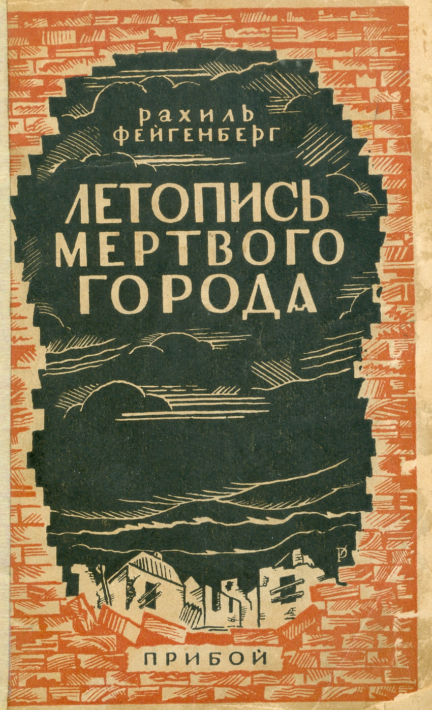
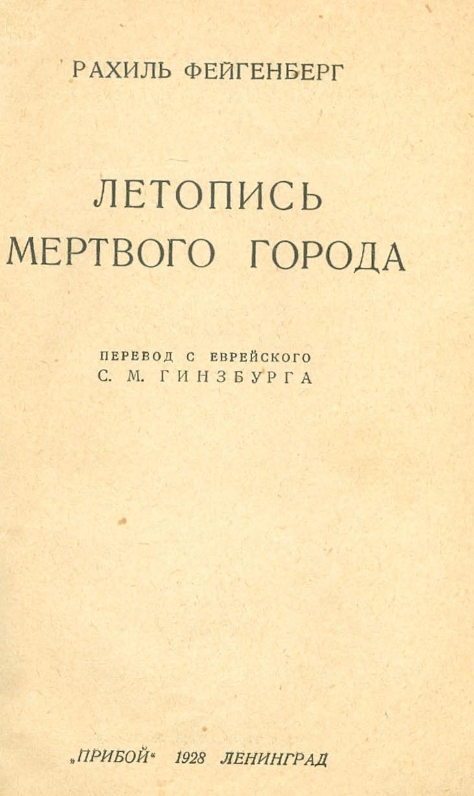
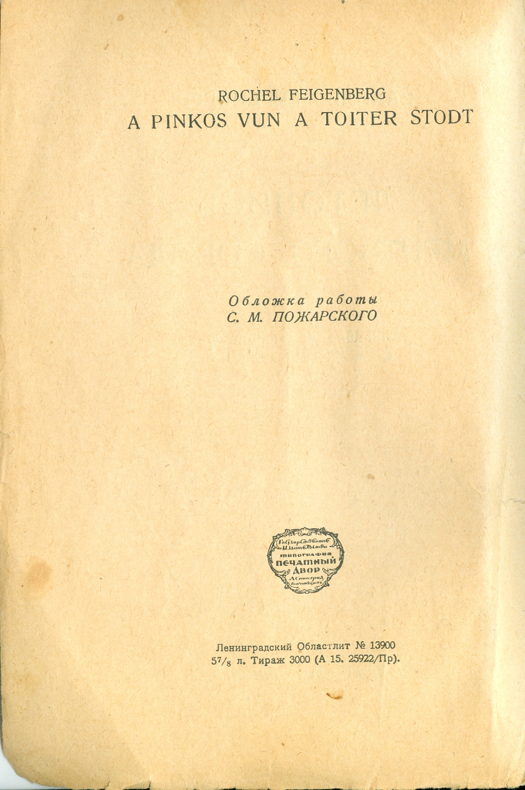
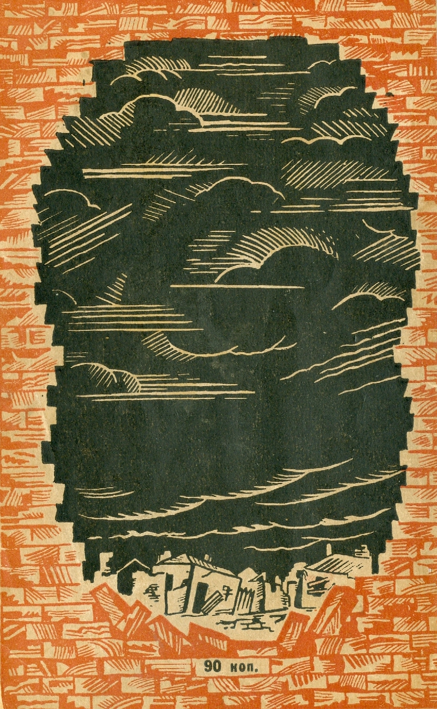

Возможно, многие скажут, что для публикации книги Рахили Файгенберг о еврейских погромах на Украине сейчас не лучшее время. Украинцы ведут тяжелую войну за сохранение своего государства. И большинство стран поддерживает их в этой борьбе. Но, я думаю, что для правдивого изложения фактов подходит любое время.
Для понимания ситуации на Украине нужно иметь обективную, многосторонюю картину. При этом, нельзя не учитовать то, что Украина в течении многих веков являлась одним из самых антисемитских государств. Резня казаков Богдана Хмельницкого, уничтожившая более 90% еврейского населения Украины. Гайдамаки и уманьская резня. Кровавые петлюровские погромы в 1919 году. И, наконец, энтузиазм, проявленный украинскими полицаями в уничтожении евреев во время Второй Мировой войны, вызывавший удивление даже у немцев.
Книга написана в советское время и умалчивает о погромах, которые совершала Красная армия. Но до петлюровских погромов погромам, совершенным Красной армией, было далеко.
Мне возразят: это было давно, а сейчас с антисемитизмом на Украине покончено, даже президентом избрали еврея. Да это так. Но до сих пор на Украине многие улицы носят имена палачей еврейского народа: Петлюры, Бандеры, а на главной площади Киева стоит памятник Богдану Хмельницкому. На мой взгляд, особым цинизмом является переименование города Проскурова в 1954 году, города подвергшевося особо жестокому погрому в 1919 году, в Хмельницкий, в честь Богдана Хмельницкого! Так, что до полного покаяния еще далеко. Впрочем, в равной степени это касается и так называемых "республик" ДНР и ЛНР.
И, разумеется, изложение событий произошедших на Украине 100 лет назад, ни в коем случае, не является оправданием того, что происходит там сейчас.
Виктор Баккал, май 2022 года.
 |
 |
 |
Летопись мертвого города. Рахиль Файгенберг
Сохранена орфография и пунктуация оригинального издания. (Использована программа FineReader)
Предисловие
Перед нами траурная повесть вырезанного еврейского местечка — повесть «мертвого города». В ней почти отсутствует изображение тех социальных моментов, на почве которых вырастала и выросла гровная классовая борьба, отсутствует описание той политической обстановки, в которой развернулась кровавая контрреволюционная гайдамачина. Идеология автора обывательско - примитивная. Но в таком случае — нужна ли эта повесть? Разве еще остались сомневающиеся, которых она может и должна в чем-то убедить? Все сказано и все доказано: в погромном смерче, пронесшемся по Украине, разрушено свыше 900 городов и местечек, учинено полторы тысячи кровавых расправ, погублено 300 тысяч еврейских жизней. Что еще можно добавить к этому, леденящему рассудок, балансу?
Но бывают хроники, которые потрясают простотой описания совершенных злодейств. В них тонкая фотографичность записи граничит с художественным воспроизведением событий и переходит в подлинное искусство. Ни истерических выкриков, ни сгущенных красок. Одна лишь эпическая, без вымыслов, без мрачных подчеркиваний, правда.. И эта страшная, но подлинная правда действует неизмеримо сильнее, чем насыщенная искусственным пафосом риторика.
К таким хроникам особого типа принадлежит повесть о «мертвом городе». Она ценна не новизной содержания, не открытием до сих пор неизвестного; она ценна тем, что конкретизирует материал на определенном, строго ограниченном небольшом участке пространства и времени, и конкретизирует его по возможности со всеми нюансами людской и вещной обстановки. Из бесконечно, длинной погромной ленты автор берет один «дубовский» отрезок и на нем показывает вам, как из недели в неделю, изо дня в день, из часа в час н а с л о я л и с ь муки, кровь, весь тот непередаваемый никакими словами ужас, которым были пронизаны еврейские сердца многих сотен городков и местечек.
Но дубовский снимок не только конкретен. Он типичен, и в этом другая значительная его сторона. Можно с уверенностью сказать, - что совершенное в Дубове повторялось в общем с полной к а ч е с т в е н н о й, если не количественной, тождественностью в Умани, Белой Церкви, Василькове, Тростянце, Херсоне. Погромы, как массовое производство, стандартизированы: дубовская хроника дает чрезвычайно выпуклое, яркое описание такого стандарта.
На совершенно мирное, полуторговое и полуремесленное местечковое население, далекое от всякой активной политики, абсолютно беззащитное; абсолютно лишенное какого, бы то ни было оружия, кроме - недейственных молитв и не всегда действенных, но всегда жадно хватаемых разбойничьими бандами кредитных билетов и прочих ценностей, — на это население внезапно делается, разумеется, до прихода или после ухода красных, первый разведочный налет. Падают и первые еврейские жертвы — подстреленные или разрубленные. Но этих жертв еще немного. Ибо едва начата погромная работа и задымилась первая пролитая кровь, как совершается то, что автор повести называет «чудом»: внезапно раздается рожок «красного броневика», который обреченные на смерть дубовские, евреи недаром назвали «ангелом - спасителем», под действием этого рожка разбойничья храбрость бандитов мгновенно уступает место панической трусости и бегству, — и обреченные получают кратковременную передышку.
Далеко не везде и далеко не всегда такое «чудо избавления» имело место, и в этом отношении, быть может, погромная летопись Дубова отличается от погромных летописей других мест, которые передышки не знали, которые сразу гибли под ударами громил. Но оно было и бывало. Всякому, кто в эту мрачнейшую для украинского еврейства полосу живал в мелких местечках и даже в таких крупных городах, как Киев или Одесса или Екатеринослав, — всякому памятны такие моменты: сигнал красного броневика прогонял кошмар смерти, месяцами душивший и удушавший евреев, предвещал освобождение от петлюровско-драгомировской пытки прямым огнем и железом, спасал от волчьих ям, в которые евреев загоняли и живьем зарывали.
Но первый налет только сигнал об опасности. За ним, по дубовской летописи, следовали в порядке очереди: м а л ы й погром с кровавой баней в погребе; четырехдневная тихая резня под лозунгом «побольше убитых»; и наконец большой погром, после которого в Дубове осталось лишь 26 живых мужчин, — прочие, за исключением немногих бежавших, были вырезаны. Таковы малые и большие этапы еврейского истребления в Дубове. Но едва ли многим от них разнились погромные этапы в других вырезанных местечках.
«Целые улицы, — писал Шульгин о киевском погроме.— охваченные смертельным ужасом, кричат нечеловеческими гол ослами, дрожа за жизнь... Это подлинный, непритворимый ужас, настоящая пытка, которой подвержено все еврейское население». Шульгин забыл прибавить: «нечеловеческие голоса» днем и ночью чередовались со зловещим звоном бьющейся посуды. Когда дом с еврейским населением осаждался вооруженными людьми, а купленная за деньги для защиты дома офицерская охрана оказывалась или притворялась бессильной, объятые смертельным ужасом евреи били в медные тазы, кастрюли, горшки и т а к и м образом давали весть о себе, молили о помощи. У пишущего настоящие строки до сих пор стоит этот звон в ушах. . . Но киевская пытка страхом, исторгшая как будто слово жалости даже из уст погромного идеолога, бледнеет перед массовым сожжением евреев в бане или в синагоге, перед дубовским «глинищем», в котором валялись обглоданные еврейские кости, перед мученическими смертями 70-летних старцев и трехлетних младенцев.
Еврейскую часть дубовского местечка грабили и убивали как кулаки и примыкавшие к ним деклассированные головорезы, так и приходившие извне погромщики в погонах и без погонов, «спасавшие Украину» наиболее безопасным для себя путем—путем поголовного избиения евреев. Но если в некоторых местечках, подвергавшихся разгрому, делались попытки сопротивления беспощадному врагу, если кое-где даже подымалась еврейская самооборона, героически и иногда, не без успеха отражавшая нападение, - то в Дубове врагу противостояла лишь мирная небольшая группка, включавшая еврейских «общественных деятелей» и немногих христиан.
Среди этой безоружной общественной «обороны» был и все последующее время почти одиноко оставался колесник Моше Шварцман — вождь еврейской бедноты. «Дерзкий крикун» при старом режиме, Моше-колесник еврейской беднотой был поставлен на первое руководящее место при новом режиме.
Моше, этот ремесленный полупролетарий, связанный с еврейской, массой, долгие годы мозолистыми руками сгибавший упрямые ободья, столь же упрямо и мужественно, преодолевая все муки, подчиняясь одному только голосу долга, оставался на своем общественном посту, жертвуя интересами своей семьи и своего дома. И если ему, потерявшему в погроме любимейшего сына, выпало на долю, среди крови и дыма пожарищ, «пережить полный разгром еврейского мертечка и принять предсмертный вздох последнего Из мучеников», то в этом—свое знамение времени. Моше-колесник — новая, исключительная колоритная фигура, в которой отразилась наша бурная, полная глубочайших потрясений и противоречий, революционная эпоха. Эта драматическая фигура еще ждет своего историка и настоящего художественного изобразителя. Но автор «мертвого города» ее открыл и показал, дал ее первую общественно-психологическую и скульптурную наметку, выдвинул на первый план в галлерее дубовских типов. В этом также его большая заслуга.
Мы отметили основные черты, позволяющие повесть о Дубове выделить из всего того,— правда, еще немногого, — что писалось о погромах. Тем самым мы ответили на вопрос, нужна ли она. Да, эта повесть нужна. Она оправдывает себя эпическим описанием виденного и слышанного,— описанием, которое волнует одной своей правдивостью.
И. Брусиловский.
I.
Когда-то Дубово было польско-помещичьим владением, которое входило в состав Подвысотского округа. Этот округ состоял из двенадцати деревень, окруженных старым дубовым лесом, влажно-зелеными лугами и тучными полями, которые принадлежали князьям Четвертинским. Затем они перешли к коржевским помещикам. Впоследствии подвысотские владения были проданы в разные руки, и Дубово купил грек Родоканаки. От него оно досталось русскому помещику Дюделину. Это уже было в последние годы. Дубово осталось совсем небольшим владением, потому что землю кругом местечка с лугами и лесами Родоканаки продал крестьянам из смежных деревень; те выстроили на полях дома и завели зажиточные хутора, разбросанные в одиночку вокруг местечка.
По официальным данным, евреи стали здесь селиться с 1779 г. До того времени Дубово было небольшой деревушкой в несколько изб, выстроенных помещиком для своих подвысотских крестьян, которые должны были здесь рубить старый дуб и выкорчевывать пни. У тракта, ведущего в Умань, помещик захотел построить город. С этой целью он выстроил в лесу корчму и здесь поселил еврея-арендатора. Этот арендатор и был первым евреем, поселившимся в Дубове.
В последние годы евреев в местечке было больше, нежели христиан. По статистике сахарного отдела при дубовеком кооперативе, в 1918 г. в Дубове проживало 1 050 христиан и 2 500 евреев.
Дубово расположено в 18-ти верстай от Умани. Тракт, ведущий в город, пролегает через богатые села и крестьянские земли. Местечко еще и теперь окружено небольшими дубовыми рощами. Далеко и широко раскинулись вокруг утопающие в цвету украинские деревни и среди полей и лугов — усадьбы разжившихся мужиков-хуторян. Между деревней и местечком катит в Буг свои тихие, глубокие воды, узкая речка Ятрань, и на омываемых ею берегах цветут крестьянские сады и огороды. На высоком берегу зеленеет старый дубовский. парк с его темными аллеями, а там на горе, словно охраняя всю округу, гордо высится обвеянный старо-пбмещичьим уютом коржевский замок, окаймленный цветами и деревьями. У реки стоит большая мельница, которой кормились дубовсекие евреи.
Все они были «промолщиками». Из трехсот еврейских семейств, проживавших в Дубове, сто семьдесят торговали мукой; остальные были ремесленники и лавощшки. По четвергам окрестные крестьяне свозили на базар свое зерно, дубовские евреи его скупали, перемалывали на местной мельнице и отвозили в Умань или отправляли в другие города. В местечке сильно развилась хлебная торговля. Тамошняя мельница давала большие заработки окрестному крестьянскому населению, сами же евреи с трудом добывали скудные средства, чтоб влачить свое мелко-мещанское местечковое существование. Богачей среди них не было.
Только в последние годы войны и революции, когда хлеб стал самым ценным продуктом в стране, для дубовских евреев открылась перспектива обогащения. Все, что было ценного в городе, потекло к крестьянскому населению, в обмен на кусок хлеба. Но он не мог совсем миновать еврейских посредническйх рук, и на долю евреев также перепадала частица тех богатств, которые украинский крестьянин накоплял в бочках и зарывал в свой чернозем.
Раньше в Дубове не было «промолщиков - христиан. Исключение составлял только поп, питавший слабость к подобным еврейским делам: он также занимался помолом, в компании - с одним евреем. Но в последние годы, когда стали преследовать евреев за спекуляцию и отбирать у них в пути товар, дубовская торговля мукой ускользает из еврейских рук, и еврею приходится жить милостью крестьянина. Каждый раз, когда последний покрывал своим именем еврейский воз с мукой, направляемый в Умань, он забирал себе и львиную долю заработка.
Так жили дубовские евреи в 1919 г., когда начался разгром еврейских поселений на Украине.
II.
Общественная жизнь среди дубовских евреев была развита весьма слабо. Воспитание детей шло старыми, традиционными путями. От зари до зари мальчики учились в «хедерах»1. Наиболее способные переходили потом к Давиду-«шойхету»2, которого прочили, в преемники старого раввина. Немногих же исключительно одаренных отправляли в «ешиботы»3, для получения диплома на раввина или «шойхета». В земской школе обучались только девочки из зажиточных еврейских семей Дубова; там же учились и дети состоятельных христиан. На лето в местечко приезжали также студенты и курсистки из других городов, чтобы давать здесь уроки.
Высшие учебные заведения окончили только дети Гедалия Корецкого и адвоката Нестровского. Эти местные интеллигенты сообща с сыном раввина, Менделем Бердичевским, основали здесь во времена Керенского еврейское народное училище, где сами преподавали древне-еврейский язык, разговорный и русский; пригласили они также дубовского «меламеда»4 Пейсаха Зборского для обучения талмуду5. Однако, дубовские евреи этой школой не интересовались; никто даже не хотел сдать внаймы помещение под нее, и пришлось заниматься с детьми в женском отделении синагоги.
Кроме названных выше единичных интеллигентов, которые кстати все были сионистами, Дубово обладало еще аптекарем-евреем, который, совсем как в те далекие времена, когда евреи только стали приобщаться к русскому просвещению, стыдился своего еврейства. Он и его жена происходили из среды уманской еврейской зажиточной интеллигенции. В Дубове они с евреями не знались и никакой связи с ними не поддерживали. Дружили лишь с христианами; завсегдатаями у них были земский фельдшер Девяткин, до болезненности страдавший юдофобией, акушерка Шнурук и ее муж — агент по страхованию, оба заклятые антисемиты, и мрачный страж старого порядка, Пристав Янович с женой. Но, в Дубове смотрели на это, как на, естественный порядок вещей: на то он и аптекарь, чтобы не любить евреев и якшаться с антисемитами.
Крайне ассимилированным и совершенно оторванным от еврейской массы был и адвокат Нестровский, редко уделявший медный грош на еврейские нужды.
Дубовский раввин, Моше-Арон Бердичевский, был человек старого закала. Этот старик был чрезвычайно прост в жизни и чужд мирских помыслов.
У него были малые дети, которых надо было содержать; потом сыновья подросли к призыву, дочерей надо было выдавать замуж. Но про все эти заботы, связанные с расходами, знала лишь раввинша. Община предоставила ей монопольную продажу дрожжей, и она этим перебивалась от субботы до субботы.
Когда-то добродушный «кацап», арендовавший дубовскую мельницу, почувствовал жалость к раввинше, которая каждый четверг с мешком в руках искала, где бы взять в долг пуд муки. И ему пришла мысль побудить еврейских хлеботорговцев отдавать с каждого мешка муки по одному фунту для смиренного, доброго «рабина». И с тех пор это вошло в правило. Добродушного «кацапа» сменяли уже несколько евреев-мельников, но обычай уделять по фунт,у муки для раввина оставался в силе. Когда после пожара выстроена была паровая мельница, и хлеботорговля в Дубове сильно разрослась, раввинша получала так много фунтов муки, что она на каждую субботу выпекала «халу»6 для всех вдов и сирот местечка.
Но все это не имело касательства к раввину. Он материальными делами не интересовался. День и ночь просиживал он над талмудическими фолиантами. Добрые дела он творил с рвением, благодаря небо за ниспосланную ему - возможность делать добро. Так, много лет тому назад он исцелил свою паству от лихорадки: доктора в местечке не имелось; дубовские евреи в ту пору были большими бедняками; раввин съездил в Умань, собрал там немного денег, купил хинина и аптекарские весы, и дома развеской и распределением хинина занялась вся его семья - раввинша с детьми готовили порошки, а затем раввин сам обходил ежедневно все дома и давал каждому больному лекарство. Таким образом местечко освободилось от эпидемии.
В общинные дела дубовский раввин не вмешивался. Ему были не по душе распри, тяжбы и семейные раздоры. Вообще он бывал недоволен, когда его отрывали от учения. Таким он был неизменно все пятьдесят лет, в продолжение которых состоял раввином в Дубове.
Кроме раввина, местечко гордилось ученостью, набожностью и честностью «меламеда» Пейсаха Зборского. Ютясь в маленькой избушке, он неустанно изучал закон. Славился своей талмудической ученостью также юноша «илуй»7 Абрам Укельман. Его мать, молодая вдова, отправила его учиться в знаменитых «ешиботах» Литвы, где он уже 17-ти лет получил раввинский диплом.
Гордилось Дубово и богобоязненными, добрыми хозяйками, которые кормили у себя поочередно бедных школьников. Выдавалась своей щедрой отзывчивостью также Злата, жена мясника; каждый вечер она варила мясной ужин для обедневших обывателей, чтобы они могли наесться досыта.
III.
Были в Дубове и общественные деятели. Виднейшим в местечке лицом являлся Гедалий Корецкий. Он также был сионистом (кроме сионистов, представителей других партий в Дубове не имелось). Происходил он из бедной, почтенной семьи. Отец его, сельский простолюдин, сознательно и разумно относился к образованию своих детей. Гедалий был знатоком древне-еврейского языка. Уже взрослым он добился аттестата зрелости и стал студентом, но по недостатку средств университета не окончил.
В Дубове Гедалий Корецкий в Течение многих лет состоял управляющим имениями Родоканаки. Затем он торговал хлебом, был крупным купцом. Но образ жизни он вел весьма скромный. Дочерям дал высшее образование, обучая их в столицах. Дома обходились без прислуги.
В последние годы семья Корецких жила очёнь стесненно: с тех пор, как началась спекуляция, он бросил торговлю, и приходилось высчитывать каждый грош. Он всецело в это время отдался общественной деятельности. Его дом стал средоточием еврейских общественных интересов в Дубове, и этот рослый еврей с гордой осанкой и преждевременно поседевшей головой всюду являлся представителем еврейской общины местечка, которого он был красой и гордостью. Он был трижды выборщиком от всей Уманщины в государственную думу. Во время революции он организовал в Дубове еврейский кооператив и безвозмездно исполнял в нем обязанности бухгалтера. При Керенском он был избран единогласно евреями и христианами в волостное земство, а при большевиках таким же образом в исполком, хотя открыто заявил, что он —сионист и таковым останется. Но долго работать в исполкоме он не мог и отказался от своей должности, посвятивши себя всецело работе в созданном им кооперативе.
IV.
Жил еще один общественный деятель в Дубове.
То был содержатель коробочного сбора8 Шмуэль-Ицхок Шкодник. В молодости он торговал лошадьми и был беден; потом разбогател, имел мельницы, леса и винокуренные заводы. Он также много лет подряд был откупщиком коробочного сбора в Дубове. Это был человек с большим самомнением и без образования, хотя с внешним лоском, но с отзывчивым сердцем. Любил он вмешиваться в общинные дела и жестоко преследовал всякого, кто дерзал задеть его самолюбие.
Этот человек с большим гонором стремился к популярности среди простых людей. Он постоянно вел борьбу против раввина и талмудически образованных обывателей местечка, и его оплотом были прихожане молельни ломовых извозчиков. Среди окрестных крестьян он пользовался большим почетом; еще со времени его прежней торговли лошадьми на ярмарках его знали стар и млад. Он также охотно оказывал одолжение бедняку-крестьянину, часто ссужал деньгами на покупку лошади или коровы. Сочувствовал он и еврейскому бедняку, но общинные дела он хотел вершать единолично и боролся со всякими, кто только ему перечил.
Шкодник любил жить богато. У него в Дубове был барский дом, обсаженный деревьями, и при нем прекрасный фруктовый сад. Детей он не имел, но у него воспитывалась племянница его жены, к которой он был привязан, как к родной дочери. Мать этой девочки не отличалась серьезностью: она бросила мужа и ребенка и, влюбившись в христианина, жила с ним много лет в Умани в крестьянской слободе и, наконец, сама крестилась. В Дубове ее называли: «Христья».
Дочь ее выросла в доме Шкодника и была очень славной девушкой. Дядя выдал ее замуж за кантора9 и в дальнейшем продолжал о ней заботиться, как о родной дочери; у него же воспитывались ее двое старших детей.Это были две красивые и способные девушки. Детьми они окончили в Дубове земскую школу; дома их еще обучали древне-еврейскому языку и игре на рояли. Затем дед отправил обеих учиться в Умань. Старшая, Фейга-Витель, поступила в коммерческое училище, а меньшая, Этель, училась в гимназии. Шкодник с женой не могли досьгга налюбоваться ими. В Умани они жили, как барские дети, а на лето приезжали в Дубово к деду. Тогда в доме Шкодника становилось очень весело. Девушки были красавицы, обе играли и пели. Окна светлых и уютных комнат широко раскрывались в фруктовый сад, и молодежь местечка охотно проводила время в красивом и богатом доме откупщика. Плохо было только то, что эти девушки обе были настроены украйнофильски, говорили по-украински и предпочитали встречаться с украинской молодежью.
Таково было влияние уманских школ на этих двух красивых евреек из Дубова. Правда,старшая из сестер, рослая и цветущая Фейга Витель, еще дома была украйнофилкой. В детстве, еще учась в земской школе, она любила говорить по-украински и распевать украинские песни. Все еврейское было ей не по душе. Нежная же, прелестная Этель дома была, наоборот, националистически настроена: охотно училась древнееврейскому языку и постоянно наигрывала или распевала еврейские народные мелодии.
В Умани обе стали заядлыми украинками. Немногие интеллигентные молодые евреи, посещавшие их в Умани, неизменно встречали у них украинских гимназистов; последние обнаруживали такую заносчивость и так грубо обходились с еврейскими гостями, что дубовская молодежь сговорилась не посещать этих двух красивых девушек. Завсегдатаем у них был крестьянский юноша, Маркелл Бришко.
V.
Узкие переулочки, где жила беднота Дубова, имели своего представителя среди общественных деятелей местечка; это был колесник Моше Шварцман.
Он имел колесную мастерскую и тяжелым трудом прокармливал жену и детей. Но для общинных дел у него всегда оказывался свободный час. Каждое общественное дело встречало в нем живой отклик, и он открыто высказывал свои суждейия перед общинными заправилами из местных богачей и ученой братии. Говорил он всегда дельно, и волей-неволей заставлял себя слушать. Он являлся представителем трудового еврейского населения Дубова. При старом режиме с этим элементом мало считались, но все-таки боялись «дерзких крикунов» из этой среды, которые вмешивались во все. А с таким «крикуном», как Моше Шварцман, общинным заправилам все же приходилось считаться: принадлежа к «грубому простонародью», он на своей «улице» был уважаемым человеком, к тому же умел обходиться с людьми и прекрасно разбирался в любом вопросе; поэтому заправилам Дубова пришлось дать ему рядом с собою место в бывшей мещанской управе.
Это была наивысшая общественная ступень, достигнутая Моше-колесником в Дубове при старом режиме. Но лучшие его годы начались лишь после революции. Для еврейской бедноты он был своим человеком, его любили также и крестьяне из окрестных деревень. То не было тем признанием, каким пользовался бывший торговец лошадьми Шмуэль-Ицхок Шкодник, который вел богатый образ жизни и оказывал одолжения, как добрый, пресыщенный барин. Нет, Моше-колесник был свой брат. Для всей округи он изготовлял колеса к телегам и, стоя за работой, запросто беседовал с каждым крестьянином; вместе выпивали по рюмочке, обмениваясь благопожеланиями. К тому же он был бедняком, и его постоянно одолевали заботы о том, как одеть и обуть своих семерых малых детей.
У него была мечта сделать своего сына доктором. После революции Моше стал самым видным, первым по значению гражданином в Дубове, которого избирали на важнейшие должности. Гедалий Корецкий всюду представлял собою еврейское мещанство, Моше-колесник же — еврейскую бедноту. Были и другие еврейские представители, но ответственность за всех и все лежала на них обоих. Интеллигент Корецкий не мог долго оставаться при исполнении возложенные на него, обязанностей. При первом конфликте между законом и интересами торговцев-евреев, его сердце дрогнуло, и он ушел в тот нейтральный уголок, каким в то время являлся еврейский.кооператив. Моше колесник же оставался на своем посту. Он делал все: охранял новый порядок, где можно было, оказывал помощь евреям, вел борьбу со своими сотоварищами - крестьянами, которые были заражены украинским национализмом и юдофобством. Наконец, он обеспечил ново-учрежденное еврейское училище помещением, реквизировав для этой цели дом одного дубовского богача-еврея.
Он, конечно, нажил себе врагов среди еврейcкого мещанства Местечка, но впоследствии все стали его друзьями. То был единственный еврей в Дубове, который умел вести переговоры с бандитами в то время, когда все еврейское население местечка творило предсмертные молитвы, прячась в погребах. На его долю выпало пережить полный разгром еврейского Дубова и, оставаясь на своем посту, принять предсмертный вздох последнего из мучеников.
VI.
Сначала особой вражды между христианами и евреями в Дубове не было. При жизни прежнего попа покойников-христиан носили на кладбище через местечко мимо еврейских домов и лавок, и это никого не задевало. Когда же прибыл в Дубово сменивший его молодой священник, похоронные процессии стали направляться в обход по улицам, населенным христианами, избегая прямого пути; новый поп находил неподобающим носить кресты и хоругви по еврейскому местечку. В остальном же он был благожелателен к евреям. Он любил иной раз поторговать. Когда цены на хлеб повышались, ему не сиделось дома, но без своего еврейского компаниона он ничего не делал. Со всеми «промолщиками» он был на короткой ноге.
Дружелюбные отношения были и со стороны крестьян.
В 1905 г., когда повсюду происходили еврейские погромы, из Умани однажды прибыли в Дубово какие-то подозрительные люди и внушали крестьянам, будто евреи собираются вырезать всех христиан в местечке.
Было это в пятницу, под вечер. Крестьяне из пригородных слобод с топорами и вилами пришли к старшине, требуя ударить в набат, чтобы напасть на евреев, так как последние, мол, намерены в эту ночь вырезать всех христиан до единого. Старшиной тогда был Адриан, пожилой крестьянин, спокойный по натуре и весьма рассудительный. Он предложил возбужденной толпе, стоявшей перед ним с вилами и топорами, отправиться предварительно посмотреть, что делают теперь евреи: если они собираются в эту ночь перебить христиан, то, вероятно, к этому готовятся; необходимо, стало быть, подкрасться под окна еврейских домов и высмотреть, что там происходит.
Толпа дала себя уговорить. Избрали трех попов и к ним четвертым старшину, чтобы они подходили потихоньку к окнам и подслушивали, что евреи делают в своих жилищах.
Дело происходило в ноябре, темной ночью с пятницы на субботу. Грязь была непролазная. Было сыро и холодно. После трудовой недели евреи устали, их жены едва управились в короткий зимний день с предсубботними хозяйственными хлопотами. Как водится в эту пору в маленьких еврейских местечках, обыватели Дубова съели свой суп с лапшой и улеглись спать. К какому окошку наши разведчики ни подходили, всюду было темно, и народ спал так крепко, что храп слышен был и на улице.
Только в одном окне был свет; это было в доме раввина. Даже у степенного, умного старшины зародилось подозрение: всюду спят, а у раввина светло; там, верно, что-то происходит. Не там ли идут приготовления? У раввина, должно быть, собрались старейшие евреи и обсуждают план нападения на христиан!
Четверо посланцев подкрались к домику раввина. Но опять то же самое: тишина, все спят, слышно даже тикание часов. Только один раввин, в своем домашнем халате, с ермолкой на макушке, сидит на постланном диване, наклонившись над фолиантом, и углублен в чтение. На убранном по-субботнему столе стоят восемь подсвечников, над которыми раввинша молилась в пятницу под вечер. Свечи уже догорели. Только небольшая лампочка освещает раскрытый фолиант и наклоненное над ним бледное, изможденное лицо раввина. От времени до времени он читает вслух, на распев, так трогательно и задушевно.
Старшина под окном не мог удержаться. Он прыснул со смеха, а за ним остальные трое.
Раввин так был углублен в чтение, что даже не оглянулся.
— Ну, и головорез! Нечего сказать! — посмеялись они между собой и отправились в слободу рассказать, что евреи спят так, хоть разнеси их всех, а «рабин» их сидит один у стола, высохший, как жердь, и напевает что-то по книге. Крестьяне с вилами и топорами в руках также смеялись над «головорезом»-раввином, который поет, сидя над книгой... Вся эта история им просто понравилась, они много хохотали и в добродушном настроении спокойно разошлись по домам.
Лишь утром дубовские евреи узнали, какая опасность угрожала им в минувшую ночь.
VII.
Настоящих юдофобов в Дубове было несколько человек наперечет. В большинстве это были ново-испеченные интеллигенты из богатых крестьянских семейств.
Героем украинского шовинистического движения в Дубове был упомянутый уже «сердечный друг» внучек Шкодника, Маркелл Брищко. Он был сын богатого крестьянина. Его отец имел в Дубове хороший дом и прекрасные фруктовые сады. Маркелл окончил земскую школу, где обучалось и много еврейских детей, в том числе обе сестры — Фейга-Витель и Этель. По окончании школы он некоторое время занимался частными уроками в Дубове и преподавал в еврейских домах. Затем он состоял волостным писарем. Оставался он в этой должности до мобилизации; будучи отправлен на фронт, он попал в австрийский плен и был препровожден в Галицию. Из плена он вернулся больным и был отпущен домой для лечения. Вообще он был слабого здоровья, тщедушный, низкого роста и такой бледный, точно только-что встал после тяжелой болезни.
В армию Бришко уже не вернулся. После февральской революции он отправился в Умань, где посещал учительские курсы. Тогда-то он стал частым посетителем внучек Шкодника. Он часто бывал у них и тогда, когда они приезжали на каникулы домой к деду. При первом приходе большевиков он в Дубове занимал должность секретаря милиции, но втайне работал в украинском движении. Он также организовывал спектакли на украинском языке.
Вторым интеллигентом, который тогда же работал вместе с Бришко в подпольных украинских организациях, был его родственник Андре Овчарук. Он также часто захаживал к Шкоднику в дом. Как и Бришко, он был из Дубова, но окончил четырехклассную школу в деревне Бабанке, а затем военное училище в Киеве. В Дубово он вернулся уже офицером.
Когда власть захватил Петлюра, Овчарук вступил в армию и начал работать на петлюровский лад. Он и Бришко разъезжали по деревням и вели среди крестьян агитацию против коммунистов и евреев, желающих, мол, командовать над украинским народом. С этой же целью в Дубове организовывались тайные собрания. Шовинистически настроенные интеллигенты местечка и окрестных деревень собирались по воскресеньям у акушерки Шнурук, принадлежавшей к томуже лагерю, и там вырабатывались разные планы.
Бывали тут в сборе: сын священника,— студент киевского политехникума, и другой его сын—семинарист; аккуратно являлся бывший эконом подвысотских имений, который слыл серьезным человеком и хорошим семьянином. Вместе с ним приходил Демский, благовоспитанный и скромный управитель коржевских владений, и вслед за ним — двое молодых поляков, служивших у него в конторе. Но ревностнее всех был молодой фельдшер Девяткин со своими цинично-жестокими шутками насчет будущих избиений евреев. Весьма внимательно к нему прислушивался владелец дубовской мельницы Грабовецкий, который раньше был офицером у Петлюры, и с тихим смешком на него глядел пожилой и добродушный ветеринар Лонгвинов. К числу веских посетителей этих собраний принадлежал и бывший почтальон Мельник, который при Петлюре был назначен начальником почтовой конторы и с тех пор открыто проповедывал уничтожение евреев за то, что они все—коммунисты.
Акушерка Шнурук принимала их, как своих гостей, но за столом водки не полагалось. Настроение всегда было очень серьезное: обсуждался план большого еврейского погрома, и вдохновителями дела всецело были Бришко и Овчарук.
После событий в Проскурове и Теплике евреи Дубова стали сильно опасаться Маркелла и Андрюши. Жена Шкодника, Хая, в целях успокоения общества объясняла визиты их тем, что ее внучки, Фейга-Витель и Этель, прекрасно говорят по-украински. Маркелл и Андрюша, уверяла она, совсем оживают, когда они слышат родную, речь.
Бришко и Овчарук тем временем проводили весело вечера в доме Шкодника, распевая и наигрывая украинские народные песни, а днем они разъезжали верхом по деревням с тайным призывом к резне евреев. Еврейская же молодежь в это время избегала дома Шкодника, как зачумленного гнезда. Даже провизор Моше Чернов, который сам охотно говорил по-украински и был на «ты» с Маркеллом и Андрюшей, как со своими школьными товарищами,— даже он, несмотря на то, что был до безумия влюблен в Фейгу-Витель, также перестал посещать дом Шкодника и его внучек.
VIII.
Семя, брошенное украинской националистической интеллигенцией, взошло даже пышнее, чем они рассчитывали. В воскресенье 11 мая 1919 г. в Умани открылся крестьянский съезд. В тот же день его пришлось закрыть. Представители кулацкого крестьянства, которые имели здесь большинство, были настроены враждебно к пролетарской власти. Уманский исполком закрыл съезд и, объявив военное положение, предложил делегатам разъехаться по домам. Одновременно арестовали бывшего ученика уманской школы садоводства и огородничества, Щогрина, видного руководителя украинского националистического движения, который на съезде открыто агитировал против «власти коммунистов и евреев», призывая крестьян к оружию.
Это было в воскресенье после полудня, а под вечер комиссар Гол дал знать уманскому раввину, что власти покидают город.
В одиннадцать часов утра в понедельник, в Умань вступили, под предводительством украинского левого эсера Клименко, крестьянские партизаны. К ним вскоре присоединились зажиточные мещане из предместий, беглые арестанты и часть учащихся-христиан.
Было это 12 мая. Делегация от еврейской общины к Клименко не успела двинуться с места, так как на улицах уже валялись трупы убитых евреев.
13 мая вдохновителе украинского кулачества дали знать партизанам, что «ёврейская» власть пала, и чтобы они не слушались «жидовских агитаторов». Со всех уманских колоколен раздавался трезвон, и черносотенный священник Никольский во главе крестного хода шествовал по улицам города. В тот день принудили трех уманских евреев вырыть себе самим могилы,
IX.
Из двух делегатов, посланных от Дубова на съезд, один из Умани куда-то исчез. Это был Зарочинский, служивший раньше матросом в черноморском флоте. Убежденный и сознательный социалист, он, конечно, сразу понял, что украинское националистическое движение превращается в гнусную резню евреев. Второй делегат в тот же день вернулся в Дубово и рассказал, что коммунисты разогнали съезд.
Бришко немедленно поспешил пешком в город. 12 мая он возвратился домой, тотчас же отправился в исполком и предъявил подписанный Клименко мандат, которым он назначался на должность коменданта Дубова. При этом он распространялся на тему о евреях и коммунистах: евреи, мол, хотели захватить на Украине власть в свои руки.
Христианские члены дубовского исполкома тотчас же признали новую власть и соединились с Бришко. За исключением исчезнувшего красного, матроса Зарочинскбго, это были все свои люди. Владелец дубовской мельницы Грабовецкий был учеником Петлюры и стоял на страже украинского националистического движения, как и матрос Монюно. Правда, свиноторговец Василий Смельницкий слыл «радикалом», потому что годами кочевал по Финляндии и петроградской округе, откуда вернулся одетый по-городскому и привез много денег и жену — выфранченную горожанку; шла молва, что у него имелись портреты Ленина и Троцкого, и однажды он пред кем-то проговорился, что они великие люди. Все же и он видел в евреях опасность для украинского крестьянства и на базаре, стоя возле продаваемых им свиней, постоянно отпускал словечки насчет евреев и еврейства.
Члены исполкома были темные крестьяне, которые делали все, что им ни говорили. Пятнадцать дубовских милиционеров также очень скоро приспособились к новым порядкам.
В понедельник, 12 мая, вечером у акушерки Шнурук состоялось собрание, обставленное большой таинственностью. Были в точности распределены роли, все были весьма воодушевлены и «патриотически» настроены. Решено было довести «святое» дело до конца.
После этого заседания Бришко роздал оружие местной милиции, а во вторник, 13 мая, весь день разъезжал верхом по окрестным деревням.
Евреи местечка с тревогой следили за ним, добиваясь узнать, чтб тут затевается. Моше-колесник и двое молодых евреев, которые дружили с Бришко и были с ним на «ты», пристали к нему, умоляя сказать им правду: не грозит ли - опасность еврейскому населению местечка? На это Маркелл ответил им кратко:
— Что-нибудь должно здесь произойти, но что жертв не будет — я ручаюсь...
Такой ответ страшно взбудоражил местечко, и Гедалий Корецкий пустил в ход испытанное еврейское средство.. Он нашел подходящий случай переговорить с Бришко по душе, как со своим человеком. Во вторник вечером он пригласил его. к себе на чашку кофе; в беседе он ему откровенно сказал, что, болея душой за евреев, он рад уходу коммунистов, которые уничтожают торговлю и тем подрывают существование евреев; он надеется, что украинское крестьянство будет иначе относиться к ним. Но теперь, в тяжелый момент смены власти, всюду могут найтись дурные люди, стремящиеся вызвать смуту. Поэтому он от имени дубовских евреев просит его охранять местечко, и для этой цели ему дают сто тысяч рублей «николаевскими» деньгами: охрана ведь должна стоить денег.
Бришко выслушал его до конца, но деньги принять отказался; ответил он и на этот раз кратко и загадочно:
— Когда я этого заслужу, вы мне дадите денег.
После этого вторичного ответа тревога в городе еще возросла. Боялись ночевать у себя дома; старики и дети прятались в глухих переулках, ища здесь укрытия в низких покосившихся домишках ремесленников и бедняков.
X.
Было это во вторник, 13 мая 1919 г.
Как только настала ночь, в Дубове произведено было несколько залпов из пулемета. Это был условленный сигнал к нападению на евреев. Тотчас же крестьяне из предместий и окрестных деревень, вооруженные топорами и вилами, ворвались в местечко.
Все это были местные люди; у них всех кожухи были вывернуты на изнанку, а шапки надеты козырьками назад. Вывернутые кожухи и надетые задом наперед шапки служили символом происшедшего переворота. Многие вымазали себе лица, чтобы не быть узнанными. Но дубовские евреи опознали всех. Начиная с фельдшера и бывшего почтальона Карчинского и кончая крестьянскими мальчиками, — их все знали в лицо.
Всех жертв убивали холодным оружием, стреляли же только на опустевших улицах для забавы. В эту ночь погибло тринадцать человек, убитых самым зверским образом. Преимущественно пострадали те семьи, с которыми местные крестьяне имели какие-нибудь счеты и споры.
Так пострадала и семья мясника Давида Фурмана. Жил он в одном из закоулков, поэтому у него укрылись все его родственники и друзья. Все при этом были уверены, что Давиду-мяснику не причинят никакого зла, так как с крестьянами у него были очень хорошие отношения. Они ему продавали в кредит своих коров от ярмарки до ярмарки, а он им отпускал в долг мяса, за которое они платили, когда в кармане водилась свободная копейка. К тому же его жена славилась своей готовностью всегда помочь в нужде. Это была уже знакомая нам Злата, стряпавшая каждый вечер мясной ужин для обедневших обывателей. В базарные дни в Дубове около нее всегда толпились кучки крестьянок, которые обращались к ней с разными просьбами и отзывались о ней, что господь ей дал добрую христианскую душу.
И именно со Златой в эту ночь случилось несчастье.
Произошло это случайно. У нее в доме искали другого еврея, также мясника, с которым какой-то дубовский крестьянин, бывший его соседом, имел спор из-за земельного участка. Этот крестьянин попросил приятелей рассчитаться в эту ночь, когда можно убивать евреев, с его соседом.
Этот Моше-мясник, которого именно искали, как раз не спрятался у Фурмана; но было уже далеко за полночь, кровь у громил разыгралась, а ружья, топоры и вилы были наготове в руках,— и они с бывшим почтальоном Карчинским во главе ворвались в дом Давида Фурмана, переполненный трепещущими евреями, их женами и детьми. Они первым делом потушили лампу, чтобы их не узнали, и при лунном свете, проникавшем сквозь окна, стали среди поднявшихся криков и воплей рубить направо и налево; некоторые бросились к комоду и шкапу и принялись грабить. Так были убиты в несколько минут сестра Златы с мужем (их семеро детей успели вырваться и спрятались на огородах), двое детей — восьми и десяти лет — ее брата, Арона-Зхария Коздой, и две соседки — молодая женщина и ее старуха-мать. Жестоко пострадала и сама Злата. Среди поднятых топоров и вил она с мольбами кинулась к знакомым бандитам, называя их по именам; она целовала им руки и заклинала прекратить бойню. Тут ее хватили топором по голове, переломили руку и выкололи глаз у ее четырехлетней девочки, которую она держала па руках.
Под конец над нею все-таки сжалились. Когда она в беспамятстве упала вместе с ребенком, один из бандитов вскрикнул:
— Братцы, ведь это Злата! Что вы делаете с бедной Златой!..
Этот крик заставил опуститься руки с топорами и вилами, и наступила мертвая тишина, которая продолжалась несколько секунд. Вдруг кто-то испуганно воскликнул:
— Значит, Мошки здесь нет? . . Где же он может быть?..
Из угла послышался плачущий сдавленный голос Давида Фурмана:
— Позовите доктора...
— Бедная Злата! — снова промолвил жалеючи кто-то из бандитов с вывернутыми кожухами и повернутыми шапками. Но в этот миг раздался выстрел в освещенное луной окно, и под лязг разбиваемых стекол все они бросились бежать из дома.
XI.
В среду, 14 мая, ни один дубовский еврей с утра не показывался на улице. Убитые лежали в домах, а оставшиеся в живых сидели подле, словно окаменев от ужаса. После полудня некоторые отважились выйти на улицу посмотреть, что делается. Тут и там у заборов валялись трупы. Улицу оглашал плач женщин, потом стало опять тихо. Мимо домов проходили люди с мертвенно бледными лицами, несшие изувеченных в больницу. Пронесли на койке также беременную Злату Фурман, израненную и все еще находившуюся в беспамятстве. Ее изувеченного мальчика жалостливый сосед-христианин еще ранним утром отвел в больницу. Заплаканные христианки принесли к ней туда же ее девочку с выколотым глазом.
Под вечер в Дубово вошли со стороны Коржева человек сорок крестьян с гармониками и пением. При них были ружья и шашки. Они остановились на базаре, чтобы отточить шашки, и по улицам разнесся хриплый лязг оттачиваемого оружия.
Евреи тотчас бросились бежать в поля и окрестные огороды, а прибывшие крестьяне со стрельбой за ними.
Беглецы в большинстве погибли в полях. На этот раз жестокость нападавших была еще кровожаднее. Они вырезали языки, носы и уши, кромсали живых людей. Особенно свирепствовали двое крестьян — Кирилл Чернюк и Мартын Зборжевский. Оба они были дубовскими жителями, имели дома, землю, хозяйство; оба были женаты и имели детей. Дочерей Кирилла охотно брали для разных работ в еврейские дома. Но оба они принадлежали к отбросам крестьянского населения Дубова. Мартын за грабежи и кражи был присужден к каторге; вернулся он домой во время революции. Кирилл также неоднократно сидел в тюрьме за воровство. Но в этот исторический час оба они оказались на посту и стали героями украинского националистического движения.
В четверг днем по улицам Дубова расклеен был приказ Клименко, которым воспрещались грабежи и убийства мирных жителей: это унижает украинскую «владу».
Бришко тотчас расставил милиционеров на мосту чтобы не допустить в местечко крестьян, приезжавших сюда, по четвергам на базар. Бандиты пустились бежать домой в окрестные деревни, но Кирилл и Мартын еще не хотели сложить оружия.
Кирилл в эти дни чувствовал себя как рыба в воде. В четверг утром он послал к Мошё-колеснику мальчика с запиской, чтобы ему доставили десять тысяч рублей. Тот ему ответил просьбой обождать до вечера. Немедленно устроено было у Гедалия Корецкого заседание, на котором было решено повидаться с Бришко и попросить его разоружить Кирилла. Десять тысяч рублей были собраны, но вручили их Маркеллу, чтобы он поделил их между своей молодой компанией. Бришко обещался охранять местечко и заявил, что бандитов он будет расстреливать на месте.
Кирилл же тем временем продолжал делать свое. После того как Моше-колесник не дал ему денег, он убил на огороде у своего соседа Соню Сошкину. Девушка эта была сиротой и вместе со своей старухой-матерью содержала лавчонку на одной из улиц, населенных христианами. Она в эти дни скрывалась на крестьянском огороде, где Кирилл ее настиг и всадил ей пулю в голову. Раненая она бросилась в реку, но он ее вытащил из воды, повлек обратно на огород и искромсал по суставам, приговаривая каждый раз: «Вот тебе сахар, вот тебе соль, вот спички!..»
К тому времени в волостном правлении уж был вывешен приказ Клименко. Евреи вышли на улицы, чтобы подобрать убитых, которые валялись на полях и огородах. При этом нашли и обрубки тела Сони, к которым уже подбирались собаки с соседних дворов. Их собрали в мешок и положили на подводу, чтобы отвезти на кладбище, где уже находился другой мешок с изрубленными останками хлебного маклера Исроэль-Лейба, убитого в поле; их с опасностью для своей жизни подобрала одна деревенская еврейка.
Христиан на улицах не было: увидев подводы с искалеченными еврейскими трупами, все крестьяне быстро покинули базар, а дети в страхе разбежались по домам. Среди мертвой тишины раздавались только сдавленные причитания женщин. Вдруг произошел страшный переполох. Евреи оставили трупы и бросились бежать, куда глаза глядят: Кирилл промчался по улице с окровавленным топором в руке и в таком виде вбежал к Гедалию Корецкому в дом. Он требовал у него десять тысяч рублей, угрожая при этом топором. Но тут подоспел Бришко и приказал Кириллу отдать ему топор. Кирилл Стал насмехаться над Бришко, который, мол, не знает, что теперь надо вырезать евреев, и злобно кричал:
— Это жиды тебя подкупили, и потому ты издал приказ, чтобы их не убивать!
Услышав эти слова, Бришко выхватил револьвер и двумя выстрелами уложил его на месте.
Затем он велел милиционерам отнести труп Кирилла на базар, на показ народу, и отрядил четырех крестьянских парней покончить также и с Мартыном. Те поймали его в роще близ Дубова. Они его тут же застрелили. Труп Мартына также был доставлен на базарную площадь, чтоб видели все, как поступает «влада» с бандитами.
XII.
15 мая. Клименко уже издал второе воззвание: прекратить кровопролитие, так как «жидовская власть» уже свергнута, и среди евреев имеется много неповинных...
Но в тот же день в Умань пришло из деревень много вооруженных крестьян, посланных расправиться с евреями, которые будто бы отравляют здесь колодцы, чтобы погубить всех христиан.
Этот навет об отравлении евреями колодцев распространился и среди христианского населения Умани, и Клименко должен, был снова выступить против кровопролития. Но на этот раз вооруженные крестьяне бросили ему обвинение, что он подкуплен евреями.
Тогда выступил другой украинский националист, Номак. Он заявил, что кровопролития приносят большой вред освобожденной Украине, так как они роняют народную «владу» в глазах Европы. При этом раздался также глас «христианского милосердия»: учителя «закона божия» уманских школ призывали любить всех, как это повелел сам Христос...
Это происходило 15 мая, а три дня спустя украинские интеллигенты-националисты признали нужным разъяснить уже в третий раз, что добиваются организации «народной» власти, а не резни.
Уманской еврейской общине был дан совет отрядить делегацию, которая приветствовала бы съезд. В тот же день комитет восстания выпустил призыв о мире между всеми народами, живущими на украинской земле, разъясняя, что евреи также страдают от «коммуны», и что вообще борьба ведется не против народов, а против тех, кто все забирает и ничего не дает.
Съезд признал еще нужным оправдать украинское крестьянство, взвалив всю вину за у майскую резню на городских мещан, которых поэтому не допускали в зал на заседания. Высказывались также упреки по адресу местных интеллигентов за их злостную агитацию против неповинных людей.
Но уже было поздно. Городское мещанство и крестьяне были уже отравлены ядом бандитизма, обращенного против еврейского населения, в отношении которого, на их взгляд, все было дозволено. В Умани среди белого дня появились на улицах бабы с мешками, которые забирали из беззащитных еврейских домов и лавок все, что попадалось им под руки, а уличные ребятишки играли с валявшимися трупами; школьники учились по ним стрелять в цель; иные обшаривали покойников, вытряхивали карманы, в поисках часов, портсигаров или денег.
Местечки и села охвачены были своеобразно разгоревшейся гражданской войной. Красные войска беспощадно преследовали восставших против власти советов, а украинское кулачество и темное крестьянство отвечали на это избиением и резней евреев
XIII.
Маркелл Бришко в эти дни также охранял законы «свободной Украины». Он из местных крестьянских парней организовал в Дубове добровольческий батальон, для предупреждения грабежей и убийств.
В ночь на пятницу евреи боялись ложиться; стояли на страже с узлами в руках, готовые, каждую минуту бежать. Но было тихо.
С наступлением дня снова начали свозить трупы с полей и огородов; кладбище огласилось плачем и воплями женщин, а вечером поднялась ужасная тревога: стало известно, что Маркелл забрал внучку Шкодника, Фейгу-Витель.
Было это условлено заранее; Бришко в великие дни «освобождения Украины» не забывал также про свои сердечные дела.
Во вторник вечером, когда начался погром, многие побежали спрятаться у Шкодника. Он принимал к себе в дом каждого, кто являлся, но ему было как-то не по себе, и он был очень взволнован.
— Я останусь здесь, у себя, — заявил он всем, — и пусть будет, как бог даст.
Дом Шкодника, конечно, пощадили, и все, кто в эту ночь там прятались, остались в живых. Но уже в следующую ночь этот дом не мог служить столь верным убежищем: внучки Шкодника, Фейга-Витель и Этель, заявили, что они не могут скрывать у себя так много народу, они боятся за самих себя. И Шкодник советовал каждому оставаться у себя дома и положиться на промысел божий.
Поздно ночью обе девушки объявили деду и бабушке, что они боятся ночевать дома. Маркелл прислал за ними солдата проводить их в слободу на ночь к его отцу; он наказал, чтобы старики также отправились туда же,—дом останется в целости, никто ничего не тронет.
Шмуэль-Ицхок твердо заявил, что он остается дома, и жена его, Хая, также решила не покидать своего жилища. Фейга-Витель и Этель оделись, во дворе их ожидал вооруженный солдат; девушки поцеловались на прощанье со стариками и ушли.
Но Фейга-Витель уже в дом деда более не вернулась. На утро пришла Этель в сопровождении того же вооруженного солдата и передала деду и бабушке, что Фаня осталась там, она стала невестой Маркелла, — сегодня они уезжают к священнику в Коржево, где и обвенчаются.
В пятницу вечером, когда в местечке наступила тишина и Бришко разрешил свезти трупы на кладбище, Хая Шкодник с плачем вышла,на улицу и стала причитывать, что Маркелл прошлой ночью выкрал у нее из дому Фейгу-Витель и увез ее к священнику в Коржево; что Бришко ночью пришел с двумя солдатами, открыл окно в сад и через него унес ее; Этель будто слышала все это, но боялась подать голос ... На другой улице в таком же духе жаловалась Рейца-канторша, мать Фейги-Витель.
И всех матерей в местечке, у которых были взрослые дочери, обуял страх; он, Маркелл, ходит ночью с солдатами и забирает еврейских девушек, чтобы их крестить!
Стемнело. Еще не все убитые были убраны, и кое-где на улицах и в домах лежали трупы; еще не всюду смыта была кровь со стен и дверей. Надвинулся пятничный вечер. Была густая тьма; лил проливной дождь. Но в местечке все суетились, словно в базарный день; мужчины и женщины бегали, как угорелые, ища подвод. Сколько было в Дубове еврейских девушек, их всех в пятницу вечером под проливным дождем отослали в Голованевск, под защиту тамошней еврейской самообороны.
XIV.
Добровольческий отряд, организованный Бришко из местных крестьянских парней для охраны местечка, стоял в смежном селе Коржеве. По просьбе Моше-колесника, они со своим атаманом и дубовской милицией пришли на кладбище, осмотреть трупы замученных и мешки - с развороченными телами, подобранными на полях. Было это в субботу после утренней молитвы. По распоряжению раввина, евреи вышли из синагог и, отправившись на кладбище, принялись хоронить покойников 10 стояла сильная жара, и откладывать погребение на следующий день было бы опасно для живых. Работали в глубокой тишине — Бришко строго наказал не плакать, так как вопли женщин тревожат мирных обитателей прилегающих христианских улиц.
То была тихая суббота в Дубове. Тихо разошлись с кладбища по домам и тихо уселись справлять «шиво»11. Но справить «шиво» до конца нельзя было, так как - добровольцы из отряда Бришко стали по ночам бродить по местечку и нападать на еврейские дома. Затем они стали смелее и не стеснялись делать то же самое и днем. На отдельных улицах они избивали каждого еврея, попадавшегося им навстречу. Так прошло несколько дней. «Тихая» еврейская община, которой велено было не плакать, встревожилась, и Моше-колесник стал искать какого-нибудь выхода.
Однажды он завел разговор по душе с группой парней из этого отряда и задал им вопрос, по секрету от их атамана, чем можно их побудить, чтобы они действительно как следует охраняли местечко.
Те его выслушали и ответили откровенно, что желают денег.
Моше созвал почетнейших обывателей к Гедалию Корецкому и предложил им образовать денежный фонд, чтобы местечко в это страшное время всегда имело возможность откупиться от грабежей и убийств; иначе он отказывается что-либо делать и постарается со своей семьей выехать в какое-нибудь другое место, где жизнь не подвергается таким опасностям.
Ему обещали собрать денежный фонд, и он взялся поладить с самим Бришко, чтобы тот согласился взять денег за охрану местечка.
Тем временем в Умани положение украинских националистов ухудшилось. 21 мая крестьяне с вывернутыми кожухами и повернутыми шапками ушли из города назад в свои деревни, захватив с собою оружие и награбленное у евреев имущество. С произведенным в Умани погромом они считали свою задачу законченной. Выступать же на фронт против организованной советской армии охоты не было. Вообще им казалось бессмысленным отправляться куда-либо дальше родной уманской округи; к тому еще близилась летняя страда, на полях работы было много, пора было приняться за сенокос.
Красные войска в последние дни укрепились и в ночь на 23 мая после перестрелки в окрестностях города вступили в Умань. Тогда же получено было известие, что большевистский отряд, оперировавший в деревнях, расстрелял Щогрина, одного из руководителей украинского националистического движения, пользовавшегося большим влиянием среди крестьян. Клименко с пятьюдесятью всадниками бежал из города, чтобы набрать свежие силы в селах для борьбы против советских войск.
Поздней ночью он проследовал мимо Дубова, и трое из его всадников въехали с гиканьем и свистом в местечко. Евреи в смертельном страхе вскочили с постелей, женщины падали в обморок. Кто-то, рискуя жизнью, побежал по освещенным луной улицам к Моше-колеснику, чтобы тот что-либо предпринял.
Моше оделся и собрался пойти разыскать милиционеров или кого-нибудь из компании Бришко. Кругом стояли его семеро детей и оплакивали его, точно покойника. Жена заградила ему путь, решительно заявляя, что не позволит ему пойти: мало, что ли, людей в местечке; все прячутся, и чуть какая беда—всюду он!
— Я скоро вернусь, — успокаивал измученный и изнуренный Моше жену и детей. И, закурив трубку, он ушел из дому.
Все обошлось благополучно. Боковыми переулками он пробрался в милицию, забрал с собою милиционера и отправился с ним по местечку посмотреть, кто это шумом и свистом нарушает ночной покой. Они набрели на трех всадников Клименко. Разговорились по-приятельски, и Моше их спросил, не нуждаются ли они в чем-либо. При свете луны они показали ему свои рваные сапоги; жаловались также на голод, и что у них горло пересохло от жары и пыли.
— Так что же, — ответил он им с улыбкой, — ведь тут люди живут! разве мы, упаси господь, такие, что не примем и не попотчуем украинца-служивого! Пойдемте, братцы, ко мне!
Он с милиционером пошел вперед, а за ним,— трое всадников.
Войдя к себе в дом, он успокоил детей и велел жене накрыть на стол, поставить водки и угостить лучшим, что найдется в доме. Всадники привязали лошадей и вошли в еврейскую хату отдохнуть. Все уселись за стол, как следует выпили, закусили и по-приятельски проболтали всю ночь. От них Моше узнал, что красные «нехристи» вступили в Умань и что атаман Клименко снова вербует в деревнях солдат.
Уже наступило утро, когда они дружески распростились с гостеприимным дубовским евреем, который при этом дал им три тысячи рублей «керенками» на покупку сапог.
XV.
Два дня спустя в Дубово въехал Клименко в карете, окруженный своими пятьюдесятью всадниками; партизан, набранных в окрестных деревнях, он оставил в нескольких верстах от города, в деревне Бабанке. Остановился он у дяди своего, Стафя Козака, богатого и хозяйственного крестьянина, жившего на своем хуторе под Дубовом. Всадники остались в местечке и начали озорничать на базаре. Еврей тотчас же закрыли лавки. Начали искать возможности повидаться с атаманом Клименко. Заступником на этот раз явился его дядя Козак. Двое уманских евреев имели маслобойню рядом с его хутором, и Стафя был с ними в добрососедских отношениях: во время ночных погромов он их с женами и детьми укрывал у себя в сарае. И вот эти двое мелких заводчиков упросили Стафю замолвить за дубовских евреев доброе слово пред атаманом Клименко, чтобы он наказал оберегать местечко от злых людей.
Богатый хуторянин добросовестно выполнил их просьбу. При этом он слегка пожурил своего племянничка за то, что он слишком распустил свою молодежь, и никто не уверен в сохранности своего имущества, да и жалко людей, хоть на них и нет креста... Клименко добродушно похлопал его по плечу: ему даже понравилось то, что дядя заступается за евреев. Он заявил, что немедленно созывает в волости сход, и чтоб евреи местечка послали туда делегацию.
Пошли, конечно, постоянные представители — Моше-колесник и Гедалий Корецкий; внушительности ради, они взяли с собой еще одного видного обывателя, высокого, благообразного, с окладистой черной бородой.
Гедалий Корецкий начал было говорить пред Клименкой и созванными в большом количестве крестьянами. Но он был взволнован, слезы сдавили ему горло, и он обратился к Моше, чтобы тот излил пред крестьянской «владой» все еврейское горе. Моше на свой простой лад изложил им, что он рабочий человек, что он подобно им своими десятью пальцами кормит себя с женой и семерых детей, и что ему, как всякому, дорого его добро, добытое тяжелым трудом. Пусть ему укажут, кто из евреев здесь в Дубове коммунист, и того все вместе, евреи и христиане, разорвут на части...
- Выдать, что ли, вам бумагу, что вы можете свободно жить на нашей украинской земле? — стали раздаваться возгласы из толпы крестьян,— а в Голованееске ваши-то как мучают наших мужиков?!
Но тут выступил сам Клименко. Он им указал, что они смешивают дурные элементы с невинными людьми; он сам, мол, большевик, только он против «коммуны». При этом он строго приказал, чтобы было спокойно; тех, кто будут грабить и убивать, он будет расстреливать на месте.
В эту минуту прибежал какой-то еврейский мальчик сообщить Моше, что всадники Клименки громят еврейскую лавку. Тот сказал об этом на ухо атаману. Клименко побледнел и объявил, что должен сейчас уйти, а заседание пусть крестьяне продолжают уже без него. Не прошло и получаса, как он со своими кавалеристами покинул местечко.
XVI.
Спустя несколько дней из местечка Торговицы прибыл в Дубово отряд человек в пятьсот с красным знаменем и с красными бантами на шапках; они все были при ружьях и везли с собой пулеметы. Это были красные партизаны из торгового села Новоархангельска, Елисаветградского округа, расположенного у моста через р. Синюху, как раз против м. Торговицы, населенного торговцами-великороссами. Молодежь из этого села, находящегося на пограничной линии между Украиной и б. Новороссией, была настроена коммунистически и во время гражданской войны летом. 1919 г. стала на Сторону советской власти. Эти молодые парни добровольно обходили еврейские, местечки уманского района для преследования бандитов.
С этой целью они явились и в Дубово. Приход их возбудил страх среди евреев, так как красные банты и знамя были также и у всадников Клименки. Уже хотели было бежать к Моше-колеснику, чтобы он договорился с ними насчет контрибуции, но тут показался Василий Плахотный, дубовский крестьянин, служивший ранее матросом в балтийской флоте, который был убежденным коммунистом и скрывался от местных бандитов, прячась наравне с евреями. Он и его молодая жена не показывались на улицу без оружия. Этот красный товарищ в два слова столковался с прибывшими и, узнавши, кого они ищут, втихомолку назвал им деятельных соратников Маркелла Бришко — его родственника, петлюровского офицера Андрея Овчарука и черносотенного матроса Петра Монюно.
Андрюша в ту пору уже устранился от «дела». Во время уманского погрома он немного побаловался но вернулся домой недовольный. Отказавшись дальше работать на «благо» Украины, он жил у родителей и проводил дни, сидя с книжкой в руках на крыльце их белого, уютного дома с двумя липами у входа.
Матрос Монюно успел скрыться, а Андрюшу арестовали, как он сидел, с книжкой в руках. Красные партизаны из Новоархангельска вели его, мертвенно бледного, с непокрытой головой, по улице, приставив револьверы к его вискам. Вслед бежал его отец, богатый крестьянин Дезерий Овчарук, который и в прежние годы выдавался своей ненавистью к евреям, и вопил: — Братцы, евреи, спасите моего сына! Он никому не делает зла! Только сидит дома за книжками. Евреи, братцы, кто в бога верует — спасите!
Местечком овладел ужас. Он, Дезерий, давно известный разбойник, Бришко с Андрюшей в близком родстве, их матери родные сестры, и они наверное постарается жестоко отомстить! И община начинает хлопотать за «невинного» Андрюшу: виднейшие еврейские обыватели Дубова слезно просят за него, клянутся, Что он к резне евреев не причастен. Моше-колесника: силой притащили из дому, чтобы он замолвил, пролетарское слово за Андрюшу: тот, ведь, ни во что не вмешивается, только сидит дома да читает книжки!..
Красные партизаны убеждали евреев не вмешиваться и не стараться выручать погромщиков. Красный матрос Василий успел им шепнуть, чтобы они не слушались евреев и их ложных уверений: они напуганы. Но евреи оказались настойчивыми: они так долго молили и упрашивали «кацапов» из Новоархангельска, что те в конце концов плюнули на них и на арестованного и покинули местечко.
XVII.
Случай с Андреем Овчаруком произвел на Бришко сильное впечатление. Если евреи пользуются таким весом у большевиков, то дело становится нешуточным. Красные отряды в ту пору распространились по всей Уманщине. Стоит только указать на кого-либо, и тому приставляют револьверы к вискам. Если так, то ему, Маркеллу Бришко, необходимо выяснить в точности, как к нему относится еврейская община Дубова.
И он произвел опыт.
Однажды, среди бела дня, из его резиденции — Коржева прибыли в местечко двадцать вооруженных всадников, с красным знаменем и с красными бантами на шапках, привезя с собой на подводе Бришко, у которого руки й ноги были связаны веревками. Они остановились у волостного правления. Объявлено было евреям собраться по весьма важному делу. Евреи, конечно, немедленно явились. Им показали арестованного и связанного Маркелла и спросили, не причинял ли он им зла; стоит им только сказать слово, и его немедленно расстреляют, так как они, прибывшие, принадлежат к красному карательному отряду, который ведет беспощадную борьбу с бандитами.
Евреи, окруженные женами и детьми, выслушали это испуганно и растерянно. Некоторые из стариков поспешили за Моше-колесником, но уже до его прихода послышались из толпы похвалы по адресу связанного. То же подтвердил и Моше, и все стали одобрительно отзываться о «своем» Маркелле, который охраняет местечко, как зеницу ока; дубовские евреи против него ничего не имеют и просят ему зла не причинять!
Тогда Бришко поднялся, сбросил веревки, соскочил с подводы и принялся хохотать, очень довольный своей выдумкой. Смеялись и его солдаты, что так удалось обмануть целую общину евреев. Евреи же благословляли небо за благополучное предотвращение грозившей им беды.
Подвергнув дубовских евреев испытанию, Бришко стал спокойнее. Он по-приятельски столковался с Моше-колесником относительно охраны местечка.и получения от евреев денег на содержание его отряда.
Сговорчивость его объяснялась еще и другим обстоятельством. Ему надо было жениться. Фейга-Витель жила в Коржеве у земской учительницы. Она уже знала все православные молитвы, однако ж местный священник не соглашался ее крестить. Он обнаруживал в этом случае большую осторожность. Дубовская история с Андреем Овчаруком, которому евреи выпросили у большевиков жизнь, произвела на коржевского попа тяжелое впечатление. По всей окрестности бродят красные отряды. Легко может статься, что такой отряд зайдет сюда в поисках бандитов, и тогда евреи укажут на него, как на единомышленника Бришко, так как он для последнего окрестил еврейскую девушку. Священники, как известно, вообще подозрительны в глазах большевиков, и они заодно расстреляют и его, попа!
Он весьма осторожно объяснил все это Бришко и посоветовал ему обратиться к вильшенскому священнику. Тот живет несколько дальше, и ему удобнее будет это сделать. Но и вильшенский пол отказался окрестить Фейгу-Витель. Возможно, что мотив у него был тот же, но Маркеллу он сказал, что затрудняется это сделать в виду того, что ее дед — откупщик коробочного сбора, а отец ее—кантор, стало быть, она из «духовного звания»; поднимутся толки между умансними евреями, и пойдут жалобы в Киев к митрополиту. В нынешнее время крещение еврея — дело трудное, и поэтому он советует Бришко поехать лучше в Куртенку: это далеко от местечка, маленькая деревня, и тамошний священник ему это сделает в один миг.
Бришко согласился с ним. Но он хотел обеспечить себя и в отношении куртенского священника. Раз его Фанюшка, выходит, такая важная особа, что уманские евреи могут за нее мстить, то ему необходимо раздобыть от дубовских евреев записку, что они не имеют к нему никаких претензий за то, что он женится на дочери их кантора и внучке их откупщика коробочного сбора.
С просьбой об этом он обратился к Моше-колеснику, объяснив ему, что Фейга-Витель меняет веру по собственному желанию и что они любят друг друга вот уже больше двух лет. Тот предложил ему самому составить такую записку и сказать тех лиц, чьи подйиси ему требуются. Бришко написал проект удостоверения и сверх Моше и Корецкого назвал еще трех видных дубовских обывателей.
Все пятеро дали свои подписи, и куртенский поп, которому записка было предъявлена, согласился окрестить еврейку.
После свадьбы молодые супруги поселились в Коржеве, где находился партизанский отряд Бришко. Оттуда он наблюдал за сохранением спокойствия в местечке.
XVIII.
Бришко охранял местечко по-своему. Его солдаты на улицах нападали на евреев; если на ком-либо были новые сапоги, их обязательно отбирали: опоражнивали кошельки, не жалея при этом ударов. Его соратники по украинской «владе», бывший матрос Монюно и «радикал»—свиноторговец Василий Смельницкий, видавшие свет и людей, по четвергам на базаре вели речи про евреев: прежде, мол, их считали за людей порядочных и полагали, что все равны; а потом евреи всех заманили в мешок, но завязать его не успели, поэтому, надо от них обороняться с топорами и вилами в руках.
Еще один из той же компании, который при большевиках, выдавая себя за революционера, высказывал свободные мысли и потому избирался евреями во всякие комитеты, также прохаживался насчет евреев, но в более мягкой форме. Он говорил образно: про старое гнилое дерево, которое мешает росту соседних молодых, деревьев, и которое поэтому необходимо вырвать с корнем.
Но все - это были мелочи, обычные между «своими» людьми. Бришко все-же стоял на страже; чужих бандитов он в местечко не допускал, и это обстоятельство особенно влекло к Дубову бандитского атамана Козакова.
Козаков был также родом из уманской округи. Много лет тому назад в Маньковку пришла молодая крестьянка с трехлетним мальчиком на руках и поступила в услужение к частному поверенному Донецкому. Прибыла она из Одессы, Прослужив два года, она вышла замуж за маньковского крестьянина Козакова.
В Манькове мальчик обучался в двухклассной земской школе вместе со многими еврейскими детьми местечка, но был исключен за озорство. Долго после этого он был без дела, только по временам выполнял всякие работы в еврейских домах; в особенности он любил относить кур и других птиц к «шойхету» и смотреть, как тот их режет.
Во время войны он был призван и служил в Одессе, но вскоре дезертировал и вернулся в Маньковку, привезя с собой два револьвера и ружье. Он жил не у матери, из опасения, чтобы его здесь не накрыли; к тому времени его отчима уже не было в живых, мать завела торговлю, часто ездила в Одессу, откуда привозила мануфактуру и готовое платье, хорошо зарабатывала и имела немало врагов и завистников среди соседних крестьян.
До революции Козаков прятался от недоброжелателей своей матери. Несколько раз его ловили и связанного отвозили в Умань, но ему каждый раз удавалось бежать. Скрывал его у себя его родственник из одного ближнего села, служивший стражником.
После революции Козаков, по объявлении амнистии, вернулся в армию. Долгое время о нем не было слышно; мать рассказывала, что он занимает высокий военный пост в Одессе. Там и началась его бандитская карьера.
Было это в апреле 1919 г., вскоре после того, как к власти пришел Петлюра. Оперируя против красных, Козаков сразу начал с еврейских погромов. В Одессе он на Большом Фонтане перебил всех евреев-милиционеров и с шайкой человек в шестьдесят пустился, по балтскому тракту в Подолию, вырезая пб пути поголовно население еврейских местечек. Так расправился он и с евреями родной Маньковки.
Уже в июне в Уманщине бандитизм среди мирных крестьян стал самым будничным явлением. Любой шустрый крестьянский мальчуган, бывало, соберет с десяток своих товарищей, стащат у матери лоскут красной материи для флага, вооружатся несколькими топорами и вилами, и — марш по местечкам избивать евреев. Целые общины прятались до чердакам от такой кучки крестьянских мальчишек. Почетнейшие лица из еврейского населения Украины целовали им грязные, запыленные ноги и руки и вымаливали себе жизнь, откупаясь всем своим имуществом, которое было сколочено трудами многих поколений. А кругом стояли соседи — крертьяне-кулаки с женами и детьми и покатывались со смеху. Особенно потешали публику те изысканные глумления, которыми эти малолетние бандиты сопровождали убийства евреев. Эта изобретательность приобрела такую популярность среди крестьянского населения, что на ярмарках резня евреев стала излюбленной забавой, и деревенская молодежь бегала на нее смотреть, точно на интересное цирковое представление.
В такую благоприятную для него пору Козаков прибыл в родимые края. Резня евреев творилась под сенью желто-голубого (жовто-блахитного) украинского знамени; руководителями были студенты и учителя, которые называли себя «левыми эсерами». Убивали евреев «по закону», именем народной «влады». Козаков воспрянул, он почувствовал себя в своей стихии. Ему захотелось сбросить с себя позорную кличку бандита и стать народным борцом за украинскую республику, на ряду - с Клименко и его сотоварищами
XIX.
Итак, 3 июня, в канун еврейского праздника «швуэс»12 Козаков со своим «войском» вступил в Дубово, чтобы сговориться насчет совместной «работы» с Клименко, который тогда пополнял в соседних деревнях свои крестьянские отряды.
С ним прибыло человек полтораста, одетых матросами, с красными бантами на шапках и с двумя красными флагами. Сам Козаков носил изящно сшитый фрэнч. Остановились на базарной площади.
Моше-колесник тотчас поспешил в волость спросить председателя народной «влады», Смельницкого (который к тому времени стоял уже вместе с Капником на страже дубовских евреев, так как те им за это хорошо платили), не знает ли он, кто эти вновь прибывшие.
— Называют они себя матросами, — ответил Смельницкий, — но это какие-то подозрительные матросы...
Тут подошел атаман во фрэнче; Смельницкий и Капник с ним отправились к крестьянину, у которого продавалась водка. Потом подошел туда и Моше. Открыв дверь, он застал их пьющими. Атаман сказал ему, что он может войти; но Моше ответил, что ему нужно видеть старшину «влады». Смельницкий вышел к нему во двор и сообщил, что тот требует еврейской депутации.
Моше побежал за Гедалием Корецким, но дома его не застал. Тогда он по дороге захватил с собой старика Шолома Дайчмана и вернулся с ним в трактир.
Компания сидела попрежнему за бутылкой водки. Атаман исподлобья оглядел вошедших евреев и спросил, известно ли им, какое это прибыло войско. На это Моше дипломатично и осторожно ответил, что, как они знают от старшины, это — большевики, идущие против коммунистов; этому евреи сочувствуют и готовы содействовать тем, кто борются за народ.
Атаман, взглянув на бывшие у него на руке часы, сказал, отчеканивая каждое слово, чтобы не позже как через полчаса ему доставили двадцать пять тысяч рублей, пол пуда колбасы, овса для лошадей и обед с водкой для людей.
Моше попросил Смельницкого отпустить «солдатам» за его счет все, что нужно, а сам с мнимым «депутатом» поспешил в местечко созвать всех, кого нужно, в синагогу на экстренное заседание. Немедленно собрались и вмиг сколотили требуемые двадцать пять тысяч рублей. Каждый дал все, что имел при себе.
Но при вручении денег приключилось несчастье. Старому Шолому Дайчману вздумалось просить атамана уменьшить требуемую сумму, так как жители местечка — люди бедные. Тот рассвирепел, лицо у него побагровело, всклокоченная русая шевелюра пришла в еще больший беспорядок, и он швырнул деньги обратно с криком:
— Спасайтесь, кто может! Я подожгу местечко!
Моше стал его упрашивать, чтобы он не обращал внимания на слова старика. Просили его также Смельницкий и Капник, однако это не помогло. Но тут какой-то черненький матрос с бегающими глазками тихонько вызвал Моше во двор и шепнул ему, чтобы он не беспокоился, — атаман деньги возьмет; он, черномазый, его убедит.
Тем временем все они пошли по улице, черненький матрос с «батькой» впереди, остальные за ними. Посреди пути зашли в крестьянскую избу, и здесь атаман согласился принять деньги. Сосчитав их, он забраковал три пятидесятирублевки и заявил, что недостает еще пятисот рублей. Старый Шолом Дайчман опять брякнул, что атаман мог при счете денег ошибиться. При этих его словах тот снова швырнул деньги, но Моше не растерялся и стал объяснить, что старика клонит ко сну, и потому он болтаёт всякий вздор. В конце концов атаман деньги принял и приказал старику уйти прочь. Потребовал он также пять бутылок водки. Моше вмиг доставил водку с недостающей 500-рублевкой, и атаман дал слово, что его «солдаты» ничего в местечке не тронут.
Ночь прошла спокойно. В комитете «влады» уже знали, что имеют дело с Козаковым, и передали о том Моще-колеснику. Атаман со своим отрядом ночь провел в деревне. Там был настоящий праздник. Он одарил молодежь золотом и серебром, награбленным у евреев, и в каждой избе пировали, пели и плясали под звуки гармоники. Отсутствовал там только черненький макрос. Он до поздней ночи сидел у Моше и за ужином поведал ему под строгим секретом, что он — еврей. За кражу он когда-то сидел вместе с будущим атаманом в тюрьме, и с тех пор они подружились. Теперь он ходит с ним, чтобы заступаться за евреев, и ему удавалось спасать от смерти целые местечки. Моше опасался вдаваться в расспросы и наговорил ему много похвал за добро, творимое им евреям.
В Дубове тем временем произошла тревога.
В полдень, когда «красные» матросы Козакова и вместе с ними приставшие за ночь парни из предместий собирались двинуться в Бабанку к своему атаману, дубовскому еврею Зхарию Коздою вздумалось пожаловаться на местных громил, которые убили в первую ночь дубовской резни его двух маленьких детей в доме мясника Давида Фурмана.
Было это 4 июня, в первый день праздника «швуэс». Евреи и еврейки, одетые по-праздничному, шли из синагог. Зхарий, выйдя из молельни и увидев на улице матросов с красными флагами, решил, что это большевики; он подошел к ним и рассказал им про несчастье, которое ему причинили местные люди.
Поднялся шум,из предместий прибежали возбужденные крестьяне, которые толпою окружили Коздоя и хотели тут же с ним расправиться за то, что он доносит на деревню чужим людям: к счастью, эти матросы не большевики, не то сейчас же приставили бы заряженные револьверы к вискам каждому, на кого бы указал Зхарий!
Зхарий стоял среди разъяренных крестьян, окровавленный, с выщипанной. бородой, и кричал, что во что бы то ни стало он должен добиться суда над разбойниками, которые убили его невинных детей.
Со всех сторон на него сыпались удары.
Кругом стояли евреи и еврейки, одетые по-праздничному, только-что вышедшие из синагог, и умоляли крестьян отпустить Зхария; они ссылались, на то, что их просьбам и заступничеству обязан своей жизнью сын Дезерия Овчарука, которого уже собирались расстрелять красные «кацапы» из Новоархангельска. Ведь он, Зхарий, несчастный отец, ему так горько, что убили детей, и вот он отводит душу; но евреи ручаются, что он никому из здешних зла не сделает. Их, однако, не слушали; в воздухе стоял глухой, сиплый рев, мелькали красные, возбужденные лица и сжатые кулаки, и над головами сверкали на солнце поднятые топоры и ножи...
Но тут произошло чудо. Раздалась пушечная пальба, и со стороны Коржова затрещали пулемет и ружейные выстрелы. Это Клименко обстреливал Козакова с его бандитами, а Бришко со своими партизанами наступал с другой стороны. Крестьянские улицы очутились меж двух огней. Ошеломленная толпа выпустила из рук потерявшего сознание Зхария и бросилась к мосту. На берегу «красные» матросы и двое парней, приставших в эту ночь к Козакову, сняли с себя вышитые белые рубахи и подняли их высоко на палках в знак того, что они сдаются.
Стрельба сразу прекратилась. Брищко с партизанами вступил в Дубово и разоружил нескольких мнимо-красных матросов, которые еще оставались в местечке; он также отобрал у крестьянской молодежи оружие, розданное Козаковым. Самого же Козакова по приказу Клименко в тот же день арестовали и доставили к нему в Бабанку. На следующее утро назначено было его расстрелять.
Но возбужденные крестьяне села Бабанки на этот раз уже были сильнее украинского «левого эсера» Кпименки. Ночью его же солдаты освободили Козакова и дали ему возможность бежать на все четыре стороны. Он пустился в смежные деревни, где застал многих из числа своих «матросов», и с ними вошел в Дубово, чтобы забрать с собой крестьянских парней, которые получили от него оружие.
Он остановился у телефонной станции и зашел к телефонистке, Елене Васильевне, с которой познакомился и сблизился в свое первое пребывание здесь. На его «матросах» уже не было красных бантов. Остановив первого встречного милиционера, они велели ему пойти к черному еврейчику, который постоянно угощает солдат, и сказать ему, что они голодны. Тот выполнил поручение, и Моше-колесник вскоре явился с хлебом, салом и водкой. «Матросы» вместе с милиционером отправились в волостное правление и там принялись за еду.
В эту минуту начался обстрел местечка. Бришко, узнав, что Козаков снова в Дубове, пустился со своими партизанами по мосту, чтобы захватить его живым или мертвым.
Но дубовские крестьяне устроили ему ту же штуку, что проделана была с Клименко в селе Бабанке. Покуда Маркелл отбирал оружие у пяти «матросов», застигнутых им за трапезой в волостном правлении, Козаков исчез. Скрыла его Елена Васильевна, сутуловатая немолодая девушка, у которой был с ним роман. Когда Бришко явился искать его на телефонную станцию, бандит уже был спрятан в ее комнате в шкапу, среди навешанных платьев и пальто. Маркеллу она заявила, будто Козаков убежал через окно во двор. Подтвердил это и хозяин дома, Дмитрий Шаболинский. Тот как раз слыл за «левого». При Керенском он служил в армии, и когда солдаты стали массами покидать фронт и уходить домой, он пришел в Дубово, настроенный крайне радикально. Богатый крестьянин, он имел много земли и был хорошим сапожником, торговал также свиньями и выстроил два лучших дома в Дубове. Жена его, Толя, до замужества служила в еврейских домах, между прочим долгое время и у раввинши. Она также торговала на базарах разными товарами. И муж и жена дружили с евреями, оба свободно говорили по-еврейски, особенно Толя, которая часто отпускала на этом языке весьма удачные словечки.
Тринадцатого мая, в ночь первого погрома у Дмитрия нашли убежище много еврейских семей. И все-же этот Дмитрий явился теперь пособником укрывательницы бандита — атамана Козакова. Возможно, что он опасался мести со стороны крестьян предместий, видевших в Козакове своего человека, который заступается за них и идет против жидов. Скорее же всего он хотел избегнуть у себя в доме стрельбы, чтобы ему не разбили больших окон телефонной станции, и поэтому он старался, надежно скрыть Козакова. Когда Бришко, окружив весь двор своими людьми, сам вошел в дом обыскать все уголки, Елена Васильевна через заднюю дверь спустила атамана в погреб, чтобы тот залез в пустую бочку и набросал сверху несколько мешков .
Бришко искал повсюду. Шаболинскому он грозил поджечь дом, но тот клялся, что Козакова у него нет. Предлагал он также ему обыскать погреб. Бришко приоткрыл было вход, но не вошел; он уже поверил Шаболинскому: тот все-таки левый и не станет укрывать у себя в доме бандитов.
XX.
Козаков оставался у Шаболинского до поздней ночи, и когда погас последний огонек в еврейских домах, Дмитрий вывез его в телеге в поле, посоветовав ему бежать как можно дальше, чтобы Маркелл, не мог его разыскать. Но Козаков далеко не ушел. В близ лежащих деревнях Небиливке и Уксонине он набрал «солдат» и с ними направился в Торговицу, в двадцати пяти верстах от Дубова.
Тут прризошло следующее.
Черненький еврей-матрос, который подружился с Козаковым еще сидя с ним вместе за воровство в одесской тюрьме, был родом из Торговицы. Во время паники, возникшей, когда Клименко стал палить из пушки по «матросам» Козакова, он убежал домой к своим старикам-родителям, которые давно считали его погибшим на войне.
Несколько дней спустя Козаков со своими «солдатами» вступил в Торговицу и встретился здесь со своим приятелем-евреем. Тот по своему обыкновению начал его упрашивать не трогать местечка, так как здесь живут только евреи-бедняки и ремесленники, которые кормят себя трудами рук своих. При этом он рассказал про своих стариков, которые выплакали себе глаза, дожидаясь его возвращения. Повел он его к реке и показал то место у моста, где он еще мальчишкой любил глубоко нырять; показал ему и крестьянские сады с высокими колючими заборами, через которые он в темные ночи лазил красть яблоки. Козаков внял его просьбам.
Он даровал торговицким евреям жизнь, но потребовал 60 тысяч рублей контрибуции.
Когда об этом проведали уже знакомые нам красные «кацапы» посада Новоархангельска, который расположен по другую сторону реки, как раз против Торговицы, они секретно отправили посланца к евреям сказать, чтобы те не смели платить, контрибуцию бандитам — с ними уже расправятся по-иному; если же евреи не послушаются, то из посада придут парни и разнесут местечко.
Тем временем Козаков со своей бандой перешел мост и вступил в Новоархайгельск. Это было уже под вечер. Милиция встретила их весьма предупредительно. Им сейчас же отвели под ночлег большое помещение, где раньше был танцовальный зал. Позднее туда пришло много местной молодежи; стали распивать с прибывшими и брататься с ними. Так длился пир до глубокой ночи, и когда те совершенно опьянели, в них была брошена бомба, от которой погибло четырнадцать бандитов. Остальные разбежались в темноте по полям. Козакову также удалось спастись.
XXI.
Со второго дня праздника «швуэс», т. е. с 5 июня, когда Бришко отогнал Козакова, по 18-е того же месяца в Дубове было спокойно. За это время местечко только однажды пережило некоторую тревогу и было напугано бывшим гетманским шпионом, Мужилинским. Он был «безработный» и, забрав с собою нескольких парней из православных уманских предместий, отправился с ними по еврейским окрестным местечкам искать счастья. Но они были весьма малочисленны, и вид у них был совершенно городской. Одетые в новые костюмы, в желтых ботинках, в шляпах, только что награбленных в дни уманского погрома, они прошли в местечко через крестьянские улицы, где молодежь подняла их на смех. Однако они все-же обобрали несколько еврейских лавок, и Моше-колесник покончил с ними всего на пятнадцати тысячах рублей контрибуции. Сопровождаемые насмешками и хохотом крестьянского населения, они тихо и смущенно удалились из местечка, а евреи возносили благодарственные молитвы за спасение...
Бришко за это время редко показывался в Дубове. Он был всецело поглощен своими личными делами. Его приятель, бывший петлюровский офицер Андрей Овчарук, после разочарования, испытанного им при еврейском погроме в Умани, заперся у своих родителей и сидел над книжками; Маркелл же всецело был занят Фейгой-Витель. После свадьбы она сильно увлеклась спортом, он учил ее кататься на велосипеде и ездить верхом на маленьких стройных лошадках, которыми гордились окружные села. Их постоянно встречали на уманском тракте верхом, счастливо влюбленных, с тихой улыбкой на лицах.
В местечке «атаманшу» видали только в базарные дни. Она являлась в разноцветных бусах и лентах, с белыми вышитыми рукавами, как одеваются украинки. С евреями она не встречалась. Дома своего дедушки она также избегала. Но в местечке говорили, что однажды в сумерки она на велосипеде прибыла из Коржева и въехала во двор Шкодника; вызвав Этель, она попросила ее узнать у деда и бабушки, можно ли ей зайти повидаться с ними. Хая было согласилась, но Шмуэль-Ицхок строго запретил внучке переступать через порог его дома.
Ему, Шкоднику, в последнее время вообще не хотелось видеть людей. С того утра после второго дня погрома, когда Этель ему принесла весть, что Фаня выходит замуж за Маркелла, он согнулся и стал самому себе казаться мелким, ничтожным: Он перестал вмешиваться в общинные дела, не интересовался ими и совершенно устранился от света и людей. Его уютный, приветливый дом, который еще недавно был полон молодого веселья, теперь опустел. Этель ходила грустная, тоскуя по Андрюше Овчаруку, в которого была влюблена. Он ее также любил, но приходил редко, так как отец его, Дезерий, был этим недоволен. Он грозил лишить сына наследства, если тот поступит так же скверно, как Маркелл, и женится на жидовке Шкодника. Остальные ее друзья из дубовского христианского общества также стали избегать посещать ее в доме деда-еврея и были зловеще молчаливы; только фельдшер Девяткин открыто и цинично высказывал свое юдофобство и часто корчил гримасы, передразнивая изуродованных евреев, которых в дни дубовского погрома доставляли в земскую больницу. Тихая и сдержанная акушерка Шнурук стала разговорчивее: своим еврейским роженицам она рассказывала, как дешево она накупила разных вещей у «матросов» Козакова. Она также уверяла их, что еще предстоят «новости», еще будут убивать стариков и молодых.
Хотя в деревнях в это время действовали красные отряды, однако темные силы контрреволюции были еще значительны. Они все окрашивались в национальные цвета и были единодушны в своем стремлении истребить еврейское население. Под украинским знаменем тогда уже шло и русское чиновничество царских времен, которое, с потерей былых должностей, лишилось источников существования. Этим же желто-голубым флагом прикрывались опустившиеся, огрубевшие дворянско-помещичьи сынки и тупое, кровожадное офицерство старого режима. И это национальное знамя украинской крестьянской республики открывало путь грядущей мрачной деникинщине с ее черным террором, разнузданно-пьяной резней евреев и черносотенным патриотизмом порабощения вновь всех народов бывшей России.
Из таких именно смешанных элементов состоял бандитский отряд Козакова, когда он вторично напал на Дубово.
XXII.
Это было 18 июня, в дождливое раннее утро.
Местечко в ту пору оставалось беззащитным. Клименко с набранными им в деревнях партизанами пошел на Умань против железных отрядов большевиков, а Бришко устранился от дел. Он был весь поглощен Фейгой-Витель и обучением ее спорту. Его партизаны, которые находились на иждивении у евреев местечка, лишившись руководителя, занялись также своими домашними делами. Даже и оставшиеся в местечке несколько милиционеров не несли никаких обязанностей и ответственности пред кем-либо. И единственными охранителями дубовских евреев остались два бывших матроса, Капник и Смельницкий, которые представляли собою крестьянскую «владу». Они, эти прежние «левые», а затем сочувствующие национально-украинскому движению, каждый раз помогали Моше-колеснику сговариваться с бандитами насчет денежного выкупа за жизнь евреев местечка.
На этот раз этого не успели сделать. Козаков спешил, так как в Умани у вокзала стояли советские войска, а с ближайшей железнодорожной станции Христиновки ожидали краснога броневика, который наводил ужас на всех бандитов. Поэтому атаман действовал на скоро. Погром продолжался всего два часа. Погибло только пятнадцать человек, не считая изуродованных и искалеченных на всю жизнь. Но мучительства и избиения были на этот раз так изощренно жестоки, что в сравнении с ними погром, учиненный 13 мая местными людьми в вывернутых кожухах, являлся детской игрой.
Козаков все еще был одет в свой демократический фрэнч, который ему остался на память от первых радостных дней революции в Одессе. Скромный вид был и у его двух сотоварищей по командованию бандитами, в кожаных куртках и спортивных, маленьких кепках, надвинутых на глаза. Это были богатый крестьянин Шевченко, который в своем родном селе Текчи слыл большим весельчаком и повесой, и бывший семинарист из Тирасполя Попов, который в прошлом пользовался репутацией «красного». Кроме этих трех элегантно-демократических атаманов, бросались в глаза многие «интелигентные» физиономии дворянских сынков, в щегольских английских костюмах и дорогих макинтошах с капюшонами через голову.
Это был соединенный отряд из трех банд: украинцев, великороссов, а также молдаван, которых Попов привел с берегов Днестра. Было у них до двухсот порожних подвод, около сотни всадников, человек четыреста пеших, несколько пулеметов и пущка. Вошли они с музыкой. Красные знамена с надписью: «Мир хижинам, война дворцам» все еще носились впереди; но тут же развевался ярко-красный шелковый флаг с лозунгом: «бей жидов, спасай Россию»; плелся также кто-то с желто-голубым флажком украинской республики.
Остановились они на базарной площади. Дождь лил, как из ведра. Моше-колесник тотчас же принялся за дело. Он очень ловко пробрался через их ряды в комитет «влады» к обоим еврейским заступникам — Смельницкому и Капнику, и просил их что-нибудь предпринять. Но у тех опустились руки. Видно, на этот раз хотят только, крови, сказали они: атаман приказал созвать всех евреев-мужчин в синагогу на сходку, но они слышали от «солдат», что их хотят туда просто заманить и поджечь синагогу. Капник и Смельницкий поведали ему это под строжайшим секретом и посоветовали ему скорее побежать домой к своей семье. Они уж сами постараются всех предупредить, чтобы не шли в синагогу. И действительно, едва только они открыли дверь, как увидели уже нескольких евреев, спешивших в синагогу, куда солдаты созывают всех для переговоров с атаманом. Смельницкий им строго приказал сидеть дома, но тут подошла старая крестьянка и махнула рукой по направлению к огородам и садам, чтобы они бежали туда; при этом она перекрестилась и тихо промолвила:
— Нехристи ... убивают уже...
Моше, схватив за руку милиционера, вместе с ним Проскочил через ряды бандитов. Прибежав домой, он со своим старшим сыном-любимцем Хананьей принялся за работу в своей мастерской, а жена с младшими детьми оставалась в горнице у швейной машины; муж ей велел строчить и стучать без остановки.
Тем временем бандиты нашли удобное место для стоянки. Они заняли обширный двор земской почты, где были хорошие стойла для лошадей и большие крытые сараи для подвод; «штаб» удобно поместился в верхнем этаже, в хорошей квартире Янкеля Фельдмана, хозяина этого дома, который и содержал почту. К счастию, он с семьей во-время бежал из Дубова, и квартира стояла пустой. Нижнюю же квартиру занимал старик Гецель Портигул с женой и падчерицей Сосей. Эта квартира в нижнем этаже с окнами у самой земли, каждый раз являлась убежищем для многих, — при первой же тревоге к Гецелю сбегались прятаться его дети с внуками, родственники и приятели со всего местечка.
Так было и теперь. Еще до того, как бандиты заняли почтовый двор, квартира Гецеля уже была переполнена людьми, а убежать не было времени, ибо у ворот уже поставлены были двое караульных с обнаженными шашками, чтобы стеречь вход.
Бандиты разделились на группы и пустились по еврейским домам. Там они приказывали открыть шкапы и комоды и забирали все ценное, а всех попадавшихся евреев тащили в «штаб».
Одновременно бандиты вели в почтовый двор коров, забранных у еврейского населения; нагайками сгоняли в «штаб» еврейских женщин и девушек варить мясо тут же зарезанной скотины, обслуживать офицеров и развлекать солдат ... Их всех, объятых ужасом и истерически кричавших, тащили в верхний этаж, избивая палками и нагайками; у мужчин отрубали отдельные части тела и швыряли в погреб, который находился тут же у ворот.
Эта резня производилась бесшумно. Руководил сам тираспольский семинарист, высокий и румяный Попов. Он строго наказал беречь порох и действовать только холодным оружием. Этот приказ выполнен был в точности: никто из евреев не мог вымолить для себя пули. По его же распоряжению, евреек насиловали, но не лишали жизни. При убийствах, производившихся у погреба в почтовом дворе, он находился тут же и командовал, как полководец. Украинских парней он к этой благородной «работе» не допустил. Те были заняты укладкой награбленного добра на подводы, а у дверей погреба стояли с топорами и шашками великороссы и молдаване. При каждой жертве, которую сюда подводили, Попов командовал в такт: раз — шашку вверх, два — шашку вниз, руби!..
Парни-конюхи земской почты указали самому Попову на нижний этаж с квартирой Гецеля Портигула, где постоянно прячется много евреев. Бандиты ворвались туда. Сейчас же потащили оттуда всех девушек наверх, в «штаб». На глазах у старого Гецеля убили его зятя, Исая Дайчмана; при этом приказали его жене, Двейре, сидеть тут же и глядеть, как режут ее мужа. Это был тот статный, благообразный обыватель Дубова, которого за месяц до того взяли, украшения ради, в депутацию к Клименко. Ему теперь отрубали один за другим пальцы рук и ног, и при каждом ударе отпускали прибаутку: «вот был бы красивый комиссар!»
Его 18-летний сын Давид Дайчман, с израненной шеей и плечом, вырвался из квартиры и, сопровождаемый улюлюканьем мужиков и баб, бросился в деревню, но парень, с которым он когда-то сидел в земской школе на одной скамье, схватил его и вернул в руки разбойников. Прикончила его ударом шашки «сестра милосердия», шедшая с соединенным отрядом бандитов, и отшвырнула его труп в сточную канаву.
Затем взялись за самого Гецеля. Это был старик лет семидесяти, сгорбленный и дряхлый Гецель умолял пощадить его жизнь, чтобы он мог еще повидаться со своими детьми в Америке; на Украине он не останется, а поедет к своим сыновьям за океан. И бандиты его пощадили. Но тут вышел случай с его красавицей-падчерицей, за который он поплатился жизнью.
Сося была младшей дочерью Баси Портигул от ее первого брака. Мать отказывала себе в последнем куске, лишь бы дать возможность Сосе окончить шесть классов уманской гимназии. Это была девушка двадцати двух лет, стройная и цветущая, с русыми косами, большими голубыми глазами и прекрасным цветом лица. Как только ее приволокли в «штаб», между бандитами поднялась из-за нее драка; каждый рвал ее к себе. С налитыми кровью глазами они кидались друг на друга с шашками. Вся в синяках, растрепанная, онемевшая от ужаса, стояла среди них Сося. С разных сторон цепкие руки тянули ее к себе, раздирали на ней платье, рвали волосы, до крови щипали ее белое тело; потом разъяренные они снова бросались друг на друга с сжатыми кулаками.
В конце концов решили ее застрелить, чтобы она не досталась никому. Ее пристрелят тут же на месте; труп бросят за сарай, так что атаман ничего не узнает. Но в то время, как рассвирепевшие бандиты, колотя друг друга прикладами, решали судьбу Соси, какой-то невысокий матрос-молдаванин, взяв за руку, вывел ее за дверь.
- Обещай мне креститься и выйти за меня замуж, и я тебя спасу... Сейчас тебя застрелят и бросят труп собакам...
Так говорил ей низкорослый молдаванин с толстыми губами, и оцепеневшая Сося утвердительно кивнула ему головой. Он осторожно спустился с ней по лестнице, и они вышли, со двора, незамеченные атаманом и бандитами, которые были заняты у погреба, где продолжались убийства. Матрос привел ее в один крестьянский дом в предместьи и просил на два дня приютить эту еврейскую девушку: она его невеста, через несколько дней он вернется и поведет ее в церковь. Устроив Сосю, он немедленно скрылся из местечка.
В «штабе» тем временем спохватились, что еврейка пропала из-под рук. Бандиты кинулись во двор её искать. Конюхи, стоявшие без дела у ворот и любовавшиеся через открытые двери происходившей в погребе бойней, сказали, что они видели, как какой-то матрос невысокого роста вывел Сосю со двора; при этом они добавили, что верно старый чорт из нижнего этажа хорошо ему заплатил, так как это его дочь.
Эти слова подействовали, как искра, попавшая в пороховой погреб. Дикий рев, подобный вою стаи волков, огласил воздух. Разъяренная ватага звероподобных людей бросилась в нижний этаж, чтобы расправиться со стариком-евреем за то, что он вырвал из их рук свою красавицу дочь. И старенького Гецеля опять поволокли на смерть. На лестнице, ведущей в погреб, ему отсекли обе руки на доске для раскатывания теста, которая висела в погребе на стене, а потом зарубили шашками.
XXIII.
Но были в Дубове в кровавый день 18 июня и случаи чудесногсг спасения.
При майских ночных резнях местные громилы в вывернутых кожухах не тронули домика раввина. На этот раз он снова остался невредим. К раввину хотя и ворвались несколько бандитов, однако никто здесь не пострадал, Он уже был очень слаб от старости, обрушившиеся на евреев несчастья сделали его больным, И он не покидал постели. Старая, энергичная раввинша за ним ухаживала, часто приглашала врача, брала в аптеке разные капли для укрепления сердца. Ворвавшиеся бандиты Козакова велели раввину встать с кровати — им надо обыскать, нет ли там у него оружия.
— Объясни им по-ихнему, что я болен, я не в силах подняться, — сказал он жене, и старая, несмотря на свои годы все еще видная и крепкая раввинша стала упрашивать бандитов, объясняясь с ними на украинском языке. Она показала им бутылочки с каплями, предназначенными для больного; у нее нашлась «николаевская» сторублевка, и она ее им дала «на баранки».
Но бандиты вернули ей деньги. Пристально оглядев комнату с лежащим в кровати бледным, изможденным стариком, который напоминал собою кучу костей, они молча покинули домик раввина.
Благополучно обошлось также у мясника Давида Фурмана.
При ночном погроме 13 мая у него в доме убито было 6 человек, а его жена Злата с двумя малолетними детьми остались на всю жизнь калеками. Тем не менее и на этот раз к нему в узенький переулок опять прибежало много людей, чтобы он их спрятал. Один сосед по рынку прямо сказал, что если уже суждено погибнуть, то хотелось бы у него. Злата как раз тогда лежала после родов, и он, схватив с ее кровати подушечку с младенцем, стал упрашивать, чтоб ему дали держать его на руках, — может быть бандиты ради этого невинного существа сохранят ему жцзнь. Но и другой сосед, также добивавшийся заступничества новорожденного, умолял, чтобы ему позволили его держать хотя бы от времени до времени. Судьба на этот раз сжалилась над находившимися у Фурмана; им всем удалось выпросить себе жизнь. Из ворвавшихся бандитов кровожаден был только один. Ему хотелось непременно отрезать Злате уши вместе с сережками. Остальные были знакомые парни из окрестных деревень, и они, пожалев Злату, уговорили его удовлетвориться сережками. У обоих соседей, которые тянулись к подушечке с новорожденным, только сняли сапоги.
Но самое большое чудо случилось у одного из видных обывателей Дубова, Иосифа Солодовника.
Бандиты, напавшие на его дом, убили его старшего сына Лейбу, приехавшего из Богополя с женой и детьми искать убежища у отца в Дубове. Лейбу резали по суставам, заставлйя стариков-родителей сидеть тут же и смотреть на его мучения. Их также принудили присутствовать при том, как насиловали их четырнадцатилетнюю дочь. Меньшой сын подбежал с кружкой воды, чтобы привести в чувство лежавшую в глубоком обмороке сестру; его хотели было за это тут же на глазах у родителей убить, но в это мгновение послышались с улицы звуки рожка, — и погромщики спешно покинули дом.
То был сигнал к отступлению.
На базарной площади толпились местные крестьяне. Помогая пришлым бандитам грабить еврейские лавки, они развлекались пляской помешанной старой девушки, Миндель Постернак. Ее всегда держали дома взаперти; но когда ее старика-отца и младшего брата потащили к тому погребу, где убивали евреев, она выбежала на улицу и пустилась в пляс перед бандитами.
Тем это понравилось; они ее подпоили водкой, начали ей подыгрывать на гармонике и бросали ей конфекты, которые выносились ящиками из еврейских лавок и укладывались на подводы. Но эту забаву, пришлось прервать и спешно пуститься в путь. В воздухе прозвучал вторичный сигнал. С ближайшей станции Христиновки угрожал красный броневик — тот самый, кого уманские евреи называли «ангелом-спасителем». Бандиты, сопровождаемые деревенской молодежью, с музыкой и пением оставили местечко.
XXIV.
Какая-то крестьянка подошла к домику Моше-колесника, где перепуганные детишки жались к матери, которая сидела за швейной машиной, и постучалась в окно. Она звала Моше спасать людей: никто не хочет спуститься в погреб, все боятся ...
Это было вскоре после того, как бандиты ушли уже из предместий. На базарной площади уже было тихо. Сумасшедшая Миндель Постернак спала у мучного лабаза, прислонив голову к сырой стене, а у лавчонок с выбитыми дверьми шныряли крестьянские дети в поисках за лакомствами.
У погреба, где только-что происходили убийства, теперь стояла толпа крестьян и крестьянок, а около них еврейские женщины и дети оглашали воздух воплями и рыданиями.
— Выходи, кто жив! — кричали туда вниз крестьяне, и вслед за их зовом проникали в тьму подземной мертвецкой плачущие голоса евреек:
— Покажись, кто жив!.. Уже стихло!..
Несколько евреев вылезли из своих убежищ.
Вдова Укельман прибежала, ломая руки, искать своего единственного сына, Абрамчика. У нее в доме бандиты ничего не тронули, только ее ненаглядного мальчика, славившегося в местечке своей ученостью, оторвали от раскрытого фолианта и потащили в «штаб».
Но вот явился Моше-колесник. Он уже разыщет всех. Ему и на этот раз посчастливилось: у входа в его мастерскую все время, покуда в местечке шла резня, стоял какой-то мужик и выкрикивал, что здесь делают для православных людей очень хорошие колеса. Дубовцы считали, что то был посланец божий, на счастье всех евреев местечка.
Плачущие женщины окружили Моше, умоляя что-нибудь предпринять. Кто же, кроме него, спустится в погреб? И действительно, никто не трогался с места. Евреи и христиане, объятые ужасом, стояли у зияющего темного входа в погреб. Один только Моше не растерялся. Он первый ступил ногой на ведущую вниз лестницу, а за ним уже другие, кто были помужественнее. Плачущие женщины также стали смелее, но, наступив там внизу на истерзанные трупы людей и обрубки человеческих тел, они немедленно выскочили назад, охваченные содроганьем, и дикие вопли вновь переполнили воздух.
Подошли еще двое мужчин с более крепкими нервами. Со свечами в руках спустились в погреб, и вскоре оттуда показался Моше с окровавленным трупом на плечах.
Всех вынесли и положили в ряд для опознания. Это были кучи разрубленных тел. Некоторые еще были живы и заплетающимся языком просили о помощи. И трепет прошел по толпе крестьян и крестьянок, которых любопытство привело к входу в погреб; они испуганно и молча крестились и, точно страшась кары небесной, по одиночке покинули это страшное место.
Вдова Укельман все еще искала своего единственного сына. Она, не переставая, вопила про белую рубаху, в которую он был одет, но такого в погребе не находили. Она умоляла Моше-колесника спуститься снова с нею вниз и поискать еще между бочками. И действительно, в темноте, за большой бочкой услыхали чье-то хрипение, и когда подошли с огнем, то увидали сидящего человека с размозженной головой и выколотыми глазами. В нем еще теплилась жизнь.
— Это Абрамчик! — сказал Моше, и в голосе его дрожали слезы.
Но мать его не узнавала; она продолжала кричать про белую рубаху, в которую он был одет, а на этом живом мертвеце с выколотыми глазами была красная... Вдруг она увидала край белого рукава, неокрашенный кровью,— и она его узнала. Подбежав к сыну, она обхватила его изувеченное тело с воплями: «Абрамчик, Абрамчик!» Но он уж был мертв. Из погреба вынесли изуродованный труп в ярко окрашенной кровью рубахе.
Похороны были только на следующий день под вечер, так как боялись итти на кладбище. Смельницкий и Капник, которые теперь охраняли евреев Дубова, получили известия, что новые банды собираются напасть на местечко. Однако, на второй день старый еврей обходил все дома, стуча в запертые двери, чтобы сносили трупы на кладбище, потому что стоит сильная жара и есть опасность для живых.
Наступили летние сумерки, и поднявшийся ветерок дохнул ароматом полей и садов. Но в местечке уже носился запах начавших разлагаться трупов, и евреи крадучись перенесли их на кладбище и в тишине опустили в землю.
Но пришлось продолжать погребение и на следующий день. Старого Гецеля похоронили с одной рукой, другую не могли отыскать. Утром жена его, Бася, подарила какой-то крестьянской бабе находившийся в погребе картофель. Та, забирая его, нашла там валявшуюся руку. Десяток евреев снесли на кладбище отрубленную руку, просили у покойника прощения и похоронили руку отдельно.
XXV.
Спустя: несколько дней после «малого» погрома 18 июня, прибыли в Дубово двое представителей «Красного Креста» и, пригласив к себе разных лиц, как евреев, так и христиан, предлагали им учредить комитет для сбора средств на прокормление пострадавших от беспорядков. Но евреи местечка отказались принимать участие в каких бы то ни было комитетах. Они уже не хотели вмешиваться ни во что, своим представителем они не могли выбрать никого более подходящего, чем сапожника Дмитрия Шаболинского. После того, как он укрыл у себя Козакова, он все еще слыл за «левого», и в ту пору был единственным христианином в Дубове, который иногда еще оказывал одолжение еврею.
У них всех беспомощно опустились руки. После кровавой бойни у погреба жизнь в Дубове замерла. Никому из евреев не хотелось открывать своей лавки, никто не заботился о заработке. По четвергам на базаре бывала по обыкновению сутолока, но евреи боялись показываться на свет божий: все еврейские несчастья начинаются с базаров. Женщины еще кое-как крепятся, выходят на улицу, чтобы сделать необходимые закупки к субботе, но и они мало напоминают живых людей. Обеда никто не варит; руки не поднимаются, чтобы прибрать запущенные жилища. То немногое, что еще осталось после погромщиков, зарыто в погребах. Все упаковано, все готово к бегству. Веет запустением. Родня и друзья на ночь собираются под одну кровлю, все спят не раздеваясь, а наступающее утро приносит с собою трепет и смятение. Все подавлены ужасом и тоской; получаемые отовсюду изве-стия способны свести с ума. Некуда бежать...
В Ладыжинке местные погромщики вырезали всех евреев. Они оставили в живых только хромого сапожника и слепого кузнеца, и в воскресные дни потешаются, заставляя обоих калек плясать и петь «дубинушку»; за это они им дарят советские деньги, которых местные крестьяне не желают брать.
А в Тернивке Козаков среди белого дня убивает стариков и детей. Сутуловатая телефонистка Елена Васильевна ежедневно разговаривает со своим возлюбленным по телефону. Козаков кланяется дубовским евреям, — рассказывает она каждый раз своей приятельнице, тихонькой и сдержанной акушерке Шнурук, - он еще придет сново в Дубово и оставит там столько же убитых, что и в Кривом Озере, где евреям целых три недели приходилось хоронить своих мертвецов; и резать будет он, начиная со стариков и кончая грудными младенцами. Особенно необходимо убивать еврейских мальчиков: когда они вырастут, то все станут коммунистами ...
Дубовскому еврейскому аптекарю, который всю жизнь якшался с антисемитами, после «малого» погрома сразу стало тяжело оставаться евреем. Его приятель, вильшенский поп пришел ему на помощь и окрестил; его с женой и детьми. Но прежде чем стать христианином, он вынужден был уплатить еврейской общине десять тысяч рублей «керенками».
То был двойной взнос в «бандитбкий фонд», который-община на него наложила, и аптекарю пришлось его уплатить, когда он уже сидел в бричке, готовый поехать в церковь. Моше-колесник схватил лошадь за уздцы, а за аптекаря заступился извозчик-крестьянин. Ему на помощь пришли еще крестьяне, но и противная сторона не уступала. Толпа евреев окружила бричку с аптекарем: покуда он еще еврей, он обязан уплатить долги общине!
Но взыскал этот долг с аптекаря известный в Дубове вор и разбойник, парень из предместья, Митька Плахотный. Он выслушал обе стороны и тут же решил, что права община, и аптекарь обязан уплатить.
Таков был приговор Митьки, и аптекарю пришлось подчиниться. На прощанье евреи пожелали ему, чтобы ему еще пришлось прятаться по еврейским чердакам, как новым выкрестам в Умани, христиане-соседи не станут пускать к себе таких, которые меняют веру.
Эти пожелания сбылись. После крещения дубовский аптекарь вынужден был передать свою аптеку на имя христианского кооператива; и чтобы не бросался в глаза его еврейский облик, ему пришлось пригласить фармацевта-христианина. Его жена и дети остались жить в Вильшенке под благостным попечением попа. И каждый раз, когда к местечку подходили бандиты, крещеный аптекарь пускался бежать садами и огородами в Вильшенку, чтобы найти защиту под священным крылом батюшки.
К тому же времени испугался своего еврейства также дубовский адвокат Нестровский и также пошел искать спасения в Вильшенку. Но попросту отправиться в церковь креститься пожилому адвокату было как-то неудобно; тут священник оказал ему услугу и выдал ему с женой свидетельство о крещении. Старик Нестровский носил эту бумажку на груди, точно талисман, но спокойствия попрежнему не обрел. Чуть появлялась в местечке какая-либо банда, он с женой первые прятались в погреб и, лежа тихонько там в темном углу, шептали еврейскую отходную покаянную молитву.
Кроме этих двух «интеллигентов», в Дубове не нашлось больше охотников искать помощи у вилыпенского доброго пола. Думали только о бегстве, и счастливой еврейской твердыней считался тогда Голованевск, где несколько сот еврейских юношей сорганизовались, обзавелись оружием и не допускали к себе в местечко ни своих, ни чужих бандитов.
Про голованевскую молодежь рассказывали чудеса; об ее героизме, и храбрости слагались легенды во всех городах и местечках Киевщины и Подолии. Но только немногим посчастливилось пробраться в Голованевск: по всем дорогам, ведущим туда, прохожих и проезжих евреев подстерегали бандиты, которые меняли цвета своих знамен в зависимости от того, на каком расстоянии от станции Христиновки находился красный броневик. По уманскому тракту изредка еще могла пробраться еврейская подвода, но там в Умани ведь власть менялась по несколько раз в день, почти с быстротой кинематографа. Крестьянское население четырех предместий Умани немедленно приспособлялось к каждому моменту, меняя красный бант на вывернутый кожух, и наоборот.
Но уманские евреи оставались беззащитными при всех этих переменах. В городе их терроризировал так называемый «восьмой советский полк»; это была попросту вооруженная банда, присвоившая себе красный флаг. Украсившись Красными бантами, они разъезжали по городу и грабили еврейское население. Женщин они насиловали на улицах, а по ночам рвали ставни и двери в еврейских домах, требуя выдачи жен и дочерей. Однажды они хотели убить одну еврейскую девушку за то, что она своей красотой пленяет сердца мужчин.
Эти «красные» были в городе, за городом же действовали национальные банды; по временам они менялись местами. Еврейское население было совершенно беззащитно; единственный, кто его охранял, был известный предводитель уманских воров - Казимирик, картежник и пьяница, перебывавший во всех тюрьмах. Самое его имя служило в Умани много лет под ряд ругательной кличкой. И вот он-то в страшные дни 1919 г. явился единственным защитником уманских евреев. С тремя сотоварищами-евреями он с крыши еврейской больницы обстреливал из пулемета бандитов, не допуская их в город, покуда не послышался пушечный выстрел «ангела-спасителя» — красного броневика.
Все-же около двадцати еврейских семейств бежали из Дубова в Умань, так как после мнимого «красного» полка туда прибыли регулярные советские войска из мадьяр, великороссов, китайцев и евреев. Эти уже действительно охраняли еврейское население, а при уходе из города охотно забирали с собой евреев с женами и детьми, которые следовали за ними, страшась оставаться без их защиты.
Часто можно было тогда встречать такие советские отряды в сопровождении подвод, переполненных еврейками и их детьми. Это нередко были последние вдовы и сироты из ограбленных и вырезанных еврейских местечек. Гостеприимством советских отрядов пользовались и бездомные дубовцы в Умани, которым суждено было после «малого» погрома у себя в местечке пережить еще «тихую» резню в Умани.
XXVI.
Случилось это 29 июня. Было раннее солнечное утро. В белых платьях, с цветами в руках польские дамы и барышни вышли на улицы приветствовать соединенные банды Сокола, Стецуры и Никольского, которые с музыкой и криками «ура» вступили в Умань.
Как впоследствии оправдывались польские интеллигенты Умани их неверно информировали относительно прибывших. Какие-то неизвестные подозрительные люди им сообщили, будто в Умань входит польское войско. Как бы дело ни было в действительности, эффект от этой встречи получился ужасающий.
Все три атамана принадлежали к видному христианскому, обществу Умани. То были: местный старожил, полковник Никольский, который еще при царском режиме славился своим юдофобством, и его товарищ — украинец народный учитель Сокол, близкий родственник известного черносотенца-священника Никольского. Это родство много значило для уманских евреев. При Керенском они своими подписями содействовали освобождению этого черносотенного попа из киевской крепости, куда он был посажен по обвинению в возбуждении масс против нового порядка. Третий атаман был известный атлет из уманского цирка, Стецура. Он был любимец местной публики. Его видная фигура и каштановые локоны создавали ему почитательниц и среди евреек. Он. охотно разгуливал с влюбленными в него еврейскими девушками. Когда после первого погрома цирк в Умани закрылся, Стецура остался без дела; собрав компанию из городской черни, он отправился громить и грабить, еврейские местечки.
«Тихая» резня в Умани длилась четыре часа. Как только бандиты вошли в город, наступила жуткая тишина. По опустевшим улицам, залитым солнцем, разъезжал верхом на прекрасной лошади рослый и крепкий полковник Никольский, в белых перчатках, и по временам среди мертвой тишины раздавался его зычный голос: — Побольше убитых, братцы! Побольше убитых!...
И снова наступала тишина.
Только от времени до времени воздух прорезали сдавленные стоны терзаемых и насилуемых, а из дома городского врача-поляка доносились нежные звуки рояля, на котором играли его воспитанные, образованные дети ...
И в тишине рубили по суставам отцов и матерей, девушек и юношей, детей и грудных младенцев. И христианские дети с любопытством глядели, как вырезают у живых людей языки.
Солдаты с красными бантиками ходили по еврейским домам и искали жертв. Стецура же со своей городской компанией преимущественно насиловали женщин, выбирая, главным образом те семьи, где жили знакомые его поклонницы.
И во время этой «тихой» бойни пятьсот народных учителей, которые тогда в Умани посещали временные педагогические курсы для изучения украинского языка, литературы и социально-экономических наук отрядили к трем бандитским атаманам делегацию с просьбой о поддержке их культурного учреждения.
Все же в городе нашлось, несколько честных людей, которые искали путей, чтобы остановить эту «тихую» бойню, творившуюся над евреями. Для этой цели атаман Сокол был приглашен в городскую думу.
Его пришлось долго ждать, но наконец он явился в сопровождении своих двух товарищей. Собравшиеся представители города приветствовали Сокола, Никольского и Стецуру: как уманцы, они наверное будут охранять мирное население города. На это Никольский ответил, что он человек подчиненный, он только исполняет распоряжения своего атамана. Сокол же определенно заявил, что уманские евреи подлежат национально-террористической расправе со стороны «влады» за то, что евреи в Крыжополе убили украинских борцов. На это учитель-украинец Хохол возразил, что невинная еврейская кровь ляжет позорным пятном на украинское национальное движение и воскликнул, что если еще предстоит подобное тому, что творилось утром, то пусть раньше убьют его самого.
На Сокола это произвело впечатление, и он дал честное слово, что беспорядки будут прекращены. И действительно: после полудня кровопролитию наступил конец. Только бабы из предместий громили еврейские лавки и тащили награбленное к себе домой.
XXVII.
После «тихого» погрома в Умани до дубовских евреев дошла отрадная весть, что там уже найден путь к сердцам христиан: помещики, священники, студенты, учителя и благородные польские дамы—все заступаются за евреев. Заброшенное, беззащитное местечко было этим известием очень приободрено, и дубовские евреи тотчас принялись искать путей к сердцам христиан также и в родном местечке. Моше-колесник пустил в ход все свое влияние, как пролетария, который своими десятью пальцами кормит жену и детей, и убедил «отзывчивых» из числа местных христиан замолвить доброе слово за еврейскую общину: решено было, если в местечко ворвется какая-нибудь банда, пойти депутацией из евреев и христиан и совместно выпросить мир для мирного населения, подобно тому, как это сделано было в Умани.
В состав депутации намечены были трое евреев: кроме обычных представителей — Моше-колесника и Гедалия Корецкого, включен был и адвокат Нестеровский, как такой еврей, у которого на руках было свидетельство, в котором черным по белому прописано, что он уже не еврей. Из христиан согласились принять участие в депутации: поп, бывший петлюровский офицер Андрей Овчарук — в благодарность за то, что евреи местечка выпросили ему жизнь у красных «кацапов» из Новоархангельска, друг евреев «левый» Шаболинский и двое оплачиваемых заступников евреев — Капник и Смельницкий.
Долго ждать случая не пришлось. Несмотря на бдительность красного броневика, Сокол ушел из Умани и направился в Голованевск, чтобы рассчитаться с тамошней еврейской самообороной. Путь лежал на Дубово, и его отряда человек двадцать пять всадников завернули в местечко, чтобы позабавиться над евреями.
Это было в пятницу днем. Услыхав свист и крики «ура», все тотчас разбежались по огородам и садам. Остался на посту только верный страж своей общины, Моше-колесник. Он поспешил созвать депутацию, но прежде чем он пришел к Гедалию Корецкому, тот уже где-то скрылся. Адвокат Нестровский пошел было с Моше, но, приблизившись к месту, где остановились бандиты, куда-то исчез с находившимся у него на груди «талисманом». Моше отправился звать христиан, которые назначены были в депутацию. Подле дома, где помещалась милиция, стояла кучка крестьян. Он стал просить, чтобы кто-нибудь из них проводил его к батюшке: тот обещался пойти в депутации. Но никто не соглашался его проводить, и все они ему советовали, чтобы он не искал никаких депутаций и немедленно бы спрятался, так как прибывшие сделают тут то же самое, что и в Умани. То же сказал ему Дмитрий Шаболинский, стоявший у своего дома.
В конце концов, проводить Моше к священнику вызвался старый Дорофей, у которого как раз было двое сыновей-бандитов. Но тут к Моше подскочила пара конных бандитов с ружьями в руках. Заведующий милицией Смельницкий тотчас поспешил позвать его во цвор. Рассерженные всадники стали шуметь: что это за чёрного еврейчика спрятали во дворе милиции! Но Смельницкий им строго заявил, что этот еврейчик — наш, и чужим до этого никакого дела нет. Все прочие крестьяне молчали. Затем Смельницкий добавил, что тот еврейчик должен собрать тридцать тысяч рублей контрибуции, которой они требуют, он также доставит им пищу и сапоги.
Бандиты дали сроку один час, предупредив, что если к назначенной минуте не все будет готово, они заберут с собой черного еврейчика.
После такого категорического заявления, Моше-колесник ринулся по огородам искать запрятавшихся обывателей и сколотил необходимые тридцать тысяч рублей. Тем временем Смельницкий за счет еврейской общины доставил двадцати пяти всадникам водку с закуской. Только требуемых десяти пар сапог негде было достать в Дубове. Моше со Смельницким стали упрашивать бандитов отказаться от этого требования, так как сапог здесь не купить ни по какой цене. Те наконец согласились и, забрав деньги, мирно покинули местечко.
Уже вечерело. Моше с доброй вестью вновь побежал по садам и полям, громко выкрикивая, что мужчинам уже можно идти в синагогу, а женщинам — благословлять свечи.13
XXVIII.
После счастливого избавления от конных бандитов Сокола, дубовские евреи снова стали думать о том, как-бы защитить свою жизнь.
На проснувшееся в христианских сердцах чувство жалости уже нечего было надеяться. Общинный фонд, предназначенный для того, чтобы откупаться от бандитов, все уменьшался. У кого еще были кое-какие деньги или ценные вещи,— боялся выпустить их из рук, чтобы иметь чем в последнюю минуту купить себе избавление от смерти. Для покрытия общинных расходов, вызываемых бандитизмом, уже собирались продать христианам два больших, благоустроенных дома, принадлежавших богатым и счастливым обывателям, которым удалось во-время пробраться в благополучно защищаемый Голованевек. От Умани Дубово было отрезано, так как уманский тракт в ту пору уже находился во власти Козакова с его разбойничьими бандами, а в минуты опасности, когда подступал красный броневик, их укрывало местное крестьянское население, с которым Козаков делился награбленным еврейским добром.
И местечко с трепетом ждало «новостей». Забросив все дела, евреи ежедневно толпились на улицах кучками. Старики и дети жадно прислушивались к каждой молве. А слухи становились все грознее. Кроме сутуловатой телефонистки, передававшей от Козакова известия, что он еще будет резать в Дубове всех, начиная со стариков до грудных детей, от него же принес привет один местный крестьянский парень, побывавший в соединенном отряде трех атаманов у Голованевска. Это был тертый «воин» из петлюровской армии, пришедший с фронта в дорогих кольцах и хваставший тем, что в Проскурове и Теплике на его «паек» выпало убить четырнадцать евреев. Он также принес весть, что Козаков еще побывает в Дубове.
И дубовские евреи, вновь придумывали всякие способы, чтобы сохранить себе жизнь и остатки своего имущества. В строжайшей тайне от соседей-христиан они устраивали в глубине земли «секреты», выкапывали дыры и углубления в стенах огребов, закладывали чердачные помещения кирпичами и камнями, оставляя искусно замаскированные проходы, через которые можно было проникнуть в эти тайники. Притаившись за заколоченными дверьми и воротами, они трепетно прислушивались к каждому шороху. Царила такая тишина, что слышно было биение сердец. Мертвое молчание нарушалось лишь боем часов, отсчитывавших это бесконечное время ожидания чего-то ужасного. К тому еще в местечко свозили со всех дорог трупы убитых евреев, и ежедневно приходилось заниматься погребением.
Но мелькнула надежда. Луч света вспыхнул над заброшенным и осужденным на смерть местечком. Какой-то беглец из Умани рассказал, что Америка выслала войско, чтобы спасти евреев Украины; с американским войском идут евреи из Америки выручать своих оставшихся на родине отцов и матерей, братьев и сестер с их детьми...
Этой сладкой, светлой надеждой дубовские евреи тешились до 5-го августа.
XXIX.
Петлюровский «воин» сказал правду. Козаков, действительно, прибыл в Дубово. В среду утром, 6 августа, около трех тысяч его бандитов вошли в местечко с музыкой, украинскими песнями и пьяными криками «ура».
Прибывшая банда пестрила разными цветами. Среди множества красных флагов, вышитых золотом и толстыми витыми галунами, развевалось также желто-голубое украинское знамя из дорогого шелка с бархатной бахромой, прикрепленное к посеребренному древку. Сам Козаков поражал блеском своего одеяния. Вместо прежнего скромно-демократического френча и галифе, на нем теперь были красные шаровары и вышитый жилет из черного бархата; грудь украшена была цепочками от часов, на руках дорогие браслеты и кольца. Так же были одеты тридцать человек его «полевого штаба». «Солдаты» носили вышитые рубахи с красными кушаками и такими же кистями на шапках. На этот раз это были исключительно крестьянские парни из деревень и подонки городского населения. Интеллигентных лиц почти не было видно. Среди бандитов было только несколько студентов, но и тех поп впоследствии оправдывал «тем, что нечистый попутал их насиловать евреек, в пролитии же крови они неповинны.
Один студент был также в числе шести всадников, прибывших предварительно для разведок. Евреи мгновенно разбежались по крестьянским садам и огородам, а счастливцы, которые успели устроить у себя «секреты», спрятались дома.
Моше-колесник, забрав с собою попавшегося ему на улице пожилого еврея, отправился с ним за наемными еврейскими заступниками — Капником и Смельницким.
Когда они все вместе дошли до телефонной станции, куда шестеро разведчиков отправились говорить по телефону, те уже выходили оттуда. Смельницкий представил им еврейских делегатов. Сидя на лошадях, прибывшие окинули евреев беглым взглядом и приказали покормить и подковать лошадей, прибавив, что они и сами голодны. Моше распорядился тотчас же подковать лошадей, а всех шестерых всадников пригласил к себе домой закусить. Вместе с ними вошли в дом и Смельницкий с Капником. Жена Моше накрыла на стол. Немедленно принесли водки, колбасы, селедок и хлеба. Моше стал несколько увереннее и, подсев запросто к своим «гостям», сказал им, что он, как труженик-еврей, по совести предложил бы их атаману созвать домохозяев-крестьян дубовских предместий, пусть те укажут, кто из евреев местечка коммунисты.
На это ему один из прибывший, которые все еще сидели за столом, ответил, что им, верным «солдатам» атамана Козакова, незачем расспрашивать местных людей, кто здесь виновные; теперь такое время, когда надо вырезать всех жидов, и баста!
В стороне стоял на смерть перепуганный еврей, которого Моше привел с собою в качестве делегата. Подошли также потихоньку несколько евреев с перекошенными от страха лицами узнать, как обстоит дело. Моше им ответил, чтобы всякий теперь поступал по своему разумению; а сам он, вызвав Капника из-за стола, попросил его переговорить с прибывшими, не хотят ли они денег.
«Гости» тем временем спохватились, что они сидят у еврея в доме, и сразу, поднялись, чтобы уйти. Моше они послали за папиросами, а оцепеневшему от страха несчастному делегату сердито приказали убраться с их глаз долой.
Когда Моше им принес папирос, все шестеро уже сидели за бутылкой водки в помещении милиции. Капник вышел к нему навстречу с определенным ответом: те желают контрибуции в двести тысяч рублей украинскими деньгами. Моше просил его поторговаться, так как в местечке уже остались только последние гроши; при этом он со слезами умолял стоявших подле местных крестьян также замолвить доброе слово. Капник вскоре опять вышел и передал, что те уж не желают брать и двухсот тысяч: все равно, сказали они, мы всех перебьем и все будет наше. Все-таки он добавил:
— Пойдем, Мошка, отправимся к самому Козакову.
Но Моше был слишком потрясен и ответил, что он не в состоянии идти; пусть пойдут Капник и Смельницкий, а он обождет здесь. Что ни понадобится, он берет на себя доставить в миг. И, исполненный отчаяния, он опять бросился с мольбой к стоявшим кругом крестьянам — предпринять что-либо и не дать вырезать невинное население целого местечка. Но те молчали... Капник и Смельницкий пытались было пойти, но сейчас же бегом вернулись обратно. Со стороны предместья раздалась стрельба. Бандитский отряд уже был у моста. С обнаженными, сверкавшими на солнце шашками, с высоко поднятыми флагами они со свистом и гиканьем ворвались в местечко.
— Все вы пропали!—проговорил Капник растерявшемуся Моше-колеснику,— уже убивают...
У моста уже лежала первая еврейская жертва. Это был Исак Виницкий, зять адвоката Нестровского. Петлюровец Андрей Овчарук, все сидевший теперь за книжками, был его близким другом. Они проводили много времени вместе за чтением. В это утро они оба сидели в саду у Овчарука и читали газеты, которые Виницкий где-то случайно раздобыл. Увидев бандитов, Андрюша побежал к дому, а Виницкий пустился за ним; но тот захлопнул дверь в тот момент, когда он уже ступил на порог. Виницкого застрелили у Андрея под окном.
Моше кинулся домой и впервые упрятал свою жену и пятерых детей в погреб. Остальных двух детей — четырнадцатилетнюю девочку и шестилетнего мальчика — жена уже раньше успела отправить к шапочнику Бериславскому в «секрет». Мальчик сильно плакал и не хотел расстаться с мамой, но та, боясь иметь при себе всех детей, отослала его насильно с девочкой.
Моше хорошенько укрыл своих и вместе с ними двух соседок-сестер с грудными детьми на руках; он их запрятал в погребе между ободьями, из которых им делались колеса, а двери заложил досками из своей мастерской. Он их снабдил хлебом и поставил им также целое ведро с вишнями. Затем он побежал в переулок, где жили все кузнецы местечка. Ошеломленные и растерянные евреи-кузнецы, стоявшие у своих открытых дверей, при виде его шептали в ужасе, ломая руки:
— Если уже Моше убегает, значит скверно...
Он промчался мимо них и вбежал к своему знакомому христианину в кузницу. Скинув с себя пиджак, он стал здесь за работу. С противоположной стороны переулка доносились хриплые, сдавленные крики двух евреев, которых выволокли с крестьянского двора для расправы. Моше упросил сына кузнеца оказать услугу: сходить к Капнику и сообщить ему, что он находится здесь; если понадобится, он готов сделать, что нужно.
Старик-кузнец тем временем потребовал, чтобы он удалился, и сколько Моше его ни упрашивал, тот все стоял на своем: он боится мести; порядочный человек, говорят, не должен теперь укрывать у себя евреев. Все-же он в конце концов сжалился и указал ему подле кузницы не большой сарай с чердаком, где ему спрятаться. Моше скрылся туда и ждал вестей от молодого кузнеца. Так прошел день. Стояла сильная жара. Кругом на залитых солнцем полях жали спелую пшеницу. А вопли насилуемых и мучительски убиваемых неслись к ярко голубому небу.
Под вечер явился кузнец. Он бросил к Моше на чердак пиджак и фуражку, оставленные им в кузнице, потом сам полез наверх рассказать ему, что делается в местечке.
Принесенный им ответ был краток: Калник и Смельницкий сказали, что ничего сделать не могут. Тут же он назвал ему поименно 24 человек, трупы которых он видел на улицах; он также слышал, что «солдаты» остаются ночевать в местечке. А там на селе очень весело — играют на гармониках и гитарах, во дворах накрыты столы, за которыми бражничают; молодежь танцует; всех крестьянских девушек «солдаты» одарили кольцами и браслетами.
Исполненный горя и негодования, Моше провел эту ночь на чердаке, куда к нему долетали предсмертные крики и стоны.
Рано утром с колокольни раздался сильный набат, точно при пожаре. Моше немедленно послал молодого кузнеца на разведки. Тот вскоре вернулся с сообщением, что атаман созывает местных крестьян на сходку. Тогда Моше отрядил кузнеца к Капнику с просьбой, чтобы он со Смельницким убедили лучших крестьян дубовских предместий ходатайствовать пред атаманом о прекращении кровопролития; просил он его также проведать его семью в погребе, передать там, что он жив, и бросить в погреб детям несколько кусков хлеба.
Спустя несколько часов кузнец вернулся с новостями. Атаман Козаков собрал всех крестьян у церкви и заявил им, что настала пора вырезать всех евреев; согласны ли они на то? Крестьяне ответили, что он может сделать с евреями, что хочет, но чтобы он не трогал евреев-кузнецов: теперь идет жатва, и без них обойтись невозможно. И атаман согласился оставить кузнецов в живых. Сообщил он также Моше, что его погреб в целости и семья невредима. Правда, несколько раз подходили «солдаты», но дети спали и было тихо, поэтому те ушли. Детям он бросил кусок хлеба.
Этой вестью Моше жил до полудня, когда кузнец привел к нему на чердак его сына Хананью, заплаканного и расстроенного. Мальчик ему рассказал, что погреб всем пришлось покинуть. Сегодня четверг, и крестьяне, как всегда в этот день, приехали из деревень на базар; они громят еврейские дома и лавки и укладывают все добро на свои возы. Бандиты убивают, а они грабят и все увозят с собою; они напали и на его сарай с колесами, и таким образом обнаружено было, где они скрываются. Вскоре подоспели бандиты и велели им всем выйти из погреба. Обеих молодых женщин с грудными детьми на руках они куда-то прогнали. Ему, Хананье, удалось вымолить жизнь себе и матери с детишками. Он сказал бандитам, что его отец— бедный рабочий, и где он—ему неизвестно. Теперь мать с меньшими детьми побежала к Калнику, а он сам пустился искать отца.
Моше с Хананьей просидели весь день на чердаке, куда долетали базарный шум и вопли убиваемых. Под вечер кузнец принес им известие, что атаман приказал собравшимся на базар людям сбросить трупы убитых евреев за горой, в «глинище», куда обыкновенно свозили всякую падаль.
При этом известии Моше встрепенулся и велел Хананье написать под его диктовку письмо к священнику, чтобы тот созвал всех, кто посовестливее, и просил их спасти хотя бы женщин и детей. Снести это письмо он поручил кузнецу. Тот спустился с чердака и отправился к попу, но вскоре вернулся, держа письмо в руке, и резко сказал: «Мошка, убирайся отсюда!» В утешение ему он добавил, что в Умань вступил пётлюровский атаман Павлов, который и приказал Козакову женщин и детей больше не убивать; «солдаты» же остаются и на эту ночь в местечке.
Моше и Ханадья стали его просить, чтобы он позволил им переночевать здесь, но кузнец был неумолим и даже грозил выдать тайну их местопребывания своей теще, которая и раньше славилась своей жестокостью.
— Идем, дитя мое, — сказал Моше своему сыну, — пойдем домой умирать...
Они расцеловались и спустились с чердака в принадлежавший кузнецу сад, за забором которого были сырые ямы «глинища». Они решили итти порознь, быть может так хоть одному из них удастся спастись, И на Прощанье обнялись, но в эту минуту раздались истерические вопли старой Хаи Шкодник, которую бандиты из местных крестьян живьем волокли к могиле.
Хананья вырвался из отцовских объятий и побежал в поле. Моше пробрался тихонько вдоль заборов, крадучись точно кошка, к себе в погреб и там упал в обморок ...
Когда он очнулся, солнце уже стояло высоко. Опять раздавался набат, как при пожаре. Моше слышал, как наверху в сарае местные крестьяне разбирали его ободья. Когда кто-либо высказывал сомнение, можно ли брать чужое, разные голоса со всех сторон успокаивали: «это уже все равно наше, потому что их всех уже убили». До него также доносилось, что это церковным звоном созывают всех на сходку, — хотят просить атамана, чтобы он пощадил женщин и детей.
Лежа в погребе на влажной земле, Моше тупо глядел в окружавшую его тьму. Лоб у него был покрыт холодным потом, и весь он словно оцепенел. Где-то раздавалась музыка. Доносилось пение солдат. Вдруг сверху из сарая его окликнули по имени знакомые голоса. То были Капник и Смельницкий, которые пришли узнать, что с ним, и заметили его в погребе.
— Выходи, Мошка! — звали они, — те уже уходят...
Но Моше не в силах был двинуться с места; тогда они спустились вниз и вывели его под руки. Кто-то из стоявших вблизи знакомых крестьян подал ему воды и сообщил ему радостную весть, что жена и дети его живы. Сына его спасли на поле, где он, сняв фуражку с гербом, вместе с другими собирал снопы.
— Осталось ли еще сколько-нибудь евреев в местечке? — спросил Моше.
— Немного ...
— Где женщины и дети?
— У Дмитрия Шаболинского. Он устроил у себя в доме приют и забрал их всех туда.
— А где убитые?
— В «глинище», но теперь уже стало тихо, — успокаивали они его, — сейчас лишь убили сына раввина, и только Моше схватился обеими руками за голову и с дикими криками выбежал на улицу.
XXX.
И на этот раз также были случаи неожиданного чудесного спасения.
При этом «большом» погроме в Дубове погибла почти вся еврейская община. Остались живы лишь несколько женщин и детей, и произошло это благодаря случаю с одним младенцем.
В четверг днем, когда обнаружили то место, где скрывалась семья Моше-колесника, две молодые женщины с грудными младенцами на руках выбежали из его погреба и бросилйсь вдоль улицы; одна из них забралась в хату какого-то цыгана и там спаслась, другая же кинулась к кузнецам, у которых запряталось много народу: согласно просьбе местных крестьян, бандиты их дворов не трогали. Но в кузницах было очень жарко и тесно, поэтому женщина побежала к дому, но когда она пересекала улицу, на нее набросился бандит и хотел ее изнасиловать. Это была высокая и крепкая Сора Нимеровская. Она сопротивлялась, покуда бандит не раскроил ей шашкой голову ...
Она упала, и кровь ее брызнула на ребенка, который стал кричать. Бандит взял его на руки и начал успокаивать, но ребенок продолжал плакать. Разбойнику это надоело, и он понес кричащего младенца к «глинищу». Стоявшие подле бабы, которые с любопытством глядели, как бросают в эти сырые могилы убитых и живых, стали говорить, что это большой грех бросить живьем в яму такое крошечное невинное существо. Одна из них взяла у бандита ребенка и отнесла его в христианский кооператив. Там ребенка окружила толпа, преимущественно женщин. Одна молоденькая крестьянка, у которой на руках был свой грудной ребенок, вызвалась взять принесенное еврейское дитя к себе и кормить его.
Но как только рассвело, она принесла плачущего ребенка обратно в кооператив: он ни за что не хотел брать у нее груди. Это произвело сильное впечатление на окружающих женщин, и они стали возмущаться тем, что у крошечных детей убивают матерей. Такой грех не простится никому. Вмещался Дмитрий Шаболинский и предложил созвать всех дубовских крестьян на сходку, где бабы потребовали бы от атамана не убивать больше женщин и детей; он, Дмитрий, предоставляет свой дом под приют, и пусть всех их доставят к нему.
Было это уже в пятницу утром, на третий день погрома, когда в местечке осталось только сто десять вдов и около двухсот сирот.
XXXI.
В это же утро произошло еще одно чудо и случилось оно в доме у раввина.
Как мы знаем, при первом погроме местные бандиты в вывернутых кожухах пощадили дом раввина, а 18 июня пришлые погромщики также не тронули его.
В местечке эти факты произвели сильное впечатление. В Дубове уверовали, что в отношении дома раввина бандиты бессильны. И каждый, у кого еще сохранилось что-нибудь ценного, приходил к раввинше с просьбой держать это у себя: пусть оно находится под одной кровлей с раввином.
Все шкапы и сундуки у раввинши наполнились чужим добром. Ей приносили брошки и серьги, а также пачки разных денег, которым она и названия не знала. Все углы ей увешали шубами и шелковыми платьями. Словом, у нее в домике набралось целое богатство.
Как только в местечко врывалась какая-нибудь банда, взрослые и дети пускались бегом в дом раввина, в надежде сподобиться ради него спасения от смерти. Муки у раввинши было вдоволь; она выпекала лепешки и кормила собравшихся, покуда опасность не проходила.
В такие тревожные дни старик-раввин делал над собою усилие, чтобы встать с кровати и одеться; лежал он по целым дням в своей приемной комнате на диване, углубленный в фолиант, который находился тут же рядом на столике. От времени до времени он призывал к себе жену и напоминал ей, что необходимо напоить чаем кормящих женщин, а также и детей. Иногда он просил сына подать ему другую книгу; ел он чрезвычайно мало; силы его поддерживались главным образом каплями для укрепления сердца.
Так длилось в течение всего лета до 5 августа — кануна «большого» погрома.
Когда утром 6 августа бандитский отряд ворвался в Дубово, евреи, как всегда в таких случаях, устремились с разных сторон местечка к дому раввина, считавшемуся самым надежным убежищем. Раввинша принялась по обыкновению печь лепешки, а на столе вскоре закипел самовар для кормящих женщин и детей. Раввин попросил сына одеть его: он желает лежать в своей приемной комнате на диване. С улицы поминутно вбегали перепуганные на смерть мужчины и женщины с детьми. В доме стало очень тесно. Все комнаты, передняя и кухня были переполнены людьми. Дубовские евреи верили, что под кровлей дряхлого, немощного раввина жизнь их будет спасена.
Несколько часов протекло благополучно, а потом случилось несчастье.
С улицы вдруг послышался удар топором в стену, оконные стекла задребезжали, и в дом раввина ворвались несколько молодых бандитов с шашками и штыками. Они сразу бросились к раввину, тихо лежавшему на диване. С неистовыми криками они набросились на него, и грубые руки стали избивать исхудалое тело больного старика.
Глухие вопли присутствующих вырвались через открытую дверь на улицу, и охваченные ужасом люди бросились из дома раввина, куда глаза глядят.
Так пала последняя твердыня, на которую уповали дубовские евреи. Бандиты жестоко избили раввина, из ушей у него потекла кровь, рука была вывихнута; но, кроме него, в доме никого не тронули. Громилы бросились к шкапам и сундукам, где хранились остатки имущества всего местечка. Глаза у них разгорелись. Вид денег и драгоценностей так их очаровал, что они позабыли о людях. Ценные вещи, врученные всеми дубовскими обывателями на хранение раввинше, создали скромному домику раввина славу вместилища скрытых богатств, в то самое время, когда еврейские дома местечка были уже пусты.
Первые несколько погромщиков, которые случайно попали туда, ушли нагруженные деньгами и золотом, и среди бандитов вскоре распространился слух, что в доме у жидовского «рабина» запрятан клад. Все пустились туда за деньгами, золотом и серебром. Кучками врывались с топорами и дубинами в руках и, роясь в шкапах, сундуках и домашней утвари, ломали все, что попадалось им под руки. Раввин лежал в своей приемной на диване, и около него еще все лежала раскрытая книга. Раввинша молча сидела тут же на скамеечке и клала ему на голову холодные компрессы. Бандиты неистовствовали: рубили столы и скамьи, переворачивали опустошенные шкапы, сломали печь, но на обоих стариков и не оглядывались. Словно бы их здесь не было.
Но так длилось только до тех пор, покуда в доме еще было чем поживиться. Золотые десятирублевки и драгоценности дубовских евреев вскоре иссякли, и тогда бандиты обратили внимание на молчаливую старую чету — хозяев этого разрушенного и обобранного жилища.
Новые кучки бандитов, при виде уже пустых перевернутых шкапов, бросались с дубинами на больного раввина:
— Скажи, старый чорт, куда ты запрятал деньги?—то и дело кричали они, избивая его ружейными прикладами.
Раввин все продолжал безмолвно лежать на диване, подушки под ним были в крови; на столике рядом все еще раскрыта была книга. Раввинша не теряла энергии; она молила и клялась, что денег у нее в доме больше нет. Бандитов приводило в ярость упорство, с которым старики скрывают место, куда, запрятаны их богатства.
Они прибегли к пыткам, в надежде вырвать этим способом тайну; но пытали только раввина. Ведрами они вылили на него целую бочку воды, находившуюся на кухне; потом стащили его на пол и били сапогами по голове. Когда разбойники удалились, раввинша подсунула распростертому на полу мужу подушку под голову; он попросил ее положить рядом на скамеечке раскрытую книгу.
Зрелище лежащего на полу израненного, окровавленного старика, с книгой перед глазами, вызывало у вновь приходивших бандитов дикий взрыв хохота. Они все еще шли сюда в надежде найти пачки «николаевских» денег и золото.
— Скажи, старый чорт, где твой жидовский бог? Кричали они ему с диким смехом, тыча в него шашками.
Раввин в конце концов откликнулся:
— Скажи им по-ихнему, чтобы они лучше всадили мне пулю, — обратился он к жене.
— Лучше застрелите его! — сказала она им по-украински.
Неистовый хохот был ответом на ее слова, полные горя и слез.
— Скажи, где твой жидовский бог?!
— Творец мой, я приемлю страдания. Я приемлю муки с радостью... но я не могу вынести этого кощунства... Попроси их еще... проси по - ихнему... пули для меня... не могу вынести этого кощунства...
Он говорил тихо и отрывисто. Раввинша, заливаясь слезами, повторяла его просьбу по-украински; она умоляла застрелить также и ее.
У козаковских бандитов для раввина и его жены пули не нашлось. Его пытали со среды до пятницы утром. Она не отходила от него, готовая принять его последний вздох. Ей казалось, что он уже агонизирует, хотя он еще говорил и был при сознании. Он шептал предсмертную молитву, и голос его все слабел. Раввинша одела его в чистое белье; тут же лежали у нее наготове его «талис»14 и «китель»:15 как только он навсегда закроет глаза, она побежит за двумя-тремя пожилыми евреями, и те его снесут на кладбище, чтобы разбойники не издевались над его трупом.
Так думала раввинша, но минутами у нее мелькала и другая мысль: собрать все свои силы и снести его куда-нибудь по близости, на крестьянский огород. Когда перестанут его мучить, он, может быть, оправится ... Но ей нельзя было тронуться с места, — сидя дома, она этим самым оберегала чердак, где запрятался ее сын с женой и детьми.
Это был младший сын раввина, Мендель Бердичевский. Ему было 37 лет, он был уже отцом шестерых детей, старший сын его был уж призван; но выглядел он молодым, точно только что из-под венца. Прекрасные черные глаза, в которых еще загорался юношеский огонек, длинные черные локоны, высокий стройный рост делали его очень заметным; энергия и бодрость, веявшие от всей его фигуры, вызывали подозрение, не коммунист ли он. И в страшное лето 1919 г. за Менделя опасались больше, чем за всех других молодых людей местечка. Чуть возникала какая-либо тревога, приходилось первым делом прятать его, чтобы он не бросался в глаза своими черными локонами. В таких случаях он обычно скрывался на чердаке у своего отца. В первый день «большого» погрома к нему туда же присоединились его жена с пятерыми детьми и один еврей-мясник, живший по соседству. Заготовили себе там постель, ведро воды, сахару, хлеба и масла. Старики остались внизу, а лестницу убрали, чтобы никому не могло притти в голову, что кроме них имеется еще кто-нибудь в доме.
Но случилось несчастье. Семилетняя дочь Менделя, Рейзеле, ни за что не хотела оставаться наверху с родителями; она желала быть вместе с дедушкой и бабушкой. Из боязни, чтобы она не плакала, пришлось исполнить ее требование и спустить ее вниз. .Девочка была.все время со стариками. Когда врывались бандиты и принимались бить дедушку, Рейзеле пряталась за печку, и никто ее не замечал. Потом она опять усаживалась возле бабушки и смотрела, как та прикладывает старику к голове компрессы.
Так она оставалась внизу до четверга вечером. Но после полуночи девочкой вдруг овладел страх, она стала проситься к родителям, и когда раввинша подсадила ее на чердак, она бросилась к матери с плачем:
— Мамочка, я боюсь... разбойники выкололи дедушке глаза...
Забрежжило утро, старик-раввин лежал уже полумертвый; порой у него вырывались отдельные слова, он все еще просил себе пулю...
— По-ихнему.. . проси... по-ихнему, Эстер...
Но жена его больше не слышала. В последнюю минуту ей пришлось покинуть тщательно оберегаемое ею место. Она сидела на пороге, с рассеченной головой, вся залитая кровью, твердила предсмертную молитву» и молила небо уберечь укрывшихся на чердаке, спасти их ради невинных маленьких детей.
Но тут подошла новая шайка молодых бандитов. Какая-то крестьянка, шедшая мимо с ведром воды, вырвала из их рук находившуюся в полуобморочном состоянии раввиншу. Они было уже ушли, но в это мгновение кто-то там на чердаке кашлянул. Случилось это с мясником Моше, соседом раввина. Он всю жизнь кашлял; три дня жена Менделя кормила его сахаром, но все же это не помогло, и в конце концов он все-таки кашлянул.
Бандиты радостно встрепенулись. С криком и смехом всех стащили вниз. Как только заметили Менделя, они стали кричать: «коммунист!..»
Первым делом его раздели и стали примерять себе его платье: он всегда одевался хорошо. Возникла драка из-за его сорочки, не могли также поделиться его обувью — один ботинок остался у одного громилы, другой — у второго.
Потом Менделя убили. За то, что он по виду был несомненным коммунистом, они ему предварительно отрубили все пальцы рук и ног. Простого же еврея Моше-мясника попросту застрелили.
В эту минуту раздался церковный звон. Это в пятницу на рассвете созывали на сходку; дубовским крестьянам уже надоело тащить трупы к «глинищу», и они на третий день резни потребовали от Козакова прекращения убийств женщин и детей. Благодаря этому остались в живых также раввинша с рассеченной головой и ее молодая невестка, Ента Бердичевская, с пятерыми малыми детьми. Их всех отвели в приют, устроенный у себя добрым Дмитрием Шаболинским.
А с колокольни продолжали звонить. Солнце уже стояло высоко, а крестьяне все еще сносили трупы. К домику раввина подъехала большая фура, запряженная парой крепких лошадей; она до краев была переполнена убитыми мужчинами и детьми. Двое мужиков кинули наверх еще трупы Моше-мясника, раввина и его сына. Лежавшие тут же «талис» и «китель» они поделили между собою.
Там, за горой, сбросили убитого раввина в «глинище», где уже лежала почти вся его паства.
XXXII.
В среду под вечер, когда свиньи и собаки уже таскали оторванные части человеческих тел, в местечко вернулись шестьдесят три человека еврейских юношей и девушек, которые работали на свекловичных полях при сахарном заводе в селе Перегоновке. Это были, дети зажиточных родителей, которые нанялись на полевую работу, чтобы не слыть в глазах крестьян бездельниками и праздношатающимися, эта молодежь вернулась теперь после шестинедельной работы загорелая и окрепшая от свежего воздуха и солнца.
Но с криками и насмешками встретили их крестьянские ребятишки дубовских предместий, кидая в них камни. Эти шестьдесят три юных существа бросились через мост к местечку — прямо бандитам в руки.
Но тут произошло чудо. В саду, расположенном у самого берега, раскрылась калитка, и хозяин, пожилой крестьянин, тихонько впустил их всех к себе в сад. Это была усадьба двух братьев Мельник. Они три дня скрывали у себя еврейских юношей и девушек и кормили их хлебом и картофелем. В пятницу после полудня, когда погромщики покинули местечко, эти честные крестьяне выпустили молодежь, которая поспешила разыскивать своих родителей. Но оказалось, что их семьи почти целиком были перебиты и брошены в «глинище».
XXXIII.
Из всей общины только кузнецы получили право на жизнь, так как крестьянам необходима была их работа. Бандитский атаман Козаков им охотно даровал эту милость,так как они, еврейские кузнецы Дубова, оказались весьма полезными и ему. В продолжение трех дней погрома они для его «войска» подковывали лошадей и точили шашки; они же были единственными из евреев живыми свидетелями тех издевательств и мучений, которыми сопровождались убийства евреев.
Они видели, как бабушку крещеной Фейги-Витель, Хаю Шкодник, тащили живую к яме. Ее вопли резали слух: поэтому в нее выстрелили. Она стихла; но когда ее сбросили вниз в груду мужчин, она платьем тщательно прикрыла себе ноги ...
Мужа же ее, Шмуэля-Ицхока, заставили умереть при такой издевательской пытке, что весь базар покатывался со смеху. Шкодником, который при всех несчастьях горделиво не покидал своей уютной квартиры, на второй день «большого» погрома овладел страх. Забрав свои деньги, золото и серебро, он с женой побежал на деревню к одному бедному и надежному крестьянину, с которым он в течение многих лет имел дела и оказывал ему разные услуги. Когда его обуял страх смерти, ему казалось, что самый лучший крестьянин в Дубове — это бедный и честный Ониска Черновол, а тот выдал его бандитам, едва только Шкодник вручил ему на хранение свое состояние. Только зеленые тысячные бумажки он оставил при себе, рассчитывая в последнюю минуту ими откупиться. Но местные крестьяне подсказали бандитам, что он, Шмуэль-Ицхок, всегда очень любил такие деньги, и его принудили танцовать с этими бумажками в руках, вплоть до сырой ямы, куда его швырнули живым.
Дубовские кузнецы видели также, как бандиты подняли на штыки красавицу невестку Иосифа Солодовника. Дй было всего девятнадцать лет. Выросши в небогатой семье в Голованевске, она шестнадцати лет кончила гимназию, а в восемнадцать была уже фармацевтом. Вышла она замуж по любви за Залмана Солодовника полгода тому назад. Это была счастливая пара.
Его убили в первый же день погрома у нее на глазах. Затем бандиты принялись за нее. Ее красота их пьянила; ее тащили из рук в руки, срывая одежду. Но она их всех успокаивала; улыбаясь, она гладила их по головам и звала в парфюмерный магазин своего мужа: там она им всем подарит душистое мыло, сама обольет себя одеколоном, а потом отправится с ними в «горницу»...
Ей удалось уговорить бандитов, они пошли с ней в магазин, и там она при них же отравилась карболкой. Обманутые бандиты рассвирепели, как дикие звери, подняли ее на штыки и вынесли на улицу, но она уже была мертва.
Евреи-кузнецы были также безмолвными свидетелями мученической смерти дубовского семидесятилетнего меламеда Пейсаха Зборского.
Этот старик, отличавшийся ученостью и смирением, в погромные дни лета 1919 г. всегда оставался у себя в хате за книгой. Его старушка-жена с детьми и внуками забиралась на чердак, а он молчаливо сидел настороже; когда же до него долетали вопли убиваемых, он принимался читать вслух псалмы.
Судьба благоволила к нему: на его бедную, покосившуюся хибарку никто не обращал внимания. Но теперь, при «большом» погроме, его нищее тихое гнездо также подверглось разграблению. Случилось это в первый же день погрома. А на завтра, во время базара, ворвалась к нему кучка пьяных бандитов. Они сразу обнаружили спрятавшихся на чердаке и стащили всех вниз. У него на глазах убили его детей и внуков, а он продолжал громко читать псалмы. Затем его самого выволокли на базарную площадь, которая была переполнена народом. Ему отрубили руку, в которой он держал псалтырь; тогда он наклонился и поднял книгу другой рукой. Ему отрубили и эту руку, но старый меламед продолжал произносить наизусть псалмы, и под звуки читаемых им псалмов его рубили по суставам, покуда он не перестал шевелиться. Разбойники заставили его подслеповатую старушку-жену смыть его кровь с шашек, а затем убили и ее этим же оружием.
Один из кузнецов присутствовал также при последних минутах дубовского общественного деятеля, Гедалия Корецкого.
Когда бандиты у его дома бросились на его пожилую, но все еще красивую жену, чтобы ее изнасиловать, он выбежал на крыльцо и стал кричать по-русски: «Я коммунист! Да здравствуют Ленин и Троцкий!» При этом он запел интернационал и тут же, с простреленной головой и перебитыми руками и ногами, упал мертвым возле своей обесчещенной жены.
Мимо раскрытых дверей еврейских кузниц проволокли к живой могиле и ладыжинского жестянника с его двенадцати летним сыном. Словили их на улице, когда они, держась за руки, израненные и изнемогавшие, просили у знакомых крестьян глотка воды.
На глазах у кузнецов обезглавили молодую беременную женщину, Эстер Динштейн. Посреди улицы в пыли и мусоре валялась ее черноволосая голова, с маленькими гребенками в прическе, а рядом лежал младенец, вынутый из ее распоротого чрева; бандиты перебрасывались им, как мячиком.
Они слышали также, как хохотали местные крестьяне над извозчиком Шлойме Теллицким, вымаливавшим себе пулю; и когда бандиты рубили его шашками, стоявшие кругом крестьяне покатывались со смеху и отпускали остроты: как смешно он корчится и не дает спокойно себя резать!
Еврейские кузнецы оказали услугу Шоэлю Нахимовичу, когда его с трехлетним сынишкой вели к смертной яме. Он молил, чтобы хорошенько отточили шашку. Бандиты вняли его просьбе, еврей-кузнец шашку тщательно отточил; затем раздался взмах, и голова Шоэля долетела до кузницы, забрызгав стены дождем крови, а трехлетнего ребенка живьем швырнули в общую могилу.
Видели также дубовские кузнецы, как были издевательски убиты старик адвокат Нестровский и его жена. Их вытащили из гумна, окаменевших от ужаса, с удостоверениями о крещении на груди. Он показал бандитам «талисман», полученный от вильшенского попа, но те разорвали эту бумажку при одобрительных криках и насмешках стоявших подле местных крестьян. Но как именно погибла эта чета осталось неизвестным: присутствовавшие говорили об этом лишь намеками: на человеческом языке нет слов, чтобы поведать, как позорно глумились над ними...
На этом кончаются показания дубовских кузнецов о «большом» погроме 6-го, 7-го и утра 8-го августа 1919 г. О дальнейших событиях уже повествует дубовский общественный деятель — пролетарий Моше-колесник, который служил своей разрушенной общине до самого конца.
XXXIV.
В пятницу утром, едва только Моше выбрался из погреба, ему уже пришлось приняться за общественную работу. Когда он с воплем ринулся на улицу и наткнулся у домика раввина на кучку местных крестьянских парней, которые вступили между собою в драку при дележе пиджака и обуви Менделя Бердичевского, — шедший навстречу Дмитрий Шаболинский обратился к нему с вопросом:
— Что делать? Женщины и дети голодны.
Было еще раннее утро. Отдельные бандитские «солдаты» еще шарили по местечку. У того же Дмитрия в доме Козаков со своим «штабом» еще завтракал. Столы были накрыты белыми скатертями; играла музыка. Все три дня, покуда длилась резня, Козаков был его гостем; тут же во дворе резали еврейских коров и коз для стола атамана. Шустрая Толя Шаболинская то и дело ловила еврейских кур, отсекала им головы и давала их еврейкам, чтобы те варили обед для «гостей», утешая их при этом, что последние скоро уйдут.
На селе все еще был праздник. Местные бандиты еще ходили в вывернутых кожухах и с надетыми задом наперед шапками, подвязав себе бороды и чубы, чтобы не быть узнанными. У каждого двора плясали подвыпившие крестьянские девушки в бусах, лентах и праздничных безрукавках, хвастаясь подарейными им браслетами и кольцами. В предместьях не прекращалась музыка, все еще пьянствовали и пировали, угощаясь самыми лучшими яствами, пели и играли на гармониках и балалайках. А в местечке еще раздавались гнусные насмешки крестьян над оставшимися в живых.
К еврейским женщинам и детям, ютившимся у Шаболинского в сарае, поминутно врывались местные и пришлые парни-бандиты с вопросами: «Кто ваш бог? Ленин или Троцкий?» Один парень потребовал, чтобы дети его поцеловали, и когда те в испуге прижались к матерям, он стал кричать, что всех их бросит живыми в «глинище». Женщины, окруженные перепуганными детьми, начали его просить и целовать ему руки, покуда он не умиротворился. Эти люди-звери уже были пресыщены убийствами, только еще насиловали еврейских женщин и девушек. У женщин, вымазавших себе лица и переодевшихся старухами, они срывали грязные чепцы и платки со светлых и черных волос, бесчестили их, но не убивали. Как свои, так и пришлые бандиты устали от крови и грабежей. Теперь уже Моше-колесник мог что-либо предпринять.
Первым делом он пересчитал своих детей. Они все шестеро сидели в сарае у Шаболинского, прижавшись к заплаканной матери. Ей недоставало седьмого ребенка — маленького шестилетнего мальчика, который так и не хотел расставаться с матерью. Насильно она в среду оторвала его от себя и отправила со старшей девочкой к шапочнику Бериславскому в погреб, опасаясь иметь при себе всех детей.
Ей казалось, что она хорошо обезопасила своих двух птенцов. Во внимание к общественным заслугам ее мужа, Иосель-шапочник принял их к себе в «секрет». Это была настоящая крепость. Все лето он с двумя родственниками копал у себя в погребе, и там они искусно соорудили потайное убежище. Это была подземная комната, куда через незаметные щели проникали свет и воздух, а вход был так хорошо замаскирован, что сами хозяева должны были сделать приметы, как пройти туда во внутрь.
Этот «секрет» славился в Дубове, и многие мечтали там укрыться в минуту смертельной опасности; заказывали себе места в «секрете» у Бериславского, словно на заранее анонсируемое представление. Но таких счастливцев было не очень много, так как подземный тайник не был вместителен. К тому же у самого Иоселя была большая семья, и ему хотелось иметь при себе всю родню. Это вообще было тогда всюду в обычае: в минуты ужаса и смертельной опасности родня старалась во что бы то ни стало держаться вместе, чтобы иметь возможность передать друг другу последнюю волю. Кто останется в живых, пусть знает, как позаботиться о вдове и сиротах, или как распорядиться имуществом; если же всем суждена смерть, то лучше погибнуть вместе.
К этому же стремился степенный и зажиточный Иосель-шапочник. Он с родственниками все лето трудился и копал, желая обеспечить себя с семьей и свою многочисленную родню на жизнь и смерть.
Но при «большом» погроме в Дубове не помогли и тайники. В четверг днем его подземное помещение было обнаружено, когда там заплакал ребенок. И как там было перебито девять семейств—осталось неизвестным; свидетелями были только немые стены, залитые кровью. Четырнадцатилетняя девочка Моше-колесника, которая спаслась, выбежав на улицу, ничего не помнит. С ней сразу сделался сильнейший нервный припадок; она вбежала в какой-то разрушенный дом, без окон и дверей, и там упала. Среди вспоротых подушек и обломков утвари она пролежала всю ночь. Утром, какая-то баба услыхала ее истерические крики и за руку привела ее к Шаболинскому. Ее маленький брат погиб со всеми остальными, что находились в подземельи у Бериславского; их кости и черепа крестьяне потом сбросили в «глинище».
Но потеря ребенка не вызвала у Моше слезы.
XXXV.
Он теперь был весь поглощен заботами об оставшихся в живых. Он немедленно отрядил посланцев в ближайшие местечки за помощью для дубовских вдов и сирот. Поехали нанятые двое верховых из числа тех немногих крестьянских семейств, которые при погроме укрывали у себя евреев. Особенно отличился в этом отношении Сеня Рингач. Он с женой притворились бандитами, чтобы избегнуть подозрений в пристрастии к евреям, и таким образом им удалось спасти много женщин и детей. В пятницу, под вечер, когда Козаков со своим «штабом» тронулся с песнями и музыкой в путь, восторженно приветствуемый на улицах крестьянской молодежью, Дмитрий Шаболинский оседлал лошадь и уехал в Умань, с письмом от Моше-колесника к тамошнему раввину, за помощью для голодающих женщин и детей Дубова.
Он, сапожник Дмитрий,— человек бывалый, видал свет, в городе пообтерся, в первые дни революции был «левым»; он смекнул, как в опасную пору гражданской войны обезопасить себя с обеих сторон. В погромные дни, когда окрестные крестьяне помогали козаковским бандам вырезать еврейское население, Козаков со своим «штабом» были его гостями, и он их довольствовал лучшими яствами, принесенными их «солдатами» из разграбленных еврейских домов и лавок.
А затем, когда почти вся еврейская дубовская община лежала в «глинище», и каменные сердца баб дрогнули при виде осиротевших малюток, Дмитрий предложил ударить в набат и просить прекратить убийства женщин и детей, для которых он отводит свой дом под приют. Тотчас же он на своих окнах и дверях нарисовал красные кресты. Для местных бандитов это должно было означать нейтральный пункт «Красного Креста». Если же в местечко вступит отряд красных, то еврейские вдовы и сироты будут отстаивать его, как своего ангела-хранителя, как спасшего их от разбойничьих рук.
В этой же роли он явился к представителям уманской еврейской общины с письмом Моше-колесника в руках.
Но уманские евреи мало чем могли помочь вдовам и сиротам Дубова; над их головами непрерывно висел Дамоклов меч всегда возможного грабежа и погрома. Со всех сторон город был окружен бандитскими шайками, и борьбу с ними вели несколько сотен еврейских юношей, вооруженных старыми берданками. Это были те самые молодые люди, которые раньше прятались от мобилизации в красную армию; после же «тихого» погрома в Умани они решили, что лучше умереть в борьбе с врагом, как большевики, чем дать себя зарезать, как баранов, в тиши чердаков.
Все же Шаболинский вернулся из Умани не с пустыми руками. Он поведал уманским общественным деятелям кое-что из последней хроники Дубова, и те пришли в содрогание, отняли у себя последнее, и Шаболинский привез Моше-колеснику десять тысяч рублей «керенками».
Приехал он в субботу утром. Те двадцать шесть мужчин-евреев, которые остались в живых в Дубове, еще прятались по чердакам: ночью опять была тревога, так как через местечко прошел отряд петлюровского атамана Павлова. Он, правда, отдал приказ, чтобы евреи не прятались, и кто посмеет ослушаться, будет строго наказан, — оскорбительно для украинского войска, чтобы мирные жители не имели к нему доверия. Однако, никто не решался показаться со двора Дмитрия Шаболинского.
Моше весь день провел на улице, наблюдая, как местные крестьяне все еще свозили в «глинище» трупы убитых евреев. В субботу утром они же извлекли из воды утонувших Этель Ольшаницкую и Айзика Чернова, которые вырвались из рук разбойников и бросились в реку. Дочка Этель плакала и умоляла евреев похоронить ее мать, чтобы собаки не растерзали трупа, но никто не решался идти на кладбище. Даже кузнецы, и те не отваживались выходить на улицу. Они и с женами и детьми теперь также сидели в сарае у Дмитрия Шаболинскогр: в пятницу вечером, когда стемнело, на них вдруг напал страх перед «глинищем», которое находилось за их заборами. И они, покинув свои дома и имущество, ютились в темном сарае во дворе Дмитрия Шаболинского.
Там было неимоверно тесно и жарко. Много детей заболело дизентерией, так как их три дня под ряд кормили в поле сырыми зернами, вылущенными из колосьев. Двух крошек-сирот никак нельзя было успокоить. То был младенец Соры Нимеровской, из-за которого прекратили убийства женщин и детей, другой был первенец зверски убитой молодой четы. Его также уже несли к «глинищу», но стоявшие тут из любопытства бабы почувствовали жалость и отнесли его обратно в местечко. Этих двух малюток все еврейки укачивали и ласкали их, но накормить их грудью ни одна не могла, У всех у них от пережитых ужасов пропало молоко. Некоторые крестьянки, когда наступила темнота, принесли хлеба и крынки парного молока для детей.
Но в субботу утром все сидели голодные, и Дмитрий с привезенными из Умани десятью тысячами рублей явился настоящим избавителем.
В тот же день пришла помощь также, из Торговицы и соседнего местечка Покотилова. Тамошние евреи, рискуя жизнью, привезли два воза с хлебом для дубовских женщин и детей, а в воскресенье евреи из местечка Тального доставили хлеба, мешок пшена и немного сахару. В мешке с пшеном спрятано было две тысячи рублей. Посланцы из Тального передали также Моше-колеснику, что еще десять евреев из их местечка готовы, не взирая на опасность, грозящую в пути от бандитов, которые всюду подстерегают евреев, прибыть в Дубово; они привезут «талисы» и саваны хотя бы для раввина его сына и стариков, которые валяются в ямах, и помогут вытащить трупы из «глинища», чтобы похоронить их на еврейском кладбище.
Моше их выслушал и немедленно отправился к новому заведующему милицией, которому и объяснил, что по еврейскому закону необходимо поднять убитых из ям и предать их земле по установленному обряду.
Но тот рассердился и строго сказал:
— Мошка, не советую тебе браться за это дело благодари бога, что сам остался жив, а теперь берегись — деревня тебя разорвет на части. В такую жару ты хочешь, что ли, вызвать эпидемию? Ты хочешь мстить, Мошка? Берегись, тебя оставили в живых...
Моше ответил ему очень серьезно:
— Я? Такой маленький человек, как я, могу отомстить за целый вырезанный город? Ты смеешься надо мною!
При этих словах тот смягчился.
— Так, Мошка, люди грешны, и бог должен их простить, но против тебя никто ничего не имеет.
Дальше объясняться с ним Моше не мог. Глотая слезы, сдавившие ему горло, он отправился к посланцам из Тального — с определенным ответом: дубовские убитые не могут быть похоронены, так как крестьяне опасаются возникновения эпидемии. И когда вдовы стали плакать, Моше добавил от себя, что «глинище» — бездна, которая все в себя всасывает, и нет никакой возможности вытащить оттуда трупы. И в эту минуту у него блеснула мысль, что все кончено, еврейское поселение в Дубове стерто с лица земли, и он с женой и детьми должен отсюда бежать искать себе нового пристанища.
XXXVI.
Но чаша горя еще не была заполнена, и оставшейся горсточке дубовских евреев еще пришлось многое пережить, прежде чем они получили возможность покинуть свое мертвое местечко.
В воскресенье, после того как тальненские евреи увезли свитки из дубовских синагог, еврейские вдовы и сироты еще раз испытали смертельный ужас. Через местечко прошел петлюровский атаман Зеленый с несколькими сотнями всадников и пехотинцев, одетых в синие шаровары. При них были украинские желто-голубые флаги. Мужчины тотчас же попрятались, а женщины с детьми заперли двери своего сарая и сидели, притаившись в темноте и боясь дышать. Но украинский отряд петлюровского атамана Зеленого, который в местечке Иванки принуждал евреев глотать обломки стекла с их выбитых окон, обнаружил великодушие в отношении дубовских евреев. Зрелище разрушенного местечка, с залитыми кровью стенами и валявшимися на улицах обрубками человеческих тел, было столь ужасно, что произвело впечатление и на солдат атамана Зеленого
Они остановились у дома Шаболинского с нарисованными на окнах и дверях красными крестами и спросили, отчего держат взаперти еврейских вдов и сирот. Ведь и скотине дают подышать свежим воздухом! Тогда Шаболинский открыл сарай и сказал находившимся там, что им нечего бояться: это — дисциплинированное войско, которое всюду водворяет твердую власть украинской республики. Атаман приказал женщинам и детям выйти на улицу поглядеть на настоящих украинских солдат.
Первыми выбежали мальчишки, точно куры с насеста, а за ними вышли трепещущие матери; мужчины же все еще боялись показываться и провели всю ночь на чердаках. Уходя, дисциплинированные солдаты петлюровского атамана Зеленого засыпали деревенские улицы прокламациями: «Бей жидов, спасай Украину!..»
На следующий день, в понедельник утром, из Тального снова прибыла подвода с хлебом. Посланец привез записку тамошнего раввина, в которой тот предлагал нанять за его счет две крестьянские подводы и отправить к нему в местечко пятьдесят сирот; тальненские евреи берутся их кормить, одевать и обучать, как своих собственных детей.
Сироты, в особенности мальчики, были весьма обрадованы предстоящей поездкой. Моше нанял за семь тысяч рублей украинскими деньгами пару подвод, и кто из детей были половчее, живо взобрались на них. В переполненных подводах дубовские сироты, громкими возгласами выражая свою радость, тронулись в путь.
Но под вечер они, перепуганные и заплаканные, вернулись обратно. В деревне Модановске, в восьми верстах от Тального, их встретил верховой и сообщил, что на Тальное напали бандиты, грабят и убивают. Дети подняли плач и стали упрашивать возниц отвезти их назад в Дубово. Крестьяне сжалились над детьми и доставили их обратно домой, но от Моше-колесника они требовали условленных семи тысяч рублей за проезд.
Моше был вне себя. Он. показал им письмо тальненского раввина с заявлением, что за подводы заплатит тамошняя община; он просил обождать, покуда получится оттуда известие, но те угрожали обратиться к местным парням-бандитам, которые уже с ним расправятся. Увидев, что дело плохо, Моше попросил Бришко, чтобы тот успокоил извозчиков и убедил их обождать с платой.
И Маркелл был настолько великодушен, что урегулировал вопрос в пользу Моше-колесника: он приказал обоим крестьянам подождать, пока у Моше не будет общественных денег для расплаты.
В дни, последовавшие за «большим» погромом, Бришко снова взял местечко под свою защиту. Национальные комитеты украинских партизан тогда уже подчинились власти киевской директории, и Бришко получил из центра распоряжение выполнять свои обязанности коменданта и охранять мирное население. К тому же Фейга-Витель уже научилась хорошо ездить верхом, и он имел достаточно досуга для наблюдения за порядком в Дубове. Поэтому он отрядил несколько своих партизан в помощь Моше и двум еврейским юношам, чтобы они общими силами очистили улицы от валявшихся там человеческих костей.
XXXVII.
Для энергичного деятеля дубовских переулков теперь не оставалось другой общественной работы, кроме погребения убитых. По целым дням бродил он со своими помощниками по городу, собирая из мусора и пыли в мешок отрезанные руки и ноги, носы и головы в шапках или с косами и гребенками; внутри домов он также находил рассеченные части тел или отдельные члены, валявшиеся на скамьях, столах, в кроватях среди выпущенного из подушек пуха и всякой рвани, и даже в разной утвари. Нужно было также засыпать провалившийся среди базарной площади погреб, куда бандиты кинули восемь человек, в том числе и Гедалия Корецкого с женой. Однажды, когда луч солнца проник в развалины погреба, заметили торчащую мертвую руку, и по рукаву опознали Гишу Корецкую. Моше тотчас же созвал десяток евреев, и погреб засыпали. Похоронили на кладбище мешки с собранными частями человеческих тел; было также много работы у «глинища», где среди разной падали, свозимой туда крестьянами, теперь находили трупы родных и близких.
Так Моше-колесник обслуживал свою мертвую общину. А когда наступала ночь, он в сарае Шаболинского забирался в уголок возле своих спящих детей и сквозь дрему прислушивалс к бесконечным рассказам женщин о том, каким чудом каждая из них спаслась от рук убийц. Жена его все еще оплакивала своего мальчика. Как только наступали сумерки, она, как и прочие женщины, боялась выходить за ворота сарая. Детьми постоянно владел страх; они пугали друг друга «глинищем» и разрушенными синагогами, где по ночам молятся убитые.
Из развалин молельни часто раздавалось пение сумасшедшей Миндель Постернак. Во время «большого» погрома она также плясала на базаре, и крестьяне потешались ее танцами, подыгрывая ей на гармониках. Иногда видали ее танцующей и подле «глинища». С ней вместе подплясывала какая-то иногородняя помешанная молодая женщина, имевшая при себе ребенка. Она откуда-то убежала и забрела в Дубово. Говорили, что ребенок был ей чужой: после того, как убили ее детей, она выкрала его в Умани из какого-то сиротского приюта. Днем обе помешанные с ребенком шатались по предместьям, питаясь кусками хлеба, которые из жалости подавали им крестьяне. По ночам же они забирались в развалины какого-нибудь еврейского дома и своими украинскими и еврейскими песнями увеселяли соседей-христиан.
Распевали также в тихие летние вечера счастливые евреи-кузнецы Дубова. Они боялись оставаться в своих уцелевших домах и пьянствовали на селе с крестьянами в шинках, распевая деревенские песни.
В эти украинские зачарованные лунные ночи, полные аромата созревающих садов, раздавалось также пение внучки Шкодника — нежной и прекрасной Этель. Ее спрятали у себя друзья — бывший пристав Янович с женой. После погрома она уже не вернулась в красивый, но пустой дом деда. С сестрой-эгоисткой, счастливо-влюбленной, она была в холодных отношениях, потому что сама она была очень несчастна. Этель все еще была влюблена в тихого, мечтательного Андрюшу, который в дни «большого» погрома также сидел с книгой в руках у дома своего отца под душистыми липами, прислушиваясь к стонам и воплям убиваемых. В последнее время он, уступая воле отца, избегал встречаться с нею.
Этель осталась у Яновичей. Там она по вечерам пила и распевала с сыновьями попа, студентами-погромщиками, и фельдшером Девяткиным, который отлично изображал, как находящиеся в больнице изувеченные еврейки плачут, когда он их утешает, что они скоро умрут.
XXXVIII.
Моше-колесник все раздумывал, как бы выбраться из мертвого местечка. Горсточка уцелевших мужчин, а также вдовы и сироты не спускали с него глаз. Все принялись продавать свои дома, но не на каждый дом находился покупатель среди христиан. Много еврейских домов лежали в развалинах. На, старые и маленькие дома охотников не было. Христиане покупали только самые лучшие и уцелевшие дома, и то за бесценок, так как нужды в них не имели. К тому же им было ясно, что и без того все достанется им. И если они все-таки кое-что платили за еврейские дома, требуя при этом формальных контрактов и общественных приговоров в отношении малолетних сирот, то это было только из боязни, что могут наступить другие времена, когда, прибудут красные отряды и придется обратно перевернуть кожухи.
Но выехать из местечка все еще не было возможности. Все дороги, ведущие в более крупные еврейские города, были в руках бандитов. Неоднократно дубовские женщины c детьми пускались в путь по оживленному тракту на Умань, куда, бывало, школьники бегали пешком, но каждый раз приходилось возвращаться: всюду натыкались на трупы евреев, которые висели на деревьях по обеим сторонам дороги или валялись на полях, почерневшие от солнца и обглоданные собаками.
Приходилось еще долго ждать благословенного часа, когда явится возможность покинуть развалины и кладбища. Но неожиданно вышел случай хоть для нескольких человек оставить местечко.
Это произошло однажды утром.
На шестой день после «большого» погрома в Дубово явился небольшого роста матрос и стал спрашивать про еврейскую девушку Сосю. Он имел в виду красивую падчерицу старого Гецеля Портигула, который из-за нее при «малом» погроме был убит в погребе на почтовом дворе. Этот матрос тогда ее выкрал из рук своих товарищей-бандитов и отвел на деревню в дом одного крестьянина, прося ее приютить, так как она — его невеста. Он сказал, что придет за нею через несколько дней, но явился только спустя два-три месяца, так как и ему пришлось скрываться от «солдат» Козакова, у которых он из-под носа забрал красивую еврейку.
Толя Шаболинская привела этого матроса в сарай к еврейкам и сказала:
— Этот человек спрашивает девушку Сосю. Скажите ему, где она живет.
Женщины переглянулись и молчали. Тогда Толя добавила:
— Глупые бабы, чего вы молчите? Он говорит, что если вы ему не дадите Соси, он позовет сюда своих молодцов... Вам только этого недостает?
После таких слов у женщин развязались языки. Стали друг друга спрашивать, где находится Сося, и какая-то девочка отозвалась, что знает, где Сося,—она живет с матерью далеко на селе в крестьянской хибарке на огороде, она может проводить туда.
Несколько женщин попроворнее, взяв на руки заплаканных детей, живо побежали с этой девочкой искать убежища Баси Портигул с дочерью. Толю попросили пока накормить матроса, дать ему рюмку водки и задержать его у себя до их возвращения.
Так неожиданно обрушилось на Басю это несчастье.
Тогда, после «малого» погрома 18 июня, она покинула свою квартиру в нижнем этаже помещения земской почты с подвалом, переполненным убитыми, и вместе со своей дочерью поселилась в избушке на огороде, которую из жалости сдал им один отзывчивый крестьянин. Все лето она берегла. Сосю, как зеницу ока. Покрытое синяками и ссадинами тело она ей натирала всевозможными мазями, купала ее в разных лечебных травах, которые ей давали соседние крестьянки. И старания ее не пропали даром: Сося опять стала здоровой и красивой. Работали они все лето на далеко лежащих огородах у своего домохозяина, и матери таким образом удалось в дни «большого» погрома уберечь Сосю от взоров бандитов.
Но вот теперь прибежавшие женщины, вызвав ее, сообщили страшную весть. Бася заломила руки и голосом, полным горя и слез, спросила:
— Почему именно я должна принести жертву? Я уже вдоволь поплатилась...
— Он требует только Сосю ...
— Непременно Сосю? Непременно мое дитя должно быть жертвой? — растерянно шептала она.
Но женщины, оказавшиеся большими начетчицами, атаковали ее со всех сторон, приводя ей цитаты из разных религиозных и назидательных книг:
— А как поступила царица Эсфирь? Она была не менее хороша и порядочна, чем ваша Сося. Разве это пустяки — спасти столько людей от смерти? Ради нее сохранится память о Дубове! Сироты вырастут и поведают о ее подвиге дальнейшим поколениям. Ее имя вписано будет в священные книги, подобно имени царицы Эсфири ...
— Принести такую жертву, такую жертву! — твердила Бася в отчаянии. Припав к двери своей избушки, она с плачем кликнула дочь.
Сося остановилась на пороге, перепуганная видом собравшихся женщин и расстроенной матери.
— Доченька, — воскликнула убитая горем Бася,— пришел какой-то бандит и хочет забрать тебя у меня, не то он убьет всех вдов и сирот... Дитя мое, что ты скажешь на это?..
— Он одет матросом? — тихо спросила девушка.
— Как матрос! Как матрос! —живо отозвались женщины, обрадованные тем, что она, видимо, знает, о ком именно идет речь.
— Невысокого роста? С толстыми губами?
— Да! да!—обрадовались те еще больше.
— Тогда это он, — кивнула она головой. И она поведала всю правду, как при «малом» погроме бандиты затеяли между собою драку из-за нее; ее собирались застрелить, и он спас ее от смерти, но она вынуждена была обещать ему креститься и выйти за него замуж.
При последних ее словах Бася разразилась громкими рыданиями и стала причитывать про жертву, выпавшую на ее долю.
Но довольные женщины ее больше не слушали и побежали в дом Шаболинского за матросом.
Несколько дней маленький молдаванин в матросской фуражке провел в избушке вместе с Сосей; Бася Портигул была тут же с ними. Сося ходила с ним по местечку, знакомила его со встречавшимися еврейками, причем рассказывала всем, что ее жених — человек порядочный, имеет в Тирасполе дом и бакалейную лавку. У него там старуха-мать и очень красивая сестра; с бандитами Козакова его принудили итти вместе, но теперь он от них бежал.
Сося побывала со своим женихом и у священника, прося окрестить ее. Сопровождали их несколько крестьянок-соседок, а также телефонистка Елена Васильевна, которая покровительствовала матросу, как человеку, имевшему касательство к ее сердечному другу, атаману Козакову.
Но крестить ее поп не соглашался по тем же мотивам, что и Фейгу-Витель. После того, как вырезано было почти все еврейское местечко, это было очень рискованным делом: красные «черти» еще могут притти, и первым будет в ответе поп за то, что он крестит еврейских девушек и выдает их замуж за бандитов!..
И никакие уговоры не помогли; не привели ни к чему даже просьбы Елены Васильевны.
Тогда молдаванин решил увезти свою невесту к себе домой. Там, в Тирасполе, у него мать и сестра, они уже все устроят в Покровской церкви, где священник — свой человек. Они там и останутся жить. Сося согласилась и на это, но хотела предварительно пристроить свою мать. Было решено взять ее с собою и завезти по пути в Торговицу, где жила ее замужняя дочь.
Басе этот проект понравился. Прежде всего, это избавит ее от «радости» видеть, как дубовские крестьянки украсят Сосю бусами и лентами и поведут с иконой в церковь. К тому же у нее блеснула надежда, что там, в Торговице, ей удастся спасти свою дочь из рук молдаванина: по ту сторону реки расположен посад Новоархангельск, где живут честные «кацапы», которые заступаются за евреев; Козакова они осыпали бомбами; они ходят по местечкам, ищут бандитов и мстят им за пролитую еврейскую кровь. Так неужто они не справятся с этим маленьким, ничтожным матросиком? Как только она приедет к дочери, она в Торговице возьмет двух-трех видных обывателей и перейдет с ними через мост в посад. Там она на базарной площади созовет всех крупных купцов—«кацапов» и их сыновей — большевиков, которые защищают евреев, и будет просить их спасти ее дочь. Перемена веры, скажет она им, ее не беспокоит, бог у всех один; но почему ее славное, честное дитя должно попасть в руки бандиту? Они, эти честные люди, наверное сжалятся над нею и разорвут этого маленького бандита на части ...
Такой план придумала Бася и поведала о нем под строгим секретом только одной раввинше, которая лежала в больнице с зашитой и забинтованной головой.
В местечке между тем поднялось большое волнение по поводу подводы, которая без риска отправится в Торговицу под защитой собственного бандита Соси. Он уже стал своим человеком и вежливо здоровался с еврейками, с которыми его познакомила Сося. С той же настойчивостью, с которой несколько дней тому назад убеждали Басю, что ее дочь такая же важная персона, как царица Эсфирь, — многие женщины теперь пристали к ней с просьбами взять их с собою.
Но Бася в ответ твердила одно:
— Нельзя же забрать всех. Надо раньше спросить у возницы, сколько человек может поместиться.
Побежали к крестьянину, у которого была нанята подвода. К счастью, он согласился поехать вместе с сыном на двух подводах; кроме жениха и невесты со старухой, он может забрать еще шесть человек. Тут поднялась неимоверная сутолока — каждой хотелось попасть в число этих шести счастливиц.
В конце концов бросили жребий, и шестью счастливцами оказались: жена Залмана-стеколыцика с троими маленькими детьми и еще одна женщина со своим единственным тринадцатилетним сыном. Обеим женщинам, собственно, не нужно в Торговицу, но женщине, едущей с мальчиком, необходимо списаться с Киевом: ее муж со старшими детьми находится в Америке, а в Киеве, говорят, уже учреждены еврейские комитеты, которые пересылают письма в Америку; Залману-стеколыцику еще приходится оставаться некоторое время в Дубове, чтобы собрать деньги, причитающиеся ему с нескольких крестьян, а жена его с детьми хочет воспользоваться столь безопасной оказией, чтобы убежать из этого бандитского гнезда, — из Торговицы лежит свободный путь в Елисаветград, а оттуда можно уже пробраться в Одессу.
Так в одно прекрасное августовское утро из Дубова выехали две подводы, провожаемые завистливыми взглядами оставшихся женщин и детей. В восьми верстах от местечка, когда они проезжали через дубовую рощу близ деревни Уксонина, на них, стреляя со всех сторон, напала кучка молодых бандитов. Опять началась драка из-за Соси. Это были «солдаты» из отряда Козакова, у которых при «малом» погроме в Дубове маленький матрос похитил красивую еврейку из-под рук. Все лето они разыскивали его по окрестным деревням и наконец выследили, когда он явился за нею в местечко; потом они уже подстерегали на дороге, чтобы захватить его вместе с нею. Маленький молдаванин оказал отчаянное сопротивление; помогли ему возница и несколько крестьянских парней, прибежавших из Уксонина. И Сося осталась за ним. Он вскочил с нею на первую подводу, извозчик изо всех сил хлестнул лошадей, и те понеслись как бешеные.
Убиты были только пятеро «счастливцев», которые хотели заблаговременно выбраться из Дубова, и мать Соси — Бася Портигул. В живых осталась только жена Залмана-стеколыщика. Когда стемнело, она раненая выползла из-под груды убитых. Без единой слезы она перецеловала своих мертвых детей и в ночной темноте пустилась по сжатым полям обратно в Дубово.
Утром одна старая еврейка из Уксонина, переодевшись крестьянкой, с опасностью для жизни отправилась в местечко Покотилово, чтобы сообщить о несчастьи, случившемся в пути с женщинами и детьми из Дубова. Покотиловская община послала крестьянина с подводо подобрать и привезти трупы, а на следующий день их похоронили на местном еврейском кладбище.
XXXIX.
После истории с Сосиным верным бандитом дубовские еврейки стали несколько терпеливее ждать возможности отъезда из местечка. Добрый Шаболинский устроил их в трех лучших еврейских домах, так как у него в сарае было слишком тесно, к тому же ему надоел шум; все же он человек тридцать оставил у себя, так как ему очень не хотелось снять со своих окон и дверей красные кресты.
Моше-колесник с семьей поместился вместе с вдовами и сиротами в одном из этих общежитий. Его домик уцелел, но внутри все было разгромлено. Распоротые перины и разбитая утварь производили удручающее впечатление. Хананья заколотил окна досками и повесил на двери замок. Немного досок, оставшихся возле мастерской, он собрал и перенес к Дмитрию Шаболинскому; пусть лежат там во дворе до поры, до времени. Моше решительно собирался в путь и, глядя на него, остальные начали опять лихорадочно стремиться к выезду из мертвого местечка.
Тем временем из Умани пробрался обратно дубовский обыватель Абрам-Моше Зайчик, который еще до «малого» погрома бежал из местечка. Услыхав в Умани, что дубовские вдовы продают свои дома и все хотят покинуть Дубово, он пренебрег опасностью и прибыл уманским трактом агитировать за то, чтобы не продавали своего угла. Надо остаться на месте, пусть все поселятся на одной улице, лишь бы сохранилось еврейское поселение. После, когда настанут лучшие времена, беженцы вернутся домой, потому что быть бездомным и скитаться на чужбине чрезвычайно тяжело.
Некоторые с ним соглашались: пуститься в путь голыми и оборванными, с несколькими грошами, вырученными от продажи дома, было действительно страшно. Но Моше-колесник был непоколебим. Он не в силах был оставаться долее в Дубове, по соседству с местными крестьянами, которые помогали чужим бандитам издевательски вырезать все еврейское местечко, и на его стороне было большинство, пережившее ужасы «большого» погрома.
На селе между тем стало известно, что Моше-колесник серьезно собирается в путь и что в случае поломки оси или необходимости поставить новые колеса — таким образом придется гнать подводу в город. В воскресенье, по выходе из церкви, пожилые и наиболее видные обыватели предместий собрали сход и послали за Моше, чтобы переговорить о важном деле. Когда он явился., дубовские крестьяне в один голос стали его просить не уезжать, остальные евреи также могут остаться на своих местах; они ручаются, что то, что случилось, больше уже не повторится.
Но Моше-колесник твердо им ответил, что не может полагаться на их слова, так как власть их крестьянской «влады» не прочна и они допустили на своих глазах вырезать всех евреев с женами и детьми, поэтому он не может здесь остаться жить.
Эта сходка происходила подле кооператива, под открытым небом. Моше высказал свое и уже готов был уйти, но в эту минуту из предместий подошли еще несколько человек, в том числе и крестьянин. Климон, который при гетмане состоял в Дубове милиционером; а когда потом большевики арестовали его как контр-революционера, он был освобожден благодаря хлопотам евреев, которые дали за него письменное поручительство. Бывший милиционер, подошедший теперь, обратился к толпе без всяких обиняков: Зачем вы его упрашиваете остаться здесь? Разве вы не знаете, как в других местах поступают с евреями? Их вырезают до последнего, и мы сделаем то же самое!
Но его не поддержали. Крестьяне хранили гробовое молчание.
Многие из крестьян стояли опустивши головы; потом тихо разошлись по своим белым, окруженным зеленью хатам. Горсточка уцелевших евреев сильно волновалась; обитатели всех трех общежитий окружили Моше и осыпали его упреками за то, что он так говорил с крестьянами. Но он и им ответил решительно:
— Кто хочет оставаться жить в Дубове, пусть ищет себе другого представителя!
XL.
Разговор Моше с крестьянами происходил в воскресенье днем, а вечером узнали в местечке, что Козаков находится опять подле Дубова. Он остановился в ближнем селе Бабанке; куда он направится — было неизвестно. Бришко с Фейгой-Витель, которые поселились в красивом доме Шкодника, немедленно убежали из местечка вместе с партизанами, забрав с собою мандат от киевской директории, велосипед Фейги-Витель и ее верховых лошадок.
Тем временем местные бандиты дали знать Козакову и его «штабу», что дубовские еврейки-вдовы продали свои дома и имеют теперь много «николаевских» денег. Козаков немедленно прискакал с несколькими сотнями вооруженных всадников, чтобы снова перетряхнуть развалины Дубова. Погром длился всего только час, среди бела дня, когда крестьяне спокойно свозили хлеб с полей в гумна; на этот раз они участия не принимали. Козаков со своей бандой в продолжение этого часа убили восемь человек, изнасиловали много женщин и девочек и отняла у вдов деньги, вырученные ими за свои дома.
При этой последней бойне погиб и заядлый, дубовский патриот, Абрам-Моше Зайчик—тот самый, который, рискуя жизнью, прилетел из Умани убеждать, чтобы никто не оставлял местечка и не разрушал бы таким образом еврейской общины. Также и Моше-колесник на этот раз поплатился лучшим и самым дорогим, что у него было: убили его любимца, его утешение и надежду — лелеемого им сына Хананыо. В продолжение всего этого кровавого лета он не спускал с него глаз. При всех тревогах мать с меньшими детьми запиралась в своем домике; шестнадцатилетний же Хананья всегда оставался при отце, когда тот хлопотал, искал помощи и заступничества для дубовской общины.
На этот раз, когда бандиты появились у еврейских домов, Моше стоял у дверей общежития, где он ютился с женой и детьми. Он держал на руках маленького сынишку, а Хананья был внутри при матери. Увидев через раскрытую дверь бешено мчащихся по местечку всадников, - он кинулся к отцу, но мать руками преградила ему дорогу. В эту минуту бандиты напали на дом, где помещались женщины и девушки. Произошла паника. Вопли насилуемых потрясали стены, и среди этого ужаса Моше потерял из виду Хананью.
Тот выбежал на улицу и подле кооператива вмешался в толпу крестьян, которые из любопытства стояли здесь. В эту минуту возле дома Шаболинского убили кантора Шапиро с женой, которые бежали спрятаться во дворе у Дмитрия. Объятый ужасом Хананья бросился в поле. Встретившийся ему конный бандит с ружьем в руке пропустил его мимо. У дороги стояли крестьянские дети, которые пасли овец на сжатом поле. Всадник обернулся и спросил их, где тут спрятались евреи.
— Вот этот еврей,— указали ему дети на Хананью.
Мальчик набрался храбрости и остановился. Это вызвало в бандите сомнение; к тому-же Хананья был в гимназической фуражке с гербом и в ситцевой рубашке, которую еще в это утро выстирала и выгладила ему мать.
— Нет, он не смотрит евреем, — колеблясь, заметил бандит. А ну-ка, скажи «отче наш»!
Хананья от слова до слова произнес эту молитву, которую он много раз слышал от соседних христианских детей.
— Перекрестись!— приказал снова тот.
И Хананья тотчас перекрестился.
Крестьянские дети прыснули со смеху и стали в один голос кричать, что это еврейский мальчик и зовут его Хананьей; отец его — Мошка, который делает колеса. Всадник выстрелил и продолжал свой путь к мосту.
Пуля попала Хананье в голову, и он как сноп свалился на землю. Дети же тотчас побежали в местечко сообщить его отцу о случившемся...
Когда бандиты ушли, Моше-колесник нанял две крестьянские подводы, чтобы свезти семерых убитых на кладбище. Это были все мужчины. Восьмая — жена кантора, Хая-Фейга, еще лежала в больнице, смертельно раненная. На следующий день он с Дмитрием нанял трех мужиков вырыть могилы — евреев-мужчин уже в местечке не было; те несколько, которые еще уцелели, запрятались в общежитиях, оцепеневшие от ужаса и отчаяния. При погребении, кроме крестьян-могильщиков, был еще Дмитрий Шаболинский, а вместе с Моше на кладбище приплелся сумрачный, и ожесточенный Зхарий Коздой, все еще мечтавший о мести за своих двух маленьких детей, которых местные бандиты в вывороченных кожухах убили при первом погроме 13 мая в доме мясника, Давида Фурмана.
Своего Хананью Моше похоронил сам. Мать он к его трупу не подпустил. Она билась в истерике в уголке в общежитии, и обступившие ее женщины приводили ее в чувство разными каплями. Моше покрыл поцелуями простреленную голову Хананьи с полуоткрытыми детскими глазами и бережно опустил его в могилу; сам же он засыпал его могилу и произнес надгробную молитву.
У каждой из этих новых семи могил он воткнул в землю дощечку с обозначением имени убитого. То же самое сделал он три дня спустя, когда вместе с Дмитрием доставил на кладбище жену кантора, Хаю-Фейгу, которая в страшных муках умерла от ран в земской больнице.
XLI.
На четвертый день после погребения сына Моше-колесник с женой и пятерыми детьми на нанятой им крестьянской подводе выехал из Дурова. Он отправился на свою родину, в Голованевск, где еврейская молодежь втечение всего лета оборонялась против бандитов. Имел он при себе всего несколько рублей. Судьба на этот раз оказалась к нему милостивой, и он с женой и детьми благополучно добрался на свою старую родину.
Разрушенное местечко осталось без всякого общественного попечения.
После отъезда Моше-колесника еврейские вдовы и сироты Дубова остались всецело под присмотром Дмитрия Шаболинского. Не даром его в предместьях прозвали «жидовским батькой». При последнем погроме у евреек отняты были те крохи, которые они получили за проданные дома. Они сидели в общежитиях голодные, босые, оборванные. Выехать из местечка все еще было опасно. Шаболинский заботился о них; он ездил в Умань, Тальное и Покотилово и привозил каждый раз кое-что съестного от тамошних еврейских общин, которые и сами сильно пострадали от грабежей и убийств.
Он теперь один охранял сирот и вдов. Когда кто-либо продавал дом, то деньги отдавали наруки Дмитрию, к нему же в дом снесли жалкие остатки товаров из лавок и то немногое, что еще сохранилось из домашнего скарба, не будучи замеченным бандитами. Все сдавалось на хранение ему, покуда дороги не станут безопасными и можно будет это вывезти из местечка. У Дмитрия же осталось имущество убитого кантора Шапиро. Его жена, Хая-Фейга, была очень смышленая, энергичная женщина; она имела посудную лавку. С Толей Шаболинской она дружила с давних пор. Дельная и умная канторша держала все свое достояние у Шаболинских. Товар из лавки и домашнее имущество она понемногу перенесла к Дмитрию, в сарай. Деньги, серебряные и другие ценные вещи она отдала ему в руки. Не могла она только расстаться с сережками, которые носила со дня свадьбы.
После «большого» погрома она почувствовала, что с сохранностью ее вещей у Дмитрия и Толи дело обстоит что-то неладно: когда она и муж во вторую ночь погрома прибежали с чердака раввинского домика, чтобы спрятаться у Шаболинского, его, шестнадцатилетняя дочка пристала к ней, чтобы ей отдать бывшие на ней сережки, не то она ее не впустит в дом. Решительная Хая-Фейга, разумеется, девочке серег не отдала, и Толя за это, очень сердилась на канторшу. И когда та после последнего погрома лежала в земской больнице на смертном одре Толя снова заинтересовалась ее сережками она просила невестку раввина спросить у Хаи-Фейги, пока та еще при сознании, куда она их запрятала. И на вопрос молодой женщины, зачем ей это надо знать, хитрая Шаболинская ответила: придется ее хоронить, понадобится саван, откуда взять на это денег?..
Одну милость оказал радикально настроенный сапожник Шаболинский дубовскому кантору: после того, как он получил от него на хранение все его имущество, он не допустил, чтобы кантора убили у него во дворе. Он предложил бандиту убрать его куда-нибудь в другое место, и тот оказал ему это одолжение.
Охраняя он при последнем погроме за красными крестами, изображенными на его окнах и дверях, тех тридцать еврейских вдов и сирот, которых он оставил у себя в своем сарае.
Так вел свою линию Дмитрий Шаболинский до самого их отъезда из местечка.
В середине сентября, когда в Умани украинские вывернутые кожухи несколько успокоились под влиянием киевской директории, которая уже агонизировала в ядовитой атмосфере наступающей черносотенной деникинщины, дубовский «жидовский батька» нанял несколько подвод и отправил еврейских сирот и вдов в Умань. Они взяли с собой и раввиншу с разбитой и забинтованной головой в запятнанном кровью чепце; забрали и двух помешанных женщин с ребенком, потешавших дубовскую крестьянскую молодежь своими плясками и пением у «глинища».
На следующий день в город прибыл сам Шаболинский и привез вдовам деньги за последние проданные дома, привез все до гроша. Он оказал одолжение также изувеченной раввинше, согласившись перенести к себе на чердак оставшиеся после раввина книги, которые валялись в его разоренной и залитой кровью комнате.
XLII
Недели через две после отъезда женщин из местечка дубовские крестьяне разобрали все еврейские дома, очистили землю и запахали ее; разрушили они также и еврейское кладбище: вспахали и засеяли, а надгробные памятники сожгли.
Видели все это три еврейскйх кузнеца с семьями, которые одни остались в Дубове обслуживать местное зажиточное крестьянство своей работой. Но двум из них вскоре это стало невмоготу, и они, бросив свои благоустроенные дома и обеспеченные заработки, уехали в город — хоть и бедствовать, но пользоваться относительным покоем. Остался только один кузнец, Моше Рабинович с женой. И он так долго пьянствовал с мужиками до кабакам, что однажды за бутылкой водки продал им развалины молитвенного дома за две тысячи пятьсот рублей, которые тут же и пропил.
В эту скорбную зиму 1919 г., когда бессильная деникинская власть развлекалась черносотенно-пьяным разбойничаньем по еврейским городам и местечкам, Моше-колесник прибыл из Голованевска в Дубово, чтобы продать свой домик и забрать у Шаболинского оставленные у него доски.
Пристав и урядник, которых он здесь застал, были не из местных людей. Милиция оставалась прежняя. Бришко жил частным человеком в доме Шкодника, который унаследовала одна Фейга-Витель от своего деда-еврея. Ее родители с младшими детьми тотчас после, «большого» погрома уехали в Голованевск, а ее сестра, красавица Этель, с горя, что Андрюша от нее отказался, переселилась в Умань, где приобрела печальную популярность, среди кутящих деникинских офицеров. С цими она кутила по ресторанам и каталась на. тройках, оглашая немые, запуганные еврейские улицы своим звонким наглым смехом...
Дмитрий Шаболинский, — тот чувствовал себя недурно. С товарами, которые ему дали на хранение дубовские еврейские вдовы, он открыл лавку и прекратил свое трудовое занятие сапожничеством. Еврейкам, которые просили обратно свое добро, он отвечал, что все их добро разворовано. Тот же ответ получил и Моше-колесник, когда явился за своими досками. Домик его также оказался разрушенным: окна и двери были выбиты, мебель исчезла, даже погреб и тот оказался разбитым. Остались только голые ободранные стены.
На вспаханном и засеянном поле он с трудом узнал то место, где прежде находилось еврейское кладбище и где он еще так недавно сам похоронил своего Хананью и прикрепил у его могилы дощечку с именем сына.
Подавленный и убитый, он спешил в тот же день покинуть развалины бывшего еврейского местечка. Но тут ему неожиданно напомнили, что он здесь был когда-то общественным деятелем. К нему на улице пристали двое крестьян, те самые, у которых он нанял после «большого» погрома две подводы, чтобы отвезти дубовских сирот в Тальное; они тогда привезли сирот обратно, так как в пути узнали, что в Тальном уже хозяйничают бандиты. Теперь они потребовали у Моше условленных семи тысяч рублей за провоз, грозя ему самосудом, если он тут же на месте не уплатит этих денег.
Моше был в отчаянии; с величайшим трудом ему удалось убедить их отправиться с ним в волостное правление, пусть там старшина выслушает их всех, и как он рассудит, так и будет. Но старшина задал ему нелегкую задачу: он велел ему отправиться с обоими крестьянами в Тальное и потребовать от тамошних евреев денег, которые они в письме обещались уплатить. Крестьяне принудили Моше поехать с ними в Тальное. Но здесь его ожидало большое разочарование. Тамошние евреи не отказывались от своего обещания; но они за это время пережили столько погромов и грабежей, что сразу уплатить семь тысяч рублей они не были в состоянии. К счастью, однако, нашелся еврей, который ссудил общину этой суммой, и дубовские крестьяне отпустили арестованного ими Моше, которому они все время грозили смертью.
В Дубово он уже не возвращался. В Голованевске ему еще суждено было пережить погром, устроенный деникинцами. Этот вечный еврейский страх за жизнь стал для него невыносим. Когда большевики вновь заняли Украину, он со своей измученной семьей отправился в счастливую Одессу. В этом большом приморском городе с широко открытыми окнами в страны Европы и Америки украинские и русские национал-патриоты стеснялись устраивать такие кровавые погромы, как внутри страны.
Переехал Моше в Одессу уже летом 1920 г.
XLIII.
В ту пору Маркелл Бришко был расстрелян большевиками. Когда он еще сидел под арестом в Умани, Фейга-Витель обходила здесь дубовских беженцев, упрашивая их дать свои подписи в том, что Маркелл зла никому не чинил; но они ей в этом отказали. Теперь, когда еврейское местечко вместе с кладбищем было превращено в пашню, — теперь они позволили себе роскошь не выручать еврейскими подписями бандитов.
Фейга-Витель за это весьма была недовольна дубовскими евреями, но затем успокоилась. После смерти мужа она вернулась в Коржево и стала в тамошней школе учительницей украинского языка. По четвергам она часто приезжала в Дубово на базар, разряженная в бусы и ленты, как настоящая украинка. Вскоре она утешилась и в своем вдовстве. Ее утешителем снова явился «интеллигент»-погромщик, прежний эконом коржевских помещичьих имений, поляк, который деятельно участвовал вместе с Бришко в организации первого погрома в Дубове; он влюбился во вдову Маркелла и женился на ней.
Ее часто встречали дубовские беженцы, которые по четвергам тащились из Умани в Дубово на базар, в надежде на какой-кибудь заработок. Им каждый раз выпадала работа у «глинища»: когда крестьяне брали там глину, чтобы обмазывать свои хаты, всегда обнаруживались кости погибших евреев, которые и приходилось «хоронить». Дубовские беженцы к этому уже привыкли. Они все были забиты, бездомны, оборваны и голодны, и по временам завидовали покойникам.
А Зхарий Коздой все еще стремился отомстить за своих двух убитых детей. Оскорбленный и мрачный он искал правосудия у советских властей. С ним заодно хлопотали двое юношей-беженцев, у которых во время «большого» погрома в Дубове были убиты родители, братья и сестры. Они навели страх на дубовские предместья. Из всех многочисленных деревенских жителей и хуторян, которые принимали участие в дубовскйх грабежах и погромах, Коздой, впрочем, указал уманской Чрезвычайной комиссии только на восемь парней-бандитов, которых он считал виновными в убийстве его детей. Но трепетали все, зная, что руки каждого из них обагрены еврейской кровью.
Многочисленное богатое крестьянство Дубова боялось нищего и бездомного скитальца - еврея Зхария Коздоя.
XLIV.
Моше-колесник остался верен себе. В Одессе в нем опять проснулось влечение к общественной работе. Он попытался как-нибудь сорганизовать те тридцать два еврейских семейства беженцев из Дубова, которые подобно ему перебрались из разных украинских городов и местечек в благодатную Одессу. Моше хотелось образовать здесь нечто в роде маленького дубовского землячества, которое служило бы воспоминанием о старой родине.
Но эта попытка окончилась неудачей.
Дубовский старик—«шойхет» с больной женой и многочисленными голодными детьми ютился без дела где-то на чердаке; поддерживали его только выходцы из Дубова, которые сами в Одессе бедствовали и валялись в погребах и на чердаках.
В темном подвале с окошком у самой мостовой жил и Моше-колесник; тут же помещалась его крошечная токарная мастерская. Его измученные, испытавшие столько ужасов дети не выносили яркого солнца одесских улиц. Как только они из темного подвала выходили на свет божий, у них тотчас начиналось головокружение. Питались они одним жидким чаем и черствым хлебом. Страдали они малокровием, которое все усиливалось и дошло до того, что младшие дети постоянно спали от слабости. Когда мать будила их, чтобы дать им немного кипятку с хлебом, у них не было сил, чтобы жевать, и они вновь впадали в сон.
Моше стал задумываться над тем, что предпринять, чтобы его изголодавшаяся семья не уснула навсегда во мраке одесского подвала. Здесь, в Одессе, у него работы быть не могло. Летом 1921 г. он с семьей отправился на родину жены — в местечко Хощеватое, в надежде на то, что ее братья, жившие в этом маленьком провинциальном уголке, спасут его детей от голодной спячки.
Так общественный деятель прежнего Дубова оставил благословенную Одессу, с ее широко раскрытыми окнами в Европу и Америку, в поисках нового пристанища в злосчастном и разоренном местечке Подолии.

1 «Хедер» — начальная школа религиозного характера. *возврат*
2 «Шойхет»—резак, совершающий убой скота и птиц согласно еврейскому религиозному ритуалу. *возврат*
3 «Ешибот» — высшая школа религиозного знания. *возврат*
4 «Меламед» — учитель, преимущественно религиозных предметов. *возврат*
5 Талмуд — свод еврейских религиозно - правовых постановлений. *возврат*
6 «Хала» — пшеничный хлеб высшего качества. *возврат*
7 «Илуй» — нечто в роде «вундеркинда» по части талмудической учености, поражающий современников своими знаниями и способностями еще в юные годы. *возврат*
8 Особый налог, взимавшийся в царское время с «кошерного» мяса, т. е. удовлетворяющего требованиям еврейского религиозного ритуала. Коробочный сбор отдавался в откуп с торгов. *возврат*
9 Синагогальный певец. *возврат*
10 Еврейский религиозный закон запрещает в субботу хоронить покойников. *возврат*
11 Траурный обряд сидения на полу в течение семи дней. *возврат*
12 Пятидесятница. *возврат*
13 В пятницу под вечер замужние еврейки произносят особую молитву над зажженными свечами. *возврат*
14 Молитвенное покрывало. *возврат*
15 Халат из белого полотна, одеваемый в дни покаяния. *возврат*